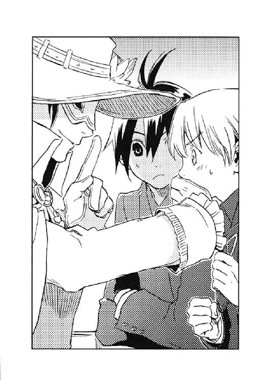

| 光の精煉師ディオン 天才指揮者とオペラ座で (角川ビーンズ文庫) | |
| 村田 栞 | |
| (2014) | |
光の精 師ディオン
師ディオン
天才指揮者とオペラ座で
村田 栞

角川ビーンズ文庫
本作品の全部または一部を無断で複製、転載、配信、送信したり、ホームページ上に転載することを禁止します。また、本作品の内容を無断で改変、改ざん等を行うことも禁止します。
本作品購入時にご承諾いただいた規約により、有償・無償にかかわらず本作品を第三者に譲渡することはできません。
本作品を示すサムネイルなどのイメージ画像は、再ダウンロード時に予告なく変更される場合があります。
本作品は縦書きでレイアウトされています。
また、ご覧になるリーディングシステムにより、表示の差が認められることがあります。
外は吹雪だった。
扉を開けた途端、墨を刷いたような闇から刺すような冷たい風と雪が吹き付け、男はコートの襟をかき合わせる。
「お父さん......寒いよ」
七、八歳ぐらいの少年が男の傍らに寄り添った。
男は少年の上着のフードを頭にかぶせ、
「すまない。お前までこんな目に遭わせてしまって」
と、肩を抱き寄せた。
男は振り返り、慣れ親しんだ王宮を見上げた。いくつもある窓には明かりが点り、風の音に混じって軽やかな室内楽の調べが聞こえていた。彼はしばらくの間、その音を聴きながら哀しい眼で光の漏れる窓を見つめた。
やがて、
「さあ、行こうか」
片手で少年と手をつなぎ、もう片方の手で大きなトランクを持って、男は膝丈ほどに積もった雪の上に足を踏み入れる。
「ルードヴィッヒ！ ベルナール！」
急に呼び止められ、男と少年は振り返った。イブニングドレスに毛皮のショールを巻き付けた美しい女が、カンテラを掲げて駆けてくる。
「テレーズ様──」
女──テレーズは白磁の頰を紅潮させ、眼には涙を一杯に溜めていた。
「いけません、テレーズ様。誰かに見られでもしたら、どのような噂を立てられるか......」
「わかっております。けれど......どうしても最後に一目......」
女は男と少年の前に立ち、こみ上げる涙を堪えて、
「これを持ってお行きなさい」
握っていた手の平を開く。
「これは──！」
白いレースの手袋の上には、大人の握り拳ほどもある大きなルビーが、カンテラの明かりを跳ね返して輝いていた。
「陛下はおそらく刺客を差し向けるでしょう。お守りに持っておいでなさい。あなたの身に万一のことがあったら、このルビーが世間の目に晒されるとほのめかしておけば、陛下も下手な手出しはいたしますまい」
「そのような......」
男はためらっていたが、女は男の手を取り、無理矢理にそれを握らせる。
「お願い、生き延びて......。わたくしのために......」
淡い色の瞳が男を見つめた。
「テレーズ様......」
男の瞳もわずかに潤む。震える唇が何かを言いかけたが、彼はそれを吞み込んだ。黙ってコクリとうなずき、ルビーを懐に入れる。
女はひざまずき、少年の顔を覗き込む。
「ベルナール......元気でね......」
「はい。テレーズ様も」
聡明な少年は明るい笑顔を作った。
女はしばらく少年を見つめていたが、とうとう耐えきれずに、彼の頭をかき抱いた。
「ベルナール、ベルナール......」
大粒の涙が止めどもなく溢れ出ていた。
少年はおぼろげに女の涙のわけを悟っていた。もう会えないのだと、温かな抱擁を心に刻む。
やがて、女は少年から離れ、レースの手袋で頰を拭った。
「さあ、お行きなさい」
女は立ち上がった。
男は少年の手をつなぐ。そして、まだ戦禍の爪痕も生々しい帝都の街へと足を踏み出した。
初夏の午後六時、夕日が空を朱に染め始めていた。陸軍庁舎の前で涼風に吹かれながら立っていたディオンとフェルナンドの前に、一台の四頭立て馬車が停まる。地味なしつらえの箱形馬車だが、馬はすばらしく立派だった。馬車の扉が開き、
「おいたばっ、おばたせっ！」
ものすごい鼻づまりの声で、若草色のふわりとしたドレスに金髪巻き毛の少女が顔を出して手招いた。顔立ちもなかなか愛らしいのだが、鼻の頭が真っ赤だ。
「アマーリエ、どうしたの、その声。風邪ひいちゃった？」
フェルナンドは心配げに眉をひそめる。
「どうぼ、そうだしいわ」
レースのハンカチを鼻に当て、少女──アマーリエ皇女殿下は、へクチンと可愛らしいくしゃみをした。
「だったら、今日のオペラ鑑賞は止めよう。無理は禁物だよ」
「私も、そう申し上げたのですが......」
馬車の中では、アマーリエの守り役、近衛隊のヘルマン少佐が困ったように笑っていた。
「大丈夫よ。早く乗って。人目につくのはばずいわ」
アマーリエがそう言うので、フェルナンドは馬車に乗り込み、ディオンもその後に続いた。
馬車が庁舎前の石畳をゆっくりと進み始めた。
「オペラなんていつだって見られるじゃないか」
「だって、やっとステージ下ど特等席が取れたんですぼど」
「特等席って──、王室専用のボックス席があるだろう？」
「いつぼどお席じゃ、ステージはよく見えるけど、ベルンハルトさばのお姿が見えないぼの」
「ベルンハルト様って？」
ディオンは尋ねた。
「ベルンハルトさばを知らだいど!?」
アマーリエは、再びへクチンとくしゃみをして、「これだから田舎者は嫌でー」と前置きし、
「ベルンハルト・ユンガーさば、国立歌劇場管弦楽団常任指揮者よ。背が高くって、渋くて、すっごくかっこいい」
彼の姿を思い出したのか、うっとりと微笑んだ。
「ふーん、指揮者ね」
どーせ、田舎者ですよ、とディオンは心の中で言い返す。ビヴロスの山の中で猟師をしていたディオンに音楽は無縁だ。帝都に出てきてから一年近く経つが、訓練と任務に明け暮れ、オペラ鑑賞など行ったことがない、というか行く気もなかった。アマーリエの誘い──命令がなければ、おそらく一生歌劇場などには行かなかったろう。
「昨年、突然彗星のように現れて、爆発的な人気を博してるって話には聞いてるけど、そうか、アマーリエはベルンハルトを見たくてこんな真似したのか」
フェルナンドはやれやれと肩をすくめた。
普段、王族の者が劇場などに行く場合は、主催者や出演者にも知らされ、しかるべき警備体制を敷いて専用のボックス席で鑑賞する。ところが今回はアマーリエが「お忍びでオペラを観に行きたい」とだだをこね、どういうわけかディオンとフェルナンドはそれに付き合わされることになったのだ。
「特等席どチケットを取るどじ、侍女たちじ何日ぼ交代で並んでぼらったどよ。今日を逃したら、いつばたベルンハルトさばを間近に見られるか、わからだいじゃだい」
呼気が鼻に抜けないので甚だ聞き取りにくいが、ベルンハルトの近くの席を取るのに大変な苦労があり、どうしてもキャンセルしたくないと言っているらしい。
「私も並びました」
ヘルマンは苦笑する。
（近衛隊の少佐をチケット売り場の列に並ばせたのか）
ディオンは目を剝いたが、口に出しては言えない。言えばアマーリエに百倍ぐらい言い返されるからだ。
（少佐はアマーリエ姫に甘すぎるんだよなー）
アマーリエは考え方もしっかりしてるし頭もいいし、わがままさえ言わなけりゃ、なかなかの皇女なのに、とディオンは思う。
「しょうのない子だね」
フェルナンドも小さくため息をついただけで、妹を咎めようとしない。フェルナンドもアマーリエには弱いらしい。
「びんだじくろうをかけたんだぼの、かぜだんかじばけられないわ。ヘクシュ」
（訳...みんなに苦労をかけたんだもの、風邪なんかに負けられないわ）
「おいおい、大丈夫か？ 何か薬を〈精〉しようか？」
ディオンは指無し手袋形〈精炉〉に玲石を貼った。〈精〉とは玲石を用いて様々な物質を造る技術である。主な原材料は源石だが、ディオンは源石以外からでも様々な物を造ることができ、特に医療関係の〈精〉が得意だった。
「、薬を......？」
アマーリエの顔はほころびかけたが、
「いいえ結構、あだたの〈精〉した薬をどんだら、かえって具合が悪くだりそう」
彼女はつんと横を向く。熱まで出てきたのか頰が赤い。お姫様のディオンに対する風当たりは相変わらずだ。
「わたくし、ディオンだんかじ心配されたってちっとぼ嬉しくだんか、ありばせんからね」
そわそわとハンカチの端を揉む。
（別に嬉しがらせるつもりなんかないって。それだけ鼻づまりしてりゃ誰だって心配するだろが。俺がそんなに嫌なら、オペラなんかに誘わなきゃいいだろ）
ディオンにはどうもアマーリエの思考回路が読めない。そう言えば、オペラを誘うにあたって、オペラ座の見取り図を手に入れて、構造を憶えておけと言われたが、なぜだろう。
そうこうしているうちに、馬車が停まった。
「着きましたよ」
御者が馬車の扉を開けた。フェルナンドが先に降り、優雅な仕草で妹の手を取って降ろしてやる。このあたりはさすが皇太子殿下だ。
アーガルド帝国国立歌劇場は、壮麗な石造りの建物だった。
歌劇場は帝国内にいくつかあるが、この国立歌劇場は帝都の名を取り、シャマナ・オペラ座と呼ばれている。〈精〉技術を駆使し、頑丈な建材を用いて巨大な空間を確保したホールは、三千もの座席を五階に配分してあり、帝国最大の観客収容数となっている。最高の舞台装置を備え、また、演奏家も超一流の折り紙が付かなければ出演できず、従って客層も貴族や豪商、大企業の重役などがほとんどである──はずなのだが、
「何か、女の子が多くね？」
馬車から降りたディオンの視界を埋めたのは、華やかに着飾った若い女性ばかりだった。若くないのも多少は交じっているが、いずれも女性である。皆、一様に花束やプレゼントの包みを持っていた。
「ベルンハルト目当てのお嬢様や奥様たちですよ」
ヘルマンも大きな花束を抱えていた。
「アマーリエ様のお供で、何度かボックス席から拝見いたしましたが、確かに音楽家として、ベルンハルトはすばらしい才能を持っていると思います。ロマン派のメロディックな曲を振らせたら、多分彼の右に出る者はいないでしょう。が、あの容姿で十八番が恋愛物ですから、どうしても女性客が多くなってしまうのでしょうね」
王宮付きの近衛兵はほとんどが貴族の子弟で、芸術にも造詣が深い。ヘルマンがそう言うのだから、ベルンハルト人気は顔のせいだけではなさそうだ。
「早ぐ、早ぐ」
アマーリエはドレスの裾をたくし上げて、正面入り口の石段を駆け上がる。
終演時間に迎えに来るよう御者に命じ、姫の後を追ってヘルマンも走り出した。
「指定席なんだから、そんなに慌てなくてもいいのに......」
ディオンとフェルナンドも仕方がないから一緒に走る。受付に花束を預け、ホールに入ると、すでに座席は埋まり、立ち見の客が通路をうろうろしていた。
アマーリエが苦労して取った席は、一階平土間の一列目中央だった。アマーリエがど真ん中に座り、フェルナンドとヘルマンがそれぞれ彼女の左右に座る。ディオンはフェルナンドの隣に腰掛けた。
「これじゃ、舞台がよく見えないね」
フェルナンドはステージを見上げる。確かに、三時間も観てたら首が痛くなりそうだ。
「いいよ。ベルンハルトさばさえ見られれば」
目の前は、一段下がった楽団のための席で、アマーリエの真正面に指揮台がある。オペラなどには興味のないディオンだが、指揮者の後頭部にはもっと興味がない。
（俺、三時間も座っていられるかな......）
獣道を走ったり崖をよじ登ったりするのは、何時間いや何日でも平気だが、じっと座っているのはせいぜい二十分が限度なのだ。
「今日の演目は〈ゆりの騎士〉なんだね。僕はアリア〈ああ、この胸の痛みを〉が好きなんだ」
フェルナンドはプログラムを開いてそれなりに楽しそうだ。
「シリヴィアはすばらしいソプラノですよ。彼女のコロラトゥーラは絶品です。パヴォルのテノールってどうでしょうかね。彼、以前はバリトンだったでしょう」
ヘルマンは話題に乗っているが、
（アリア？ コロラトゥーラ？ バリトンがテノール？）
ディオンには何のことだかさっぱりわからない。
「とにかく、ベルンハルトさばよ。楽しび楽しび」
アマーリエはチンと洟をかむ。途中でくしゃみが出ないことを祈ってあげよう。
楽団員が入場し、ウィーンウィーンと楽器を鳴らし始めた。
「始まったのか？」
美しいとはお世辞にも言えない音楽だ。
「違うよ、あれはチューニング。楽器の音が合うように調整してるだけ」
ここで嗤ったりバカにしたりしないところが、フェルナンドのいいところなのである。
ホールのブザーが鳴り、一拍おいて客席から黄色い声が上がった。颯爽と燕尾服を着こなし、右手に指揮棒を持った長身の男が、楽団の間を縫って歩いてくる。
「ああ、ベルンハルトさば......ベルンハルトさば......」
アマーリエは涙目で彼の姿を追っていた。
歳は三十を少し越えたぐらいだろうか、緩くウェーブのかかった濃いめの金髪は、一分の隙もなく整えられ、深い青の瞳は愁いを帯び、口元には薄い笑みをたたえていた。顔の肉が薄く、鼻筋も顎の線も鋭い感じだ。
「渋いなー」
お嬢様やおば様たちが騒ぐのも無理はない。
「でしょう？ でしょう？」
アマーリエはハンカチを握りしめて大きくうなずいた。
ベルンハルトは優雅に一礼し、指揮台に上がった。それだけで、周囲の空気が変わった。
一瞬のうちに広いホールがしんと静まりかえる。カリスマとはこういうことを言うのだろうか、ベルンハルトから何か神々しい光が発せられているような気がして、ディオンも思わず彼の後ろ姿に見入ってしまった。
指揮棒が上がった。
それが振り下ろされると同時に、弦楽器が一斉に美しい調べを奏で始めた。
まるで魔法のように、ベルンハルトの指揮棒に合わせて音が舞った。
旋律が体に沁みてくるようだった。音の美しさに鳥肌を立てたのは初めてである。
本当に甘く、ひたすら甘く、優雅で、少し哀しげで......。
（いい気持ちだ......）
ディオンはすーっと音の世界に引き込まれていった。
ハッと我に返ったのは、「ブラボー！」という歓声を聞いたためだった。
「え、何、どうした？」
見渡すと、観客は総立ちで拍手している。
「終わったんだよ。ディオン、よく寝てたね」
フェルナンドも立って拍手しながらディオンを見下ろし、ニッコリと笑む。
ベルンハルトの合図で、楽団員が起立した。振り返って挨拶をするベルンハルトと、ディオンは目が合ってしまった。
（やば、寝てたのバレたかな）
ディオン慌てて立って、盛大な拍手を送った。
「もー、信じらんだい。ベルンハルトさばを目の前にして爆睡なんて」
アマーリエはぎゅうぎゅうに人が詰まった廊下を泳ぐように進む。
「ディオンが熟睡するのは珍しいんだよ。宿舎じゃ、眠ってたってちょっとの物音で目を覚ましちゃうもの。で、猟銃を握って辺りを見回すの。いつも警戒してるんだね」
陸軍特殊部隊〈蒼い鷹〉専用宿舎で、ディオンとフェルナンドは共に寝起きしている。猟師をやっていた頃からディオンの眠りは浅かったが、極秘で軍人になった皇太子殿下を護らなくてはならないという気持ちが無意識に働いているのか、入隊してからは一層敏感になった。
「そのディオンが、オーケストラの演奏を間近にしてぐっすり眠ったんだから、ベルンハルトの音楽ってすごいんだよ」
（まあ、そうかも......）
妙なフォローだが、「やっぱりベルンハルトさばって天才ね」アマーリエは納得してくれたようだった。
「ところで、俺たちはどこへ向かってるんだ」
一方向を目指す婦女子たちに押されたり戻されたりしながら、ディオンは尋ねた。
「決ばってるじゃない。ベルンハルトさばの楽屋よ。サインぼらって、握手していただくの」
しかし、通路の途中では、「ここからは立ち入り禁止です」と係の者が通せんぼしている。
「そんな～」「ベルンハルト様に一目──」ファンの女性たちは係員を押しのけようとし、
「お帰りください」係員も負けずに押し返し、膠着状態になる。
「無理だよ。戻ろう」
フェルナンドは言ったが、アマーリエは諦めない。
「いいえ、何としてぼ楽屋行くわ。ディオン、別の通路を案内して」
「へ？」
「何どたべに、あだたを連れて来たと思ってるど？ あだた、潜入どプロでしょ」
そうか、そのために俺を誘ったのか。だからオペラ座の構造を憶えておけと言ったのか。
「そりゃ、通気口とか楽器搬入口とか、道がないわけじゃないけど......」
そんなことしなくても、皇女殿下だと堂々と名乗れば、楽屋に入れるのでは？
「さあ、どっちへ行けばいいど？ 一旦、外へ出て──」
アマーリエは人波に逆らって進み始めたが、
「あら......？ 地震かしら、揺れてる、あ、天井ぼ回ってるわ」
足をもつれさせた。
「おい、どうした」
咄嗟にアマーリエの手を取ったディオンは、その熱さに驚いた。アマーリエがディオンの腕の中に倒れ込んでくる。
「だ、何するど......失礼」
抗議するアマーリエの顔は真っ赤だ。自分から倒れかかってきたんだろが──という言葉を吞み込んで、ディオンは彼女の額に手を当てた。
「すごい熱だ」
それを聞いてフェルナンドとヘルマンが人混みをかき分けて寄ってきた。
「とりあえず外へ。馬車に乗せましょう」
アマーリエはお忍びだし、フェルナンドに至っては極秘の入隊である。わけを話してオペラ座の一室を借りることもできない。
「嫌よ。ベルンハルトさばに会うばでは、帰らだい！」
じたばたするアマーリエを抱き上げ、ディオンは正面玄関前のポーチで待っていた馬車に、彼女を乗せた。
アマーリエはしばらくだだをこねて会場に戻ろうとしたが、「無理に会えば、ベルンハルトに風邪が感染るぞ」の言葉で大人しくなった。
シートに寝かせて脈を取ったり喉を見たりと、簡単に診察する。
「呼吸が浅いな。肺炎を起こしてるかも」
ディオンの言葉に、フェルナンドとヘルマンは蒼白になった。
「ちゃんと胸の音を聴かないと、どんな薬を〈精〉すればいいかわかんないけど──」
ディオンが言うと、
「胸の音を聴くって──嫌よ、嫌よ。ディオンの耳が胸に付くなんて、ぜぇぇぇぇったいにいやっ！」
真っ赤な頰が一層赤くなり、熱で充血したアマーリエの目に、大粒の涙が溜まる。
（やっぱり──）
女の子に泣かれるのは弱いのである。すがるようにフェルナンドたちを振り返ると、
「このまま国立病院へ行きましょう。王宮に戻るよりその方が早い」
ヘルマンはそう言って、御者に指示を出した。
国立病院で診察を受けたアマーリエは、緊急入院することになった。やはり重篤な肺炎を起こしていたらしい。
「しばらく入院が必要ですが、命に関わるほどではないとのことです。ご心配をおかけいたしました」
人目に触れないよう、馬車で待機していたディオンとフェルナンドにヘルマンが報告する。
「最初にディオンに診てもらえば、ここまで悪くならなかったかもしれないのに」
フェルナンドはブツブツと言った。
「俺、誰かからこんなに嫌われるの、初めてだ」
思わずディオンがつぶやくと、
「そうではありませんよ」
ヘルマンはニコニコと笑った。

ディオンたちがオペラ鑑賞に出かけていた頃──。
現皇帝の父フィリポ六世が余生を過ごすフォルセティの離宮から、アーガルド帝国陸軍総司令官宛てに電信が送られてきた。
「何てことだ──」
入電文を読んだ総司令官エイモス・アーベルン元帥は、一言そうつぶやくと、グシャッと電文を握りつぶした。
「今頃になって、誰が......。あの秘密を知っている者が、まだどこかにいるというのか──」
「元帥？」
電文を持ってきた秘書官は、怪訝な顔で問い返す。勇猛果敢且つ沈着冷静で、六十を超えた今も敏腕をふるって帝国陸軍を統べる彼が、これほどの動揺を見せることは滅多になかった。
「キースを呼べ。──いや、私が直接出向く。〈蒼い鷹〉を召集しておくように連絡しておけ」
エイモスは手早く上着に袖を通し、ふと唇を嚙む。
「その前に、陛下に目通りを願わねばならん。馬車を用意しろ」
サッと敬礼し、退室する秘書官を目で見送り、
「皇帝の座が......、二百年続いたシャウエンブルク王朝の終焉か......」
エイモスは苦いため息をついた。
「盗まれたのは、一昨年亡くなったテレーズ様の宝冠だ」
帝国陸軍第十三師団第七部隊、通称〈蒼い鷹〉宿舎の広間、深夜に緊急召集された隊員たちの前で、エイモスはそう告げた。
「お祖母様の──」
フェルナンドが息を吞み、〈蒼い鷹〉隊員は一斉に彼を振り返る。フェルナンドが実は皇太子であることは、王宮のごく一部の者とエイモス・アーベルン元帥、そして〈蒼い鷹〉隊員だけが知る秘密だった。
「左様、先代の皇帝フィリポ六世上皇陛下にお仕えしていたテレーズ様が、後宮に上がる際に、ご実家から帝国に贈られた物だ」
エイモスはフェルナンドに向かってうなずく。
「宝冠は、上皇陛下のおわすフォルセティの離宮の宝物庫に保管されていたが、それが紛失していると、先刻、離宮から連絡が入った」
宝物庫は常時鍵がかけてあり、歩哨が朝夕の二回見回るが、今朝も異常はなかったいう。昼過ぎに別の用事で侍女が宝物庫に入り宝冠の紛失に気づいたが、離宮は王宮ほどの警備体制が敷かれていないためか、誰も不審な者を目撃していないとのことだった。
「もしや、血の玲石を狙って......」
フェルナンドの唇が震えていた。
「血の玲石？ 宝冠にそんな物が付いてるのか」
ディオンは問い返した。血の玲石とは血のように赤いことからその名が付けられ、色も艶も宝石のルビーによく似た玲石である。
「うん。僕が最後に宝冠を見たのはお祖母様の葬儀の時で、僕はまだ〈精〉の勉強してなかったから、特に興味はなかったんだけど、今思えばあれは最上級の血の玲石だった」
「〈精師〉である諸君は知っての通り、血の玲石は生き物を操ることができる。また、生き物を〈精〉する場合にも不可欠の玲石だ」
一同の視線が、ディオンの足下でお座りしている恐い顔の黒い大型犬と、愛らしい白い小型犬に注がれた。この二頭、アッシュとシュネーは〈精〉で造られた人造犬で、彼らの脳には血の玲石が埋まっている。血の玲石は外部刺激を特殊な信号に〈精〉し、言語理解させたり手足を動かしたりする重要な機能を持つのだ。
「犯人の目的が黒雷獣製作である恐れも十分にある。我が帝国にムスベルの轍を踏ませるわけにはいかない」
黒雷獣とはムスベルが〈精〉した生ける兵器である。凄まじい破壊力を持ち、二十六年前、ムスベルは黒雷獣の暴走により白い砂礫の荒野と化してしまったのだ。
「本来ならば警察の仕事だが、紛失したのが極上の血の玲石となれば、事件を公にはできない。この件は極秘扱いとし、〈蒼い鷹〉に宝冠の捜索と犯人逮捕を命ずる」
「了解」
〈蒼い鷹〉隊員は一斉に敬礼した。そこへ、
「元帥閣下」
立派な身なりの老人が、陸軍本部の下士官に案内されて来た。
「じいや!? 何でここへ」
フェルナンドの守り役ノルン帝領伯ゲオルグ・シュバンハイムである。ディオンが彼に会うのは、入隊式以来だから、かれこれ一年ぶりぐらいだろうか。
「ちょっとアーベルン元帥閣下にお話がありましてな。本部に伺ったらこちらだということだったので」
シュバンハイムの顔は心なしか青かった。エイモスはうなずくと、
「キース」
〈蒼い鷹〉指揮官である義理の息子を呼んだ。
キース・アーベルン中将──輝く真珠色の髪、凍った海を思わせる薄青の瞳、比類なき美貌と天才的な頭脳を併せ持つ彼は、二十八歳の若さで中将の地位を得、養父の跡を継いでいずれは総司令官に上り詰めるだろうと目されている。
三人は小声で何か囁き交わした。やがてキースは、
「具体的な指令は一時間後に出す。それまでにフェルナンドは宝冠と血の玲石の形状その他の特徴を皆に説明しておいてくれ」
と、部下に言い置いて、エイモス、シュバンハイムと共に別室に姿を消した。
「やばそうな雰囲気だな」
カイル・ブラナー大佐はボサボサの茶髪をポリポリと搔いた。
「極上の血の玲石となりゃ、連邦やらムスベルの秘密組織やら、喉から手が出るほど欲しがっている連中はいるだろうがよ──」
大陸の西に位置するヨートゥン共和国連邦は、帝国とは現在休戦中だが、一触即発の緊張状態にある。また滅びたムスベルの生き残りの一部が秘密組織を結成し、国の再興を目指して地下活動を行っている。どちらも生ける兵器黒雷獣の〈精〉を目論み、それを阻止することは〈蒼い鷹〉の重要な使命の一つだった。
「じっちゃんがお出ましとなると、それ以外にも何かありそうな──」
カイルは陸軍総帥とその息子、そして王宮のご意見番が消えた扉を見る。カイルはキースの片腕として〈蒼い鷹〉では第二席の地位にある。その彼が呼ばれなかったということは、扉の中では、王宮の極秘且つ重大事項が話されているということだ。
「宝冠に、何か秘密があるの？」
唯一の女性隊員ジェイダ・ファーロング大尉が尋ねた。
「うーん、秘密なのかな......王宮ではよく知られてる話なんだけどね」
フェルナンドの周りに、隊員たちが集まる。
「僕の本当のお祖母様はカロリーネって言うのは知ってるでしょ？」
現皇帝コンラート四世の生母は、先帝フィリポ六世の正妃、カロリーネ皇太后である。
「テレーズお祖母様は、十五の歳で嫁いで──って言ったって、お祖父様にはもうカロリーネお祖母様という正妃がいたから、妾妃として後宮に上がったんだけどね。表向きは北方の地方領主の娘ってことになってるけど、実は当時のムスベル王の姫なんだ」
「ムスベルの王女!?」
隊員たちは驚いたが、田舎育ちのディオンは先帝の妾妃の話をされてもいまいちピンとこない。
「ちょっと待って。テレーズ様は一昨年、確か四十七歳で亡くなったのでは？ 十五の時って、帝国とムスベルは戦争の真っ最中だったはずよ。政略結婚にしたって──」
ジェイダは指を折って年数を数える。
「お祖父様は攻め入ったついでに、テレーズお祖母様を無理矢理略奪してきたみたい......」
「うわ、フィリポ六世、やるな」
カイルは妙に感心していた。
「テレーズお祖母様は着の身着のままで、侍女の一人もなく、馬に乗せられて連れて来られたんだ。ムスベル王は相当怒ったらしいよ。でも、その時の戦況は帝国が優勢でね、ムスベル王はテレーズを返して欲しいと、王家に伝わる大切な宝冠を寄越したんだ」
「それが今回盗まれた宝冠てわけね。でも、テレーズ様はムスベルに帰らず、ずっと帝国にいたでしょ？ 宝冠も帝国にあったし、どうして？」
「ムスベルに帰らなかったのは、お祖母様の意思だったみたい。なぜなのか理由はわからないけど──。宝冠はお祖父様が何だかんだ言って返さなかったらしい」
「そのうちムスベルでは黒雷獣を〈精〉して、帝国に攻めてきて、結局二十六年前、宝冠も王女も取り戻せないまま、自分たちの造った黒雷獣によって滅びたってわけね」
ムスベル難民だったジェイダは妖艶な唇に苦い笑みを浮かべた。
「ムスベルは〈精師〉の国だったものな。王家の家宝となりゃ、相当すげー血の玲石だろうし、それが盗まれたのは一大事だし、テレーズ様が略奪されたムスベルの姫だったってのは驚愕の事実かもしれないけどよ──」
カイルは、アーベルン親子とシュバンハイムが密談をしている部屋に目を移し、
「本当にそれだけか......？」
まだ腑に落ちない様子でつぶやいた。
宝冠の捜索は、その夜のうちに始まった。
〈蒼い鷹〉は班に分かれ、それぞれ帝都の繁華街や密輸業者の出入りする港街へ向かい、辺境へ情報収集に行く隊員たちも出立した。
しかし、ディオンとフェルナンド、アッシュ、シュネーにはなかなか指令が出ない。
「いつもはジェイダの班に入るけど......」
ディオンはキースの執務室の方を見る。キースとエイモスにカイルが加わり、ディオンたちをどこへ捜索に向かわせるか、もめているようだった。
「あなたたちをムスベル人居留区に潜入させられないもの」
「あそこは治安が悪いし排他的だからね」
ディオンたちと一緒に広間に残っていたジェイダとユアンは言った。ムスベル人の彼らは、明日の早朝から難民キャンプへ情報収集に行くことになっていた。
「僕がフォルセティの離宮に行って、色々聞き回ったらやっぱりまずいよね。お祖父様は僕が〈蒼い鷹〉に入隊したことを知らないし──。身分を隠した皇太子ってほんと役に立たないね」
フェルナンドの声は沈んでいる。中将が自分の身を案じて、危険のない任務に就かせようと心を砕いていることを、申し訳なく思っているのだ。
「そんなことないさ。宝冠を実際に見たことがあるのはお前だけだからさ、お前をどこへ送り込むかって、すごい重要だぜ。きっと綿密な作戦を練ってるんだよ」
ディオンは言った。慰めでも何でもなく、自分が指揮官ならそうする。
「その通り」
執務室の扉が開いて、エイモスが姿を現した。キース、カイルもその後ろから出て来る。
「ディオン、フェルナンド、お前たちには不夜城へ行ってもらうことになった」
キースの言葉に、ジェイダとユアンはひどく驚いた様子だった。カイルは天井を仰いでポリポリと頰を搔く。
「不夜城？」
ディオンは訊き返した。初めて聞く言葉だったし、ジェイダたちが驚く理由もわからない。
「また、なぜそのような所に......」
ジェイダは怯えていた。
「ディオンが言ったように、フェルナンドは宝冠も、それに付いている血の玲石も目にしているからだ」
エイモスは言った。
「不夜城ってのは、まー言ってみれば大人の秘密の娯楽施設でさ」
カイルが話を引き継いだ。
「普段はカジノをやってるんだが、子どもにゃ言えねー遊びの斡旋もするし、公にできねー談合の会場にもなるしっていう所だ。で、盗品の売買もやらかすんだが、来週の土曜は仮面舞踏会にかこつけて、オークションが開かれる。もしかすると宝冠が競売にかけられるかもしれねーだろ」
「フェルナンドに宝冠を見極めさせて、競り落とせと......？」
ジェイダの問いに、
「そうだ。落札額は莫大なものになるだろう。間違えて違う物を買うわけにはいかない」
エイモスは答えた。
『真面目に競売に参加するの？ それは盗品だって没収すればいいのに』
シュネーの疑問はもっともである。
「不夜城の常連客は、有力な貴族や大会社の役員なのでな、下手に介入すると、かえって我々の首を絞めることになるのだよ」
エイモスは苦い顔をする。
「けれど、フェルナンドが虚無伯爵に目を付けられたら......」
ジェイダは心配そうに皇太子を振り向く。
「虚無伯爵って？」
そんな名字も領地もあるわけない。ないから虚無なのか？ いずれにしろ怪しい名前である。
「不夜城のオーナーのあだ名よ。国家予算に匹敵する資産を持っていてね、帝国の政治経済は、実は彼が裏で操っているとも言われているわ」
「うわ、陰の黒幕ってやつ」
「問題は......」
ジェイダは言いにくそうに声を落とした。
「虚無伯爵が、美少年好きの変態中年だってことよ」
「げ──」
ディオンとフェルナンドは思わず一歩退く。
「え？ 僕は可愛い者を苛めずにはいられないサディスティックな老人だと聞きましたが」
ユアンは首を傾げる。
「げげ──」
「俺は妖艶な熟女だって聞いたぞ。気に入れば老若男女問わず、自分のハーレムに引き入れるって。俺はその噂を支持したい」
カイルは何となく嬉しそうだった。
「げげげ──」
（だから、俺たちの潜入先がなかなか決まらなかったのか）
ディオンは虚無伯爵の姿を想像して背筋が寒くなったが、フェルナンドも真っ青になっていた。
「つまり、帝国の情報収集を担当する〈蒼い鷹〉ですら、虚無伯爵の実体をつかめていないということだ。案ずるな、不夜城には私とカイルも同行する」
キースは相変わらずの無表情である。
『もしも、可愛いモノを苛めるおじいさんだったらどうしよー』
一応は可愛い部類に入ると思っているシュネーは本気で心配していた。
そこでキースはハッと気づいた。フェルナンドには警護役としてディオンを付けるが、彼には、もれなく二頭の犬が付いてくるのだ。カイル以外誰も知らないが、キースは超がつく生き物恐怖症だった。
（馬車の御者台に乗せるとして、その後は？ もしもオークションに宝冠が出品されたら？）
天才的な頭脳が不夜城で起こり得るありとあらゆる事態を想定した。そして出した結論は、
（連れて行きたくない......）
表情は変わらないが額に汗を浮かせて押し黙るキースを、部下も養父も不思議そうに見た。
「アッシュとシュネーには、フォルセティの離宮で窃盗犯の足取りを追ってもらう」
しばらくの沈黙の後、キースは言った。
『でも、離宮の捜査班はもう出立してしまいましたが』
アッシュが言うと、
「お前たちの足ならば、夜明け前には追いつくだろう。かか可愛いお前たちをサド老人の餌食にするわけにはいかない」
キースは珍しく嚙んだ。視線は微妙にアッシュからずれている。
『ちゅーじょー、ありがとっ！』
盛大に尻尾を振ってキースに飛びつこうとしたシュネーを、カイルは片手を伸ばしてわしづかみした。
「はい、お出かけの準備をしなさいね。犯人逮捕は君たちの腕、じゃなくて鼻にかかっているんだよー」
カイルはポイとシュネーを放り投げた。シュネーは宙で一回転し見事に着地すると『はーい』と元気よく広間から駆け出したので、キースが髪を逆立て、激しく動悸を打つ胸を押さえていることに気づかなかった。
その週の土曜、ディオンたちはカイルの操る馬車に乗り、不夜城へと向かった。
「随分とへんぴな場所にあるんだな」
商人の息子を装って、フリル付きのブラウスに派手な刺繡の入ったジャケットに身を包んだディオンは、馬車の窓から外を覗いた。中天にかかる上弦の月が、空を濃い藍色に染め、森の木々を墨色に浮かび上がらせている。帝都の明かりはすでに遠い。人家は一つもなく、辺りはしんと静まりかえり、ただ蹄と車輪の音だけが深い森に吸い込まれていった。
「人目に付かない場所をわざわざ選んで建てたんだろうね」
フェルナンドもディオンと同様に刺繡入りジャケットだが、育ちの良さがにじみ出て、やはり貴族の子弟にしか見えない。
「完全会員制で、会員以外の者には不夜城の場所を知らせてはならないという規約があるそうだ。一般人は不夜城の存在そのものさえ知らないだろう」
キースも大店の若旦那風にフロックコートにアスコットタイといういでたちである。
「あ、見えてきた。あれかな？」
森の奥に、古風な尖塔を配した城が黒々とそびえ立っていた。
「今のうちにこれを付けておけ」
キースは二人に目の周りだけを覆う仮面を渡した。今夜の不夜城の催し物は仮面舞踏会とオークションである。
「僕だってばれないかな。不夜城の客には僕をよく知ってる人もいるはずなんだ」
仮面を付けながらフェルナンドは言った。
「フェルナンド皇太子がお忍びで不夜城にやって来たのがばれたって、後からどうにでもなるさ。問題は虚無伯爵だよ。美少年好きの変態中年だったらどうしよう」
帝国を陰で操る大物相手にフェルナンドを護りきれるだろうかとディオンは不安だった。
不夜城は堅固な城壁に囲まれていた。巨大な門扉は閉ざされ、両脇にはかがり火が焚かれている。かがり火の下には、門番らしき男が二人立っていた。黒いスーツに黒いシャツ、黒いネクタイと黒ずくめの上、黒い仮面を付けている。左肩がわずかに下がっているのは、ショルダーベルトに拳銃を下げているためだろう。
この門を通るには、正式な客であることを証明しなくてはならない。しかしそこはさすがに〈蒼い鷹〉で、不夜城のとある常連からオークションの招待状を手に入れ、巧妙に偽造した物を用意してあった。
カイルが御者台から降り、門番にその招待状を見せた。門扉が開き、ディオンたちを乗せた馬車は、不夜城内へと招き入れられた。
「ようこそ。不夜城へ」
仮面を付けた黒ずくめの男が、正面玄関の大扉を開けた。
途端に、人々のさざめく声が耳に飛び込んでくる。大広間は、むせかえるような人いきれと煙草の煙で満ちていた。
「お、あちらに美しいご婦人が、虚無伯爵かもしれない。ちょっと話してみるか」
カイルは足取りも軽く、壁際の長椅子で所在なさげにグラスを傾けている女性に近づいていった。しかし、すげなく断られたのか、カイルはすぐに別の女性の所へ行く。
女性たちの間を渡り歩くカイルを見ながら、「あれも、諜報活動のうち？」とフェルナンドはつぶやき、キースの眉間の皺は深くなっていった。
「なかなか伯爵に巡り合えないなー」
口元を緩ませてカイルが戻って来ると、
「当たり前だ。お前、ここへ何しに来たんだ？」
キースはつかつかと広間の奥へ歩き出す。
打ち合わせ通り、ディオンとフェルナンドも客たちの間を縫って奥へと進んだ。歩きながら、客の様子や大広間の間取り、黒ずくめの従業員たちの配置を探る。何気なく客たちの会話に耳を傾けたが、他愛のない世間話ばかりで、大した情報は得られなかった。
やがて、カランカランと鐘の音がし、「オークションを開始いたします」と告げる声がした。
広間奥に並べられたソファーには、すでにキースとカイルが腰掛けていた。ディオンとフェルナンドも彼らの隣に座る。
「不夜城のオークションにようこそおいでくださいました」
進行係は黒服に黒い仮面の男で、特に主催者らしき人物の登場もなく、オークションは始まった。
「本日最初の品は、ハスディングの風景画、一六三三年作、油彩三十号──」
ディオンには絵画の価値などわからないが、フェルナンドは「あの絵が、何でこんな所に......」と驚いていて、付いた値も目が飛び出るほど法外な額だった。
絵画の他にも彫刻や焼き物などの美術工芸品、宝石類などが競りに出され、「あれ一個で、俺の給料の何十年分にあたるんだろ......」と、悲しくなるような値段で落札されていった。
「宝冠は出品されなかったね」
オークションが終わり、フェルナンドはがっくり肩を落とす。玲石もいくつか出たが、どれも血の玲石ではなかったのだ。
「奥へ潜入してみる？」
ディオンは尋ねたが、
「いや、余計な警戒心を持たれては、今後の捜査がやりにくくなる。今日のところは引き上げよう」
キースは席を立った。
「虚無伯爵に会いたかったなー」
カイルは、伯爵熟女説を捨てていないようだ。
やがて、優雅なワルツの調べが会場に響いた。一応は仮面舞踏会なので、これからダンスタイムなのだろう。ディオンたちは出口に向かって歩き始めていたが、ふと、フェルナンドの足が止まる。
「あれ、この音は──？」
「どうした？」
キースたちも振り返る。フェルナンドは室内楽の音色にじっと耳を傾けていた。
「きれいなヴァイオリン......。秘密の舞踏会の演奏なんかさせておくの、もったいない」
フェルナンドは広間の隅で演奏する室内楽団に目を移す。楽団員も全員黒服に黒い仮面を付けていた。不夜城関係者の制服なのかもしれない。
「やっぱり。でも、何で彼がここに？」
「やっぱりって？ 彼って誰？」
ディオンが尋ねると、
「この間観たオペラだよ。国立歌劇場管弦楽団の第一ヴァイオリン。そのうちの一人があそこで演奏してる」
フェルナンドは答えた。
「何でそんなことがわかるんだ？ 仮面を付けてるってのに」
「そりゃ、音色とかボーイング──弓の運び方とかで。彼、ちょっと特徴があったから憶えてたんだ」
自身もヴァイオリンの名手であるフェルナンドには、そんな些細なことも聞き分けられるらしい。
ちょうど一曲目が終わったので、フェルナンドはその楽団員に話を聞きに行った。
「よくわかったね。やあ、参った」
彼は苦笑いした。
「以前、ここで演奏していて、オペラ座に引き抜かれたんだ。オペラ座の楽団員にはそういう演奏家が何人かいるよ。今日はこっちで欠員が出たっていうから、急遽代理で来たんだ。でも、内緒にしておいてくれないかな。まともに音楽学校も出てなくて、こんなとこで弾いてたやつがオペラ座に出てるなんて知られたら、国立歌劇場管弦楽団の名に傷が付くからさ」
一緒に話を聞いていたキースの表情は変わらなかったが、片眉がピクリと上がった。
〈蒼い鷹〉宿舎に戻ってから彼は意外な指令を出した。
「フェルナンド、国立歌劇場管弦楽団のオーディションを受けろ」
「は？ いいですけど──」
「そっか、虚無伯爵は意外にも音楽に興味があって、オペラ座の後援をしているかもしれねーな。このご時世じゃ、パトロンなしじゃ歌劇場なんてやってけねーもん」
カイルがうなずく。
「そうだ。不夜城の情報をオペラ座から得られるかもしれん」
「警護役はどうする？ フェルナンド一人を行かせられねーだろ、仮にも皇太子だし」
「カイル、お前は何か楽器ができるか？」
「じょーだん！ 俺は小麦は碾けるが、楽器は弾けねー」
パン屋の息子はブンブンと頭を振った。
「お前こそ、ピアノだかチェンバロだかが弾けたんじゃねーか？ って、陸軍中将がオペラ座へ潜入は無理か。お前の顔は有名だし」
カイルとキースの目がゆっくりとディオンに移った。
「ちょ、ちょっと、俺はだめ。幼年学校九年間、音楽の成績はずっとＣだったんだ」
ディオンは顔の前で手を振った。
「しかし残っているのはお前しかいない。努力すれば何とかなる」
「何とかなるって、そういうレベルの話じゃ......」
キースの薄氷の瞳がディオンを射た。
「これは命令だ」
「ひ～」
音楽の「お」の字も知らないのに、ディオンはオペラ座潜入を命じられてしまった。
「黒丸に棒が付いてるのが、四分音符。リズムはタンタンタン。棒に旗がついてるのが、八分音符。リズムはタタタタ。カラスが止まってるみたいな印が四分休符。これはお休み」
「こうか？ タンタンタンウンタタタタタンウン」
「そうそう。上手」
翌日から特訓が始まった。〈蒼い鷹〉の宿舎、おぼつかない手つきで小太鼓を叩くディオンを教えているのは、王宮で幼い頃から超一流の演奏家にヴァイオリンの個人指導を受けていたフェルナンドである。
幼年学校時代に、カスタネットとタンブリンとトライアングルを触ったぐらいで、楽譜もろくに読めないディオンに、
「打楽器は、指揮者の棒の速さに忠実であることが重要だ。つまり動体視力と反射神経が物を言う。その点では、お前は〈蒼い鷹〉で一番優れていると言えよう」
とキースが曰い、打楽器のオーディションを受けることになったのである。
「十六分音符もオッケーだね。じゃ、次、ロールいってみよう」
ダラララダダダララ──。
「だめだ～。手首、いてー」
動体視力と反射神経だけでは打楽器奏者になれないのだ。
「オーディションじゃ木琴の演奏もしなくちゃなんないのに、こんなんで受かるわけないじゃないか」
「そうだね、弦楽器や管楽器に比べれば、打楽器は取っつきやすいかもしれないけど、だからって簡単な楽器ってわけじゃないからね」
オーディションまであと一週間しかない。どうがんばっても遂行不可能な任務だ。
「なんで、俺がこんなことしなくちゃなんないんだ」
スティックを放り投げ、赤むけになった指を眺める。指無し手袋形の〈精炉〉が摩擦でテラテラと光っていた。
「小太鼓のロールより、弾丸を連続〈精〉する方がよっぽど楽だ」
つぶやいたディオンに、フェルナンドはハッと顔を上げる。
「ディオン、それだよ！ 連続〈精〉」
「へ？」
「ディオンならできるって言うか、ディオンにしかできない楽器演奏法がある！」
フェルナンドは空色の瞳を輝かせた。
一週間後、ディオンとフェルナンドはオペラ座のステージに上がっていた。身に着けているのは軍服ではなく、いいとこのお坊ちゃんを装って、シルクのブラウスに黒いズボンである。
観客は男性が四人だけで、彼らは楽団席──オーケストラピットのすぐ後ろ、正面真ん中の席に並んで腰掛けていた。向かって右端のスーツ姿はオペラ座の支配人。その隣の渋い美形は、今をときめく指揮者ベルンハルトだ。彼の隣でニコニコと人の好さそうな笑顔の老人は、第一ヴァイオリンの首席奏者──コンサートマスターというらしい──ヴォルフだ。左端の大男はパーカッションのリーダー、グスタフである。
「では、フェルナンド君。課題曲をどうぞ」
支配人が言った。
フェルナンドは優雅にヴァイオリンを構え、課題曲として指定された超難しい練習曲をすらすらと弾き始める。
「ほう──」
ベルンハルトとヴォルフが身を乗り出した。
自由曲は、ディオンも耳にしたことがあるヴァイオリン独奏曲だった。ヴォルフは支配人やベルンハルトにこそこそと耳打ちする。演奏が終わると、
「君は誰に師事したのかね」
ヴォルフは尋ねた。
「いえ、特には......。親戚にヴァイオリンの上手な人がいて、ちょっと教わっただけです」
フェルナンドの出自は地方領主の子弟ということにしてあるので、そこは適当に返事をする。
「ふむ。君の弾き方が儂の知り合いによく似ていたので、もしやと思ったのだが。皇帝陛下やそのお子様方にも教えたやつでな、そうか単なる偶然か」
これには、フェルナンドもディオンも頰が引きつった。
「いずれにしろ、見事な演奏だった。フェルナンド君、君は合格だよ。早速明日から練習に加わってくれ」
「ありがとうございます」
色々な意味でディオンとフェルナンドはホッとした。
「では、ディオン君。まずはスネアドラムから演奏してくれたまえ」
ディオンはゴクリと唾を吞みスティックを握る。二本のスティックの握り部分には玲石が仕込まれ、手袋に貼った玲石と連動して圧縮空気が〈精〉できるようになっていた。
ディオンは演奏を始めた。軽快な音がホールに響く。実際にはスティックが太鼓に触れることはなく、ディオンの手から生まれた空気の塊が打面の皮にぶつかっているのである。
ディオンはこの一週間、圧縮空気をリズムもテンポも正確に〈精〉できるよう練習を重ねてきた。空気を丸めて固めるだけの〈精〉だから、材料の源石も要らないし、高速且つ連続で〈精〉できるので、実際に太鼓を叩くよりディオンにとってはずっと楽だった。今では、空気の塊の密度や大きさを調整して、音色を変えるという離れ業もできる。
パーカッション担当のグスタフが巨体をよじってヴォルフに耳打ちした。
（どうだったのかな？ 一応は間違えずにできたんだけど......）
音楽性皆無のディオンには、自分の演奏の出来不出来がよくわからない。
「次、シロフォンをやってみて」
ディオンはマレットと呼ばれる木琴用のバチを取り出す。このマレットにも玲石がはめてある。鍵盤打楽器は太鼓類と異なり、目的の場所に向かって正確に空気の弾を撃ち出す必要がある。これは楽譜が読めないディオンにとっては至難の業で、結局フェルナンドに教わりながら、課題曲を丸暗記したのだった。
ポロポロと美しい音色で演奏するディオンの手元を、グスタフがじっと見つめていた。
（やば、バチが木琴に当たってないの、わかっちゃったかな──）
〈精〉は正確にできているが、マレットの動きと音が微妙にずれてしまうことがあるのだ。
「はい、そこまで」
ヴォルフがパンパンと手を叩いた。そして審査員四人は顔をつきあわせてひそひそと話し始める。フェルナンドの時と比べると随分長い話し合いだ。
（うう──緊張する）
フェルナンドが合格してしまった以上、何とか一緒に入団しなくてはならない。
やがて、男たちの密談が終わった。
「ディオン君、君の演奏は何だか変だ。あんな奏法で、まともな音が出るわけない」
グスタフに言われ、ディオンはビクッとした。やはり一流の演奏家の目は節穴ではないのだ。
「だが、不思議なことに、ピアニッシモからフォルティシモまで変幻自在。テンポ・ジュストそしてアニマート。私は悪くないと思った」
ベルンハルトは静かに言った。声まで渋い。けどそれって何語？
フェルナンドがホッと頰を緩ませたところを見ると、〈精〉で圧縮空気を撃ち出してたのがばれたのではないらしい。
「一応、君は仮採用としておこう。明日から練習に来たまえ」
ヴォルフはニッコリと笑った。
「まあ、オペラ座に潜入!?」
ベッドに半身を起こし、アマーリエは頓狂な声を上げた。
「しーっ、しーっ。誰かに聞かれたらまずいよ」
フェルナンドは慌ててアマーリエの口を押さえた。
「大丈夫よ。今、この病棟にはわたくししか入院してないもの。さっき回診があったばかりだから、当分誰もやって来ないわ」
国立病院の王室専用病棟である。王宮にも診療室があって侍医が常勤しているが、肺炎を起こしたアマーリエを最初に担ぎ込んだのがここだったので、彼女はそのまま入院していたのだ。
アマーリエが「退屈で退屈で死にそう。お兄様、お見舞いに来て。ディオンはどっちでもいいけど、お兄様のお供をしたいと言うなら来てもいいわよ」と何度も使いを寄越すので、オーディションの帰りに二人で見舞いに来たのである。
「けど、ディオンが管弦楽なんてねー。お猿がヴァイオリンコンチェルトを演奏するって聞いても、今ほど驚かないと思うわ」
（はいはい、俺だって驚いてるよ）
アマーリエの嫌みにも慣れてきた今日この頃である。
「ベルンハルト様の指揮で演奏できるなんて、いいわねー。わたくしも一般人のふりしてオーディションを受けようかしら。チェロは結構得意なのよ」
「止めてください。私の寿命がまた縮んでしまいます」
ヘルマンが隣室からコーヒーを運んで来た。
「殿下からも無茶をしないように仰ってください。熱が下がった途端に、相変わらずの破天荒ぶりを発揮して、しょっちゅうベッドを抜け出してしまわれるのです」
「だって暇なんだもの。それに病院って、手術室とか霊安室とか色々な部屋があって、とても面白いわ」
「院内を徘徊してるのか？ 連邦の密偵に誘拐されたらどうするんだ。それに、流行病とかで入院してる人もいるんだよ。感染ったら大変じゃないか」
フェルナンドは真剣な表情だったが、
「平気平気、わたくしがアマーリエだってわからないように、おっきなマスクして探検してたから、他の病気をもらったりはしないわよ」
世間知らずで無鉄砲なお姫様は気にした風もない。やれやれと顔を見合わせるフェルナンドとヘルマンの様子も眼中にはないようだ。
「そうそう、探検してたらすごいこと知っちゃった。ベルンハルト様のご親族らしい方が入院してるのよ」
アマーリエは興奮した様子で語る。
「先日、ベルンハルト様がお見えになったのを偶然見かけて、こっそり後を付けたの。彼が入っていった病室の名札を見たら名字が同じだったの」
皇女のすることだろうか。
「ねえ、今から見に行ってみない？ ご親族がどんな方か知りたいでしょ？」
（いや、別に──）
知りたいのはアマーリエだけなのだが、彼女は「そうと決まったら急いで。今ならお医者様や看護婦に見つからずに済むわ」と、ガウンを羽織る。
「アマーリエ、たった今、病院内をうろうろしちゃいけないって言ったじゃないか」
眉間に皺を寄せるフェルナンドに、
「はい、マスク。お兄様の正体がばれても困るし、流行病が感染しても困るから」
彼女は大きな厚手のマスクをフェルナンドとディオンに渡し、自分もマスクを付ける。
「殿下、お付き合いしていただけないでしょうか。姫様のことですから、だめと言えば、日をあらため私の目を盗んで出かけてしまわれるでしょうし」
ヘルマンが申し訳なさそうに言った。
「お前、僕に責任転嫁するつもりだな」
フェルナンドは渋々マスクを受け取った。
アマーリエに連れられて行ったのは、王室専用病棟とは別棟の循環器科病棟だった。
（血液の病気とか、あるいは、心臓──）
ディオンは廊下の案内表示を見回す。午後の回診が終わり、廊下は入院患者の面会に来た人がちらほらいるだけで、医師や看護婦の姿はなかった。それでも、アマーリエは柱の陰や曲がり角に身を隠しながら、用心深く進む。
（こんな歩き方したら、かえって目立つのに）
と思いつつも、お姫様に付き合ってディオンも柱の陰に隠れる。
「このお部屋よ」
アマーリエが指差したのは上流階級用の病室だった。一般の病室より入院費が格段に高く、王室専用病棟並みの家具調度をそろえた特別室である。
扉の名札には「エミール・ユンガー」と書かれていた。名前からすると男性らしい。
アマーリエを先頭にフェルナンド、ディオンが連なって、柱の陰からしばらく様子を窺っていたが、特別室の中からは物音もしないし、誰も出入りしない。
「どうする？ 正攻法で訪ねてみる？ このまま扉を見ててもしょうがないでしょ」
フェルナンドはアマーリエの背中に声をかける。
「そうねえ──。あ、待って、ノブが動いたわ」
アマーリエはサッと頭を引っ込めた。間もなくドアが開く音がし、カラカラと車輪の回る音と靴音が聞こえた。
隠れているディオンたちの横を、介護人らしい女性が車椅子を押して通る。
車椅子に乗っていたのは、青白い顔をした十歳ぐらいの少年だった。ベルンハルトと同じ濃い金髪と深い青の瞳、目元も彼とよく似ていた。
「ベルンハルト様にそっくりね。弟さんかしら」
アマーリエは囁いた。
少年──エミールは力なく車椅子の背当てに頭をもたれさせ、表情も暗かった。
（あの顔色、瘦せてるのにむくんでる感じだ。心臓か......）
ディオンには彼が重い心不全を患っているように見えた。
その後、アマーリエはこっそり車椅子の後をつけ、ディオンとフェルナンドを十分に呆れさせた。エミールを乗せた車椅子は病院の中庭をゆっくり一周し、また病室に戻って行った。どうやら、午後の散歩だったようだ。
「わたくしも明日から午後のお散歩に出ることにするわ。そして、エミールとお友だちになるの。そうすればもしかして、ベルンハルト様とお近づきになれるかもしれないじゃない」
アマーリエはグッと拳を握る。
「お兄様もがんばってね。オペラ座デビューの日を心待ちにしてるわ。ディオン、あなたもよ」
彼女は人差し指をディオンの鼻先に突きつけた。
「お兄様やベルンハルト様の足を引っ張るような真似をしたら、承知しませんからね」
（今までで一番のプレッシャーだ......）
どうして自分が打楽器奏者になってしまったのか、ディオンにはまだ納得できなかった。
翌日、オペラ座を訪れたディオンとフェルナンドを、コンサートマスターのヴォルフはにこやかに迎えてくれた。
「やあ、来たね。今日は歌手抜きで、楽団だけの練習日なんだ。ディオン君は仮入団だが、入ってやってみるかね」
ヴォルフはオペラ座の楽屋を案内しがてら二人をオーケストラピットに連れて行く。団員もぼちぼち集まっていて、指揮台にはベルンハルトの姿もあった。シャツのボタンを二つまで外し、上着を羽織っただけのラフな姿もそれなりに渋い。彼は楽譜をじっと見つめて軽く棒を振っていた。
「「宜しくお願いします」」
ディオンとフェルナンドが声をかけると、
「そのＨとＣの微妙な不協和音は、昨日オーディションしたアレグロ君とアダージョ君だね」
ベルンハルトは渋い笑みを浮かべて前髪を搔き上げた。
「はい？」
「彼は音楽に入り込んでいると、すべての現象が音符と音楽記号に変換されるのだよ。調子がいい証拠だ」
ヴォルフは笑った。天才は脳の構造が違うのだ。
「アレグロは君で、アダージョは僕らしい」
僕ってそんなにのんびりしてるように見えるかな、とフェルナンドは口をとがらせた。
ディオンとフェルナンドが団員たちに紹介され、早速練習が始まった。
「シンバル！ アジタートだ！」
「は、はい......？」
「そこのトライアングルはピアニッシッシモ！」
「あ──、はい」
ディオンは額に汗を浮かべ、めまぐるしく楽器を持ち替える。
打楽器の演奏者はディオンを含めて四人いるが、ティンパニとスネアドラムに一人ずつ張り付くので、他の楽器は残りの二人で演奏しなくてはならない。ディオンはシンバルとトライアングル、タンブリンにクラベスという拍子木みたいな物を掛け持ちすることになった。
ベルンハルトの作る音楽はロマンチックで優雅だったが、練習は厳しかった。非常に微妙な音を演奏者に要求するのである。しかし、ディオンには楽譜に書かれている音楽記号は暗号に等しく、マルカートとかアクセントとか言われてもどこがどう違うのかよくわからない。
（でかさレベル一、粘り気レベル二とか言ってくれればいいのに）
「クラベス、岩山で孤高の鹿が鳴くように」
（それならわかる）
カーン────。
「よし、いいぞ」
一番困るのは、何小節も休みがあると、拍数を間違えることもあって、次にいつ出番なのかわからなくなってしまうことである。
（次はタンブリン──と、え？ どっから出るんだ？）
「タンブリン！ 何をぼんやりしてる！」
ベルンハルトの指揮棒が止まり、グスタフがディオンを睨んでいた。
（うう......。俺にはやっぱ無理だ......）
「何度か合わせてれば曲を憶えるから、大丈夫だよ」
休憩時間、楽団員用の控え室でぼやくディオンに、フェルナンドはヴァイオリンの弓に松ヤニを塗りながら笑った。
「初めての合奏にしてはまずまずじゃない？ テンポやリズムはばっちりだったよ」
「けどさー、子どものお遊戯会じゃないもんな。天下のオペラ座で通用するとは思えない。どうしよう......」
プロの打楽器奏者になるつもりはないが、不夜城や虚無伯爵の情報を手に入れるまではここで踏ん張らなくてはならないのだ。
「その通りだ」
野太い声が降ってきた。見上げるとグスタフの巨体が視界を占めた。
「ディオン、お前がオペラ座で演奏するのはまだ早い。しばらく別の楽団で修業してもらおう」
「え？ 別の楽団──って」
「金持ち相手の社交場で演奏する室内楽団だ。ＢＧＭが主でたまに舞踏会の音楽を演る。たまたまそこの打楽器奏者が一人辞めたので、オーナーが一人寄越して欲しいと言ってきたのだ。クビにならないだけましだと思え」
（クビじゃなかったのか）
少しだけホッとした。
「だが、たかが社交場と侮ってはいかんぞ。客には最高の音楽を提供しなくてはならん」
「わかりました。で、どこの楽団ですか？」
「秘密の社交場だからな、知らんと思うが──不夜城だ」
「意外に早く不夜城潜入のチャンスが来たな」
夕暮れの森の中、一頭立ての軽装馬車の手綱を握り、ディオンはフェルナンドと共に不夜城に向かう。二人は黒いスーツに黒いシャツ、黒ネクタイという不夜城の制服を身に着けていた。
「これも、ディオンがタンブリンの出を間違えたおかげだね」
フェルナンドは笑う。
「僕まで不夜城に行けるとは思わなかった。虚無伯爵はオペラ座と結構密接なつながりを持ってるってことだよね」
フェルナンドは、「是非とも僕も不夜城で修業したいのですが」と、支配人に願い出てみたのである。すると支配人はコンサートマスターのヴォルフに相談しろと言ったのだ。
すると、ヴォルフは「もったいない」と当初は渋ったが、「若いうちに色々な経験をしておくのも必要だ」と不夜城に連絡を取ってくれた。その時、ディオンはヴォルフに虚無伯爵と親しいのかと尋ねてみたのだが、「いや、そうでもないよ」と、彼は人の好い笑みを浮かべただけで、詳しいことは何も話してくれなかった。
「単に、演奏家を貸し借りしているだけかもしれないけど、虚無伯爵と双方向で連絡が取り合える人物の一人として、ヴォルフはマークしておいた方がいいだろうな」
そう考えれば、無謀としか思えなかったディオンのオペラ座潜入にも意義が見出せる。
「ところで、お祖父様の具合はどうだった？」
フェルナンドは足下の犬たちに、前皇帝フィリポ六世の容態を尋ねた。アッシュとシュネーは、宝冠が保管されていたフォルセティの離宮で、現場検証のチームに加わっていたが、大した情報が得られなかったので、ディオンたちと合流することになったのだ。
『もうご自分の足では歩けないらしいわ。ほとんど寝たきりみたいよ』
『戦争の時には先陣切って出陣しちゃうぐらいの行動派でワンマンな皇帝だったって聞いたけど、ぜーんぜんそんな雰囲気なかった。枯れかけた木みたいだったよ』
「もう、お歳だからね......」
フェルナンドは淡く笑み、木々の間に見え隠れする夕焼け空を眺める。
「どうしたんだ？ ぼんやりして」
「ううん、何でも......。ちょっと、お祖母様のことを思い出してね」
「お祖母様って、テレーズ様？」
本当の祖母である皇太后カロリーネはフェルナンドが生まれる前に亡くなっているはずだ。
「うん。お祖父様は何だかんだ言ってもテレーズお祖母様がお好きだったんだなって。お祖父様が床についたのは、テレーズお祖母様が亡くなって間もなくだったからね」
『好きな人が死んじゃって、がっくりきちゃったんだねー』
シュネーがうんうんとうなずく。
「お祖父様はとても恐かったけど、僕はテレーズお祖母様が大好きで、小さい頃からよくフォルセティの離宮に遊びに行ってたんだ」
遠い目でフェルナンドは語る。
「物静かな人でね、いつも淋しそうな笑みを浮かべていたよ。ムスベルから無理矢理連れて来られたのに、お祖父様に尽くしていたし、僕やアマーリエをとても可愛がってくれたんだ。お祖母様には子どもがいなかったから、僕たちが本当の孫みたいに思えるって言ってくれてね。現皇帝に対してもそうだったけど、僕が立派な皇帝になることを願ってた。誰もが幸せに笑って暮らせる国にして欲しいって、いつも言ってたよ」
略奪されて後宮に上がったムスベルの姫が、そう思うようになるまでには、きっとすごい苦労があったんだろうけど、と彼は言った。
「あれはお祖母様が亡くなるちょっと前だった。僕とアマーリエが離宮へ遊びに行っていた時のこと。離宮に連邦の密偵が忍び込んでね、密偵は捕まって、ひどい拷問を受けて、結局お祖父様の命令で銃殺されたんだ。そうしたらテレーズお祖母様がとても泣いて......。密偵が銃殺されるのは仕方のないことだってお祖母様は重々承知していたけど、それでも彼が可哀想だって......。平和な世の中だったら、彼が密偵として離宮に忍び込むこともなかったろうし、殺されることもなかったろうし、人として当たり前の暮らしをして天寿を全うできたろうに──。そう言って泣いたんだ」
敵国の人間であっても、命の重さに変わりはない。ディオンもそう思う。
「その頃、僕は遊び盛りで、実は皇太子として束縛される生活にうんざりしてたんだ。けれど、お祖母様が連邦の密偵のために泣くのを見て、何だかすごく切なくなってね。お祖母様の涙の後ろには、失った故郷や家族があるんだなって思った。帝国に来てから、お祖母様が幸せではなかったことにも、その時になってようやく気がついたんだ。僕って脳天気だったよね。そして、いつも淋しそうなお祖母様の笑顔を、いつか本当の笑顔にしたいって思ったんだ」
もう、お祖母様はいないけど──とフェルナンドの瞳が潤む。
「お祖母様は亡くなる間際に、本当に笑ったんだよ。僕が、絶対に大陸を平和にしてみせるって言ったら、幸せそうに笑って......、そして、僕の手を握って息を引き取ったんだ」
フェルナンドはディオンに視線を移し、ニッコリと笑む。
「そして次の年の春、君と出会ったんだ。お祖母様の引き合わせかもしれないね。君と一緒なら、お祖母様との約束が果たせるもの」
明るい春の空のような瞳に、ディオンはしばらく見とれていた。
フェルナンドは大上段に正義を振りかざして、理想を語っているのではない。ただ一人の、もうこの世にはいない人の笑顔のために、彼はよりよき皇帝を目指しているのだ。
（フェルナンドらしい──）
ディオンは心の中が温かくなってくるのを感じていた。
（そして、死んでしまったその人との約束を、きっと守り通すだろう。何があっても）
だから、一緒に歩みたい。フェルナンドの夢を叶えさせたい──。
「光栄だな。そんないいばあちゃんの願いが引き受けられるなんてさ」
ディオンは笑み返した。
一番星が西の空に輝き始めた頃、森の葉陰に不夜城の尖塔が見えてきた。
『じゃあね。がんばって』『行ってきまーす』
アッシュとシュネーは馬車から飛び降りる。二頭は外回りから不夜城を探ることになっていた。
ディオンとフェルナンドは、制服と一緒に送られてきた黒仮面を付けた。素顔を見せないのが決まりなのだそうだ。門扉の前に馬車をつけると、黒服黒仮面の門番が出てきた。オペラ座から紹介されて来た旨を告げ、身分証を差し出す。
「そっちから入れ。入ってすぐ右側のドアが楽団の控え室だ」
男は通用口を指差した。
控え室に入ると、コーヒーカップやワイングラスを手にした数名の黒服黒仮面が振り返る。顔はよくわからないが、みんな二十歳前後の雰囲気だ。
「新入りかい？」
コントラバスのケースを足下に置いた黒髪の青年が声をかけてきた。
「はい、宜しくお願いします」
ディオンとフェルナンドが自己紹介すると、コントラバスの彼は、
「俺はパウルだ。一応この楽団の団長を務めてる」
と、名乗った。
「客にやたら声をかけないこと。見知った顔があっても知らないふりをしていること。客のプライバシーは絶対に保護する。これが不夜城の掟だ。いいな」
「わかりました」
二人そろってうなずいたが、情報は探りまくるつもりだ。
「今夜の催し物はカジノだ。ＢＧＭだから、ディオンの出番はあんまりないな。適当に暇を潰しててくれ」
ＢＧＭの場合は弦楽合奏を演るので打楽器は必要ない。客が大勝負に出た時や、大当たりが出た時に、効果音を鳴らすのが打楽器奏者の役割なのだそうだ。
「気楽でいいかも」
少なくとも、ベルンハルトみたいに繊細な音色を要求してこないだろう。
フェルナンドは、ヴァイオリンをケースから出してペグを回しながら、
「皆さん、ここは長いんですか？」
さりげなく尋ねる。
「俺が一番長くて四年になる。後の連中は一、二年ぐらいかな。出入りはわりあいに激しいぜ」
パウルは答えた。ディオンもスティックやマレットを準備しながら、
「俺はオーディション受けて、オペラ座に仮入団したんだけど、下手すぎて修業してこいって言われたんだ。みんなそんな感じでここへ来たのか？」
不夜城が他にどんな所とつながっているのか探りを入れる。
「音楽学校を出て、ちゃんとした楽団に採用されるまでのつなぎとか、下町で流しをしててスカウトされたとか、色々さ。俺は場末のキャバレーで弾いててスカウトされたクチ。ここで演っていれば、貴族のサロンや管弦楽団に紹介してもらえるんだ。出入りが激しいのはそういうわけ」
虚無伯爵は音楽学校や、繁華街で才能のある音楽家を発掘してるのだろうか。
「ここのオーナーに直接スカウトされたのか？」
「いんや、オーナーは通り名を虚無伯爵っていうんだけどさ、その名の通り、本当に存在するのかどうかも怪しい。顔が醜いとか、逆にすごい美女だとか色んな噂はあるけど、誰も見たことないんだ。俺をスカウトしたのはここで働いてる黒服の一人」
伯爵は従業員にも姿を見せないらしい。
「ここの連中はみんなオペラ座みたいなでっかいとこで演奏するのを夢見てるんだぜ。お前らみたいに逆にオペラ座から来るのは初めてだよ」
パウルは笑い、コントラバスを抱えて立ち上がった。
「さて、オペラ座に返り咲けるようにがんばるんだな。行くぞ」
ディオンとフェルナンドは、パウルの後について広間へと移動した。
広間にはあちこちにテーブルが据えられ、すでに数人の客がルーレットやカードゲームを楽しんでいた。フェルナンドは楽団の位置に着き、弦楽合奏を始める。ディオンは声がかかるまですることがないので、テーブルの間をさりげなく歩き回って客たちの様子を探ることにした。仮面舞踏会ではないので、顔を出している客もいるが、大半は仮面をつけ、女性客は濃い色のベールで顔を隠している。
ディオンはルーレットのテーブルを覗き、
（すげー、一目賭けに五十万かよ──）
五十万や百万が当たり前のように賭けられ、ディオンは目を剝いた。
（あれ、あいつ確か上院議員の──）
〈蒼い鷹〉入隊以来、ディオンは王宮や議場に出入りし、貴族たちの顔を憶えるようにしていたが、その中の一人がバカラのテーブルに着いていた。それとなく眺めていると、彼は負け続け、黒服に交渉している。
「この次に来た時には、必ず借りを返すから──」
議員は不夜城に何千万も借金しているようだ。
「驚いたかい？」
パウルがディオンの傍らに寄ってきた。ＢＧＭはいつの間にか弦楽八重奏に移っていて、コントラバスの彼は演奏から抜けていた。
「動く金が半端じゃないだろ。あっちじゃ──」
薄いカーテンで仕切られたテーブルを顎で差す。顔は見えないが、貴族と黒服とが何か密談しているようだった。
「政治献金の打ち合わせしてるぜ。大会社の経営者が融資を頼みにくることもある。不夜城っていうのはこういう所なんだ。だから客のプライバシーに触れるなって規則があるのさ」
「へー、なるほど」
ディオンはことさら驚いて見せた。
（虚無伯爵が政財界に影響を与えるわけだ）
おそらく不夜城に負債がある議員は他にもいるだろうし、献金を受け取っているのも一人や二人ではないだろう。虚無伯爵に金を出してもらっている者は彼には逆らえない。だから虚無伯爵は表に出ずとも、人を動かし世の中を動かせる。
（どういう人なんだろう──。フェルナンドが帝位に就いた時、虚無伯爵が敵にならなきゃいいんだけど──）
しかし、美少年好き変態中年だったら味方にするのも考えものだと、ディオンは少し悩んだ。
楽団の席に戻った途端、「ドラム、出番だ」と、黒服が呼びに来た。
「了解」
ディオンはスネアドラムをスタンドごと抱えて黒服の後に付いていく。こういう場面ではＢＧＭは必要なくなるのか、他の楽団員も楽器を置いて一緒に付いてきた。
黒服が指定したポーカーのテーブルを見て、ディオンは危うく声を上げるところだった。
（な、何でこんな所に──!!）
フェルナンドを振り返ると、青い顔でぱかっと口を開けて震えている。
羽根飾りの付いた銀のつば広帽子に銀の仮面、銀の長いマントを肩に掛けるその姿は──。
（夢幻貴族──!! そんなかっこで、今日は仮面舞踏会じゃないんだぞ!! ってか、連邦から国境を越えて密入国かよ。そもそも、何であんたがここにいるんだ──!!）
本名カルロ・グリエルモ、敵国ヨートゥン共和国連邦のれっきとした陸軍中佐である。が、彼は、連邦が王制を執っていた時代の貴族の末裔で、現在の連邦政治に不満を持ち、夢幻貴族と名乗って世のため人のために盗みを働く怪盗をやっている。
ディオンとフェルナンドはこの冬、ディオンの父モーリスを連邦から奪還するために、親善使節団のメンバーと入れ替わって連邦に潜入した。その時、この夢幻貴族と知り合ったのだ。
彼はカードを手にチラリとディオンを見てニッと笑った。
（な、何て度胸なんだ！ 密入国してるってのに──って俺だってこと気づいてる？）
頼むから、俺たちが〈蒼い鷹〉だってばらすなよ。フェルナンドが皇太子だって言うなよ、と、今は祈るしかない。
「こちらのお客様が、五千万を賭けられた」
黒服の言葉に周囲がどよめく。
「ここで、効果音」
パウルが耳元で囁き、ディオンは圧縮空気を〈精〉してデロデロとスネアドラムを連打する。その音を聞きつけて、他の客も集まってきた。
夢幻貴族の相手は、指という指に大きな宝石の付いた指輪をはめている成金風の中年で、彼は額に汗を浮かべて、銀ずくめの青年の顔色を窺っている。他のメンバーはゲームを降りたらしく、カードを伏せてサシの勝負を見守っていた。
「ご、五千五百万......」
成金がチップを置き、夢幻貴族も同額を置いた。成金は口の端を引きつらせ、
「キングのフォーカードだ」
カードをテーブルに置いた。夢幻貴族が艶然とカードを広げる。
パウルから「ここで効果音、劇的に」と指示が出され、ディオンは音量を上げる。
「ストレートフラッシュ」
夢幻貴族はニッと笑い、「おおっ！」という観衆の声に合わせて、ディオンはダブルストロークを打ち、勝負がついたことを告げる。
「うう、破産だ......」
がっくりとうなだれる成金に、一人の黒服が「ご相談に応じましょう」と声をかけた。
（なるほど、こうやって人脈を広げていくのか）
ギャンブルには絶対手を出さないぞと、ディオンは心に誓った。
「お久しぶり、元気そうで何よりだ。でも黒ずくめとは残念だな。エプロンドレスの方がずっと似合うのに。可愛いお嬢さん」
嬉しそうな夢幻貴族に、フェルナンドが、「何が、可愛い──」と大声を上げかけたので、ディオンは慌てて彼の口を塞いだ。
夢幻貴族から「飲み物をおごるから」と言われ、ディオンとフェルナンドは広間の隅のバーで、彼と差し向かいでジュースを飲むことになったのだ。楽団員が客に話しかけるのは御法度だが、客の方から誘うのは構わないらしい。
「なぜ、こんな所にいるのだ？」
夢幻貴族に尋ねられ、ディオンは「それって、こっちの台詞だよ」と言い返した。
「少々知りたいことがあったのでね、長期休暇を取ったのだ」
「どうやって国境を越えたんだ？ 連邦から使節が来るなんて聞いてないよ」
「俺の得意技を忘れたわけではあるまい」
彼は指先をひらりと振った。そこから銀の薔薇の花びらが散る。
「国境警備兵に催眠剤を嗅がせたのか。そういや、さっきの勝負、あれストレートフラッシュとか言ってたけど、目くらましだろ？」
夢幻貴族は催眠剤を〈精〉して、ポーカーの相手や周囲で見ている者にストレートフラッシュが出たと思い込ませたのである。
「ほへひゃ、ひははは」
フェルナンドが妙な声で騒いだ。ディオンがうっかり口を押さえたままだったのだ。「あ、ごめん」と手を離すと、
「それじゃ、いかさま──」
フェルナンドが言いかけたので、今度は夢幻貴族がフェルナンドの口を押さえた。
「ここでそんなことを言ってはいけないよ、俺も困るけど不夜城の評判にも関わるからね」

フェルナンドはこくこくとうなずき、ようやく手を離してもらえた。
「軍の薄給では、帝国の滞在費まで捻出できないのでね。しかし、不夜城ではまた一人手駒に使える人物が増えて、喜んでいるのではないか？」
密入国してカジノで不正行為を働いたにもかかわらず、夢幻貴族は飄々としている。
「で、帝国で知りたいことって何？」
「妾妃テレーズの宝冠のことだ」
あまりにも彼があっさり吐いたので、
「何で、それを──！」
今度はディオンが大声を上げ、自分で自分の口を押さえる。
「まさか、あんたがあれを盗んだんじゃ......？」
「いやいや。欲しいのは山々だが、残念ながら俺ではない。そうか、やっぱり盗まれたのか。君たちがここに潜入してるので、もしやと思ってかまをかけたのだ」
まだまだ修業が足りないと、ディオンは反省した。
「実は今、連邦では革命軍が組織されて、国内の情勢が不安定なのだ」
連邦の政治は急進派〈沈まぬ星〉が握り、経済が停滞して一般庶民の生活は苦しくなる一方であることはディオンたちも知っていた。反政府組織が活動し、夢幻貴族は彼らの支援をしていた。
「それで、先日、テレーズの宝冠が盗まれたという情報が連邦に舞い込んできて──」
（どっから漏れたんだ？ 宝冠紛失は極秘扱いのはずだぞ）
ディオンの背中に緊張が走る。
「宝冠には極上の血の玲石がはめ込まれているそうだな。〈沈まぬ星〉も革命軍もそのせいでざわついている。で、俺は噂が本当かどうか確かめに来たのだ」
「噂を確かめに来ただけじゃなくて、あわよくば宝冠の横取りを考えてるんじゃない？」
フェルナンドは夢幻貴族を睨む。
「それはもちろん。〈沈まぬ星〉が血の玲石を手に入れれば、黒雷獣を製作する。革命軍は間違いなく殲滅されるだろう。革命軍には黒雷獣を造る意思はないが、血の玲石を持っていれば、強烈な切り札になるからな」
彼は珍しく真面目な表情で答えたが、次の瞬間には、
「それに、革命軍が血の玲石を手に入れて革命が成功すれば、君の望む平和外交が可能になる。俺としては可愛いお嬢さんが皇帝になった時、できるだけ協力できる体制を整えておきたいのだ」
と、気取った笑顔に戻る。
「もうっ、その可愛いお嬢さんは止めてっ！」
幸いなのか何なのか、夢幻貴族は連邦に潜入した際のフェルナンドの女装がいたく気に入り、彼を全面的に支援すると申し出たのだ。
「残念だね。皇帝になる時分には、フェルナンドも普通のおじさんになってるよ」
ディオンが言うと、夢幻貴族は、「......そこまでは考えていなかった......」と、がっくり肩を落とした。
「いずれにしろ、宝冠は俺がいただく」
「じゃあ、今回は敵同士だね」
「そういうことになるな」
夢幻貴族は「お姫様と中将によろしく言っておいてくれ」と唇の端をつり上げ、マントを翻して姿を消した。
明け方近く、カジノはお開きとなった。帰宅途中のディオンとフェルナンドの軽装馬車にアッシュとシュネーが跳び乗る。
「どうだった？」
『なかなか堅固な城ね。東に厨房に続く勝手口、北に従業員用の入り口があるけど、常に見張りがいて、そう簡単に中へは入れないわ』
『ボクは門の前を張ってたんだけど、すごい面々が出入りしてるよ。宿舎に帰ったらリストを作るね。そうそう、夢幻貴族もいたよ。中で会った？』
「ああ、宝冠の噂を聞いて来たんだとさ。あいつ、犯人からねこばばするつもりらしい」
『連邦に宝冠紛失が知られちゃったの!?』
「そういうこと。早く取り戻さないと大変なことになる──」
太鼓なんか叩いている場合じゃないとディオンは思った。
しかし、ディオンは太鼓を叩き続けることになってしまった。それが決定したのは、数日後、帝国各地へ情報収集に行っていた〈蒼い鷹〉隊員たちが帰還し、宿舎で作戦会議が持たれた時のことである。
「宝冠の手がかりは全く得られなかったわけだ」
各隊員たちの報告を聞き、キースは相変わらず無表情だったが、薄氷の瞳は冷たさを増した。
「帝国じゃ、帝都から田舎まで、どこも宝冠紛失の噂が出てねーのに、連邦のやつらが知ってるってことは、犯人は連邦の人間てことなんだろうな」
カイルは腕を組む。
「そうだとしても、密輸船はこの数ヶ月出港していないということですし、夢幻貴族が出国した形跡もありませんから、宝冠はまだ国内にあると考えられます」
ヴァレリー少佐は国境近辺の捜査を担当していた。
「すみません、ちょっと違う話ですが、いいですか？」
挙手したのは、フォルセティの離宮に行っていたウォルター少尉だった。
「上皇陛下は宝冠の盗難以来、眠っていらっしゃる時にうなされて、ルードヴィッヒという名をしきりに呼ぶそうです。けれど離宮に勤める者に尋ねても、ルードヴィッヒがどういう人物か誰も答えてくれません。こちらに何か情報がありますか？」
隊員たちは顔を見合わせたが、誰も知らないようだった。
「上皇陛下の古い知り合いなのかもしれん。調べておこう」
キースは答えた。
「それと、もう一つ。離宮ではどういうわけか、政権交代を心配する声があったのですが、宝冠と何か関係があるのでしょうか？」
隊員たちの目が、一斉に次代の皇帝フェルナンドに注がれる。
「僕は何も聞いてない」
フェルナンドはブンブンと首を振った。
「いいえ、新皇帝即位の話ではなくて、シャウエンブルク家の存続が──」
「ウォルター！」
言いかけたウォルターを、珍しく声を荒らげてキースは止めた。ウォルターはビクッと身をすくめる。
「シャウエンブルク家が皇帝の座を世襲するようになって二百年。これほど長く続いた王朝は大陸の歴史でも初めてのことだ。そのような話は毎年出ている。本人を前にして言うことではない」
ウォルターは「上皇陛下とその側近の密談をチラッと聞いただけなんだ......ごめん、聞き違いかも......」と謝った。
「いいですよ。中将の仰る通り、お祖父様はいつも『これでシャウエンブルク家もお終いじゃー！』って言ってますから」
フェルナンドはニッコリと笑んだ。
「では、捜査方法と地域に変更を加える」
キースは各隊員たちに新しい任務を与えたが、
「ディオンとフェルナンドには、これまで通り不夜城への潜入を命ずる」
二人は今までと同じ任務だった。
（まだ、太鼓を叩かなきゃなんないのか？ 俺には音楽の才能はないんだってのに......）
山越えとか連邦のアジトへ殴り込みとかの方がずっとましだ。
「犯人が不夜城へ宝冠を持ち込む可能性は高い。特に多額の負債を抱えている客に注意を払え」
「......了解」
その時、通信室のブザーが鳴り、通信係のウォルター少尉が部屋に飛び込んだ。間もなく電文を持った少尉が駆け戻ってくる。
「エイモス・アーベルン元帥より入電！」
緊急事態発生かと、〈蒼い鷹〉一同に緊張が走る。
「フェルナンドとディオンへ、オペラ座より連絡あり」
オペラ座の入団に際し、アーベルン元帥の使用人の家を現住所として届けたので、そちらに連絡が行ってしまったのだろう。
「第一ヴァイオリンとパーカッションに欠員。オペラ座に戻れ」
どうやら、緊急事態ではなさそうだ。
「尚、来週のオペラ〈スミレの夫人〉で演奏せよ。以上」
途端に、隊員たちがわっと歓声を上げた。
「すごいな、いよいよデビューだぜ」「私たちも聴きに行くわね」
なぜかものすごく盛り上がる。
フェルナンドは、「変装しないと、僕だってばれちゃうかな」と言いつつもなかなか嬉しそうだった。アッシュとシュネーも『ビヴロスのおじいちゃんと、モーリスに連絡しなくちゃ』と興奮している。
一人ディオンだけが、
（うそだろ─────っ!!）
これ以上はないと思われる緊急事態に硬直していた。
〈スミレの夫人〉公演当日──。
「お久しぶりです、閣下」
「お元気そうで何よりだ、博士。遅ればせながら、帰還おめでとう」
「ありがとうございます。ディオンが大変ご厄介になっているとのこと。感謝しております」
オペラ座のボックス席で、エイモス・アーベルン元帥は、先に着席していたディオンの父モーリス・タウンゼント博士と十数年ぶりの邂逅を喜んだ。
「デンゼル、音楽なんぞに全く興味のなかったお前が、ビヴロスの山の中からわざわざ出てくるとは、これほど爺バカだとは思わなんだぞ」
エイモスは、モーリスの隣に腰掛けているかつての片腕を揶揄する。
「放っといてくれ。手塩に掛けて育てた孫が、天下のオペラ座に出ると聞いて、じっとしておれるか」
デンゼルは六十過ぎとは思えない屈強な体軀をそわそわと揺らした。
『おじいちゃん！ モーリス！ 来てたの!?』
ボックス席にアッシュが飛び込み、盛大に尻尾を振る。続いてやって来たシュネーは『はかせー』とモーリスの膝に乗って、造り主の顔をぺろぺろと舐めた。
「お義父さん、この子がシュネーです。造ったのは私ですが、犬の形態に〈精〉したのはディオンですよ。なかなかのものでしょう？」
『初めまして』
愛らしいふわふわの子犬に、「そうかそうか、ディオンがな。あやつもやりおるの」と、デンゼルは相好を崩す。
「見ておれんな。帝国の黒雷獣と呼ばれた大将軍が、今ではすっかり好々爺だ」
エイモスは呆れ、
「うらやましいか？ お前には孫がおらんからの」
デンゼルは言い返す。そこへ、
「いたいた、ここだ。元帥──」
ボックス席のカーテンをまくってカイルが顔を出す。
「うわ、博士、将軍まで......」
懐かしい面々と挨拶を交わすカイルの後ろで、キースは固まっていた。
「アッシュ、シュネー。なぜお前たちが......」
『元帥がボクたちも観られるようにって、オペラ座に交渉してくれたんだよー』
（養父上......どうしてそういうことをしてくれるんです）
表情には出さず、キースは心の中で嘆く。
「デンゼルや博士が人目に触れるのはまずいからな。二階のボックス席を借り切ったのだ」
息子の心中には気づかず、エイモスはにこやかに言う。
モーリスは大陸有数の〈精師〉で、連邦や〈精師〉養成学校ムセイオンが彼の技術を欲しているため、連邦脱出後はビヴロスに身を隠していた。
「ここはもう一杯だから、隣のボックス席に行ったらどうだ。他の〈蒼い鷹〉が来てるぞ」
「そうさせていただきます」
キースはくるりと踵を返し、カイルはクスクス笑ってキースに続いた。
「さて、もうすぐ開演じゃな。しかしあのディオンがなあ。どんな顔で演奏するんじゃろ」
デンゼルはわくわくと楽団の入場を待った。
その頃ディオンは──。
「三小節休んでる間にシンバルに持ち替えて、タンウンタンタン、じゃないタンウンタンウン」
必死の形相で楽譜と睨めっこしていた。
「ターアーウンウン......て、オペラ座の楽団員がやることじゃないよな。みんなすごいよな、楽譜を見てすぐに弾けるなんてさ......」
リズム打ちをしながらディオンはつぶやく。
「仕方ないよ。こないだまで、ディオンは全然楽譜が読めなかったんだもの」
「そんな俺が楽器を六つも担当して、それを一週間でマスターするなんて、あり得ない～」
オペラ座の打楽器奏者はディオン以外に三人いたのだが、二人が駆け落ちして出奔したので、グスタフ一人になってしまった。だから、ディオンに呼び出しがかかったのである。
「大丈夫。リハーサルじゃ間違えずに最後までできたんだから」
フェルナンドは、鏡の前で前髪を目にかかるように撫で付けていた。客たちの中に皇太子の顔を知っている者がいるかもしれないからである。
「けど、緊張しちゃって、本番でうまくいくか......」
ディオンはきりきりと痛む胃を押さえた。
開演を告げるベルが鳴り、楽団員はオーケストラピットに移動した。
『あれ、フェルナンド？ うまくごまかしたねー』
最初に入場してきたヴァイオリン奏者の中に、いつもと違う髪型のフェルナンドを見つけて、シュネーは尻尾を振る。
「おお、ディオンじゃ」
団員の最後尾をぎくしゃくと歩く孫に、デンゼルは「がんばれー！」と声援を送り、他の客を驚かせた。
最後に指揮者ベルンハルトが登場し、客席から黄色い声が上がる。
「なんじゃい。他の連中だって騒いどるじゃないか」
デンゼルはフンと鼻を鳴らしたが、
「しかし何だな、あれが噂のベルンハルトか。なかなか男前ではあるの」
長身瘦軀を燕尾服で包み、颯爽と歩く姿はそれだけでも絵になる。
ベルンハルトは指揮台に上がって、楽団を睥睨した。彼の棒が上がった途端、客席は魔法にでもかかったようにしんと静まりかえる。棒が降りると同時に、哀愁を帯びた前奏曲が流れ始めた。
ベルンハルトは眼を閉じ、白い指揮棒で優雅な軌跡を描いていた。彼の紡ぎ出す夢の世界に、観客は魅了される。
『すてきね......』
アッシュも弦楽器だけで奏でる甘く切ない旋律にじっと聴き入ったが、
「ディオンは突っ立ったままではないか」「出番はまだでしょうか」
デンゼルとモーリスはディオンの姿しか目に入らない。シュネーも『まだかな、まだかな』と食い入るように主を見つめる。
その頃ディオンは、（一二三四、二二三四、三二三四......）と、客席に祖父と父がいることにも気づかず、ひたすら出番までの拍数を数えていた。
緞帳が上がり、舞台では華やかなパーティーの様子が演じられた。
「〈スミレの夫人〉ってどういう話なんだ？」
デンゼルはエイモスに尋ねた。
「貴族をパトロンに持つ娼婦が、青年貴族と恋に落ちるんだが、青年の父親に言い含められて身を引くんだ。青年は裏切られたと思って怒るが、やがて真実を知って娼婦のもとに駆けつける。しかし、娼婦は結核にかかっていて、死んでしまうという悲恋物語だよ」
「ほーほー、悲恋物語か。お？ いよいよだな」
ディオンがトライアングルを高く掲げて構えた。デンゼルは身を乗り出す。
ディオンはこめかみに汗を伝わらせていた。
（百十三、百十四──っっ）
チーンと軽やかに鳴った金属音に、
「やったっ！ さすがディオン」
デンゼルとモーリスはシュネーを挟んで抱き合った。
「トライアングルを鳴らしただけだろうが」
呆れかえるエイモスの言葉は彼らの耳に入らなかった。
一幕、二幕ともディオンは順調に演奏を続け、父と祖父と飼い犬を喜ばせた。しかし、三幕の途中になって──。
（五小節休んで......あ、ここ繰り返すんだっけ。セーニョセーニョ、セーニョはどこだ!?）
楽譜をまくっている間に、拍数がわからなくなってしまった。
（どうしよ────っ!!）
ベルンハルトの濃い青の瞳がキッとディオンに向いた。鳴るはずのサスペンディッドシンバルが鳴らなかったからである。
ディオンは体中から汗を噴き出していた。手の平がぬるつき、握っているマレットが滑る。
（確か、この辺りで銅鑼だったような......）
圧縮空気を〈精〉し、じっとベルンハルトの指揮棒を見つめた。棒が自分に向く瞬間を狙って、ディオンは空気の塊を銅鑼にぶつける。
ジャ～～～ンンンン。
それを聞いて、ほとんどの楽団員が椅子から跳ね上がった。本来ここはウインドチャイムが微かに響くはずだったのである。
（ディオン！ 違うよっ！）
フェルナンドも跳ね上がった一人だが、辛うじてヴァイオリンを弾き続ける。
ちょうどヒロインが死の床で恋人の手紙を読み上げる場面で、ヒロイン役のソプラノ歌手は驚きすぎて、ベッドから落ちてしまった。観客から失笑が漏れる。
ベルンハルトが険しい顔でディオンを見た。
（え、違った？ 俺、間違えた？）
歌手はそれでもめげずに立ち上がり、「もう、遅いわ」と叫ぶ。あまりにタイムリーな台詞に、客たちの中には噴き出す者もいた。
（遅い？ 遅かったか？）
リハーサルではこれが台詞だとわかっていたが、頭が真っ白になっているディオンには、それが自分への注意だと錯覚してしまった。
そこから、ディオンはきっかり一ページ分とばして演奏した。
（ディオン、何てことを......）
フェルナンドは涙目でヴァイオリンを弾き、ボックス席ではキースたち〈蒼い鷹〉が、
「恐れていたことが起こってしまった......」
蒼白で成り行きを見守る。
ヒロインのアリア〈ああ、もう全てお終い〉で、客たちは堪えきれずに爆笑した。
（次、何の楽器!? 今、何小節目!? わかんないっ!!）
見ているページが違っていることに気づいたが、この先どうしていいのかわからない。
（もう、こうなったら......）
ベルンハルトの指揮棒が向く度に、適当に楽器を選んで鳴らす。
死期の迫ったスミレ夫人が倒れ伏した。トライアングルがチーン。
死にたくないと神に祈るスミレ夫人。バスドラムがデロデロデロ。
恋人の腕の中で、スミレ夫人はこと切れる。シンバルがジャジャーン。
それでもベルンハルトは飄然と指揮を続け、ツボにはまった客は、もう何の音がしても可笑しくて笑いを止めることができなかった。
「エイモス、〈スミレの夫人〉は悲恋物語ではなかったのか？」
なにが原因で喜劇になってしまったのかわからないデンゼルは、きょとんと尋ねる。
「世の中には知らない方が幸せなこともある......」
エイモスは切ないため息をついた。
大爆笑の中、舞台ではヒロイン役を囲んで一同が泣き伏す場面が演じられ、幕が下りる。
（終わった......）
ディオンは全身汗でぐっしょりだった。
「ブラボー!!」
大喝采が送られた。それまで夢中だったディオンはそこで我に返る。
（俺、ものすごい失敗したと思うんだけど......）
どういうわけか、観客は総立ちで、満面に笑みを浮かべて拍手していた。
ベルンハルトの合図で楽団員が起立すると、「いいぞー！」「面白かったわー」拍手の音は一層大きくなり、演奏者たちは複雑な表情で賞賛を受け止める。
カーテンコールが鳴り止まないので、よれよれの歌手たちは何度も挨拶に出るはめになった。
「こんなに受けたのは、オペラ座史上初めてのことだ」
コンマスのヴォルフは呆然とつぶやいた。
何がなんだかわからないまま、舞台裏の通路を楽屋へ向かっていたディオンに、
「おめでとう!!」
懐かしい声がかかった。
「じいちゃん！ 父さん！ 来てたのか!?」
二頭の犬と一緒に、デンゼルとモーリスが駆け寄ってくる。
「午後の列車で着いたんだ。お前の晴れ姿を一目見たくてね」
「すばらしかったぞ。儂はお前にこんな才能があるとは思わなんだ」
『ディオン、かっこよかったよ～』『舞台の演技と音楽とディオンの効果音が絶妙だったわ』
「そ、そうかな......。でも俺、後半の方、かなり間違えたんだよ」
ディオンはポリポリと頭を搔いた。
「そうなのか。儂には全然わからなかった」
笑みを崩さないデンゼルの横から、
「いーえ。彼は致命的な間違いを犯したのです」
デンゼルに負けない体格の男が割り込んだ。グスタフである。
ディオンはグスタフに父と祖父を紹介し、大人たちは簡単に挨拶を交わす。
「お父さんたちがいる前で何なんだが、お前の今日の演奏は──」
グスタフが言い終わる前に、
「すばらしかったじゃろ？ キレといいコクといい」
デンゼルは爺バカぶりを発揮する。
「いーえ、とんでもない キレとコク以前の問題です！」
「何でじゃ。客は喜んでおったじゃろ」
「喜んではいけないところを、喜ばしてしまったんですっ！」
（──怒ってる？）
楽譜通りじゃなかったのは、まずかったか。
「ロングラン間違いなしと思って、儂はエイモスのところにしばらく居座って、また観に来ようと思っとったのじゃが......」
「いーえ。ディオンはもうオペラ座には出ません」
（も、もしや......）
ディオンは悪い予感がして後退った。グスタフの鋭い視線がディオンに向く。
「この──大馬鹿者────っ！ お前はクビだ────っ!!」
（......やっぱり）
「こりゃもう、オペラ座からは引き上げるっきゃねーんじゃね？ フェルナンド一人を潜入させとくわけにはいかねーだろ」
「やむを得まい。オペラ座からは宝冠の情報は得られそうもないからな、引き際かもしれん」
楽屋前の喫煙所で、ディオンが解雇を言い渡される場面を見ていたキースとカイルは、ため息混じりに紫煙を吐いた。
「私の采配ミスだったのは認めるが──」
キースの表情は変わらなかったが、こめかみには青筋が立っていた。
「潜入捜査中の特殊部隊員が自分の顔を売るような真似をするか？ 普通」
翌日は早朝からアマーリエの熱烈なコールがあり、ディオンとフェルナンドは、渋々国立病院へアマーリエの見舞いに行った。
「オペラ座デビューだったんですってね。ああ、わたくしも観に行きたかったわ」
ベッドに腰掛け、アマーリエは残念そうに言った。
フェルナンドは「あー、そうだね......」と頰を引きつらせ、
（......姫が来なくてよかった。あんなのを聴いてたら、凄まじい罵倒を浴びせるに違いない）
ディオンは今更ながら恐怖した。
「今朝の新聞には、天才指揮者ベルンハルト、新境地に立つ！ かつてこんなに笑える〈スミレの夫人〉があったろうか！ ってあったけど、〈スミレの夫人〉て笑えるオペラだったかしら？」
「........................」
「何にせよ大成功だったみたいね。ベルンハルト様の評判がまた一段と上がって嬉しいわ」
にこやかなアマーリエに、ディオンとフェルナンドは「あはは......」と虚ろな笑いで応じた。
昨夜、グスタフにクビを言い渡されてから、ディオンはオペラ座の主立った人たちに謝りに行った。
支配人は、押し寄せる取材記者の対応に追われていて、「忙しいんだ、後にしてくれ。グスタフから聞いただろう。君はクビ」と、謝る機会も与えてもらえなかった。
キャストは「笑いを堪えるのが大変だった。最後まで歌いきれたのは奇跡だ」と、快く許してくれたが、ヒロインのソプラノ歌手はまだ放心状態で、ディオンの謝罪の言葉は耳に入らない様子だった。演出家は上演中に卒倒して病院へ運ばれたので、まだ謝っていない。この病院だということなので、後で行ってくるつもりだ。
コンサートマスターのヴォルフは「君、やはりこういうものは正しく演奏しなくてはね。作曲者が聴いたら、きっと泣くよ」と苦い笑みを浮かべた。
ベルンハルトは、
「スピリトーゾな演奏だった。君のコン・モートそしてアパッショナートなセンスを見直した。次にどんな楽器で攻めてくるか楽しみだったよ」
途中から正調〈スミレの夫人〉を諦めて、喜劇を創作しているつもりで振ったことを、渋い声で語ってくれた。
みんな思ったほど怒っていなかったが、
（真剣に音楽に取り組んでいる人たちに対して申し訳ないよな）
ディオンは深く反省していた。
そんなことがあったとは全く知らないアマーリエは、
「そうそう、わたくし、エミールとお友だちになったのよ」
無邪気な笑みを浮かべる。
「エミールって──、ベルンハルトの親戚かもしれないっていうあの男の子？」
ディオンは少年の青白い顔を思い浮かべた。
「ベルンハルト様はお忙しいらしくて、なかなかお見舞いに来られなくて、わたくしも未だにお会いしていないんだけどね。代わりに、色々なことを聞いちゃった。もちろん、皇女だなんて名乗ってないわよ。単に、ベルンハルト様のファンとして話しかけてみたの」
「王室専用病棟に入院しているんだから、隠しても意味ないんじゃない？」
「だって、変にかしこまられちゃったら、ベルンハルト様の私生活のこととか、話してもらえないじゃない」
確かに情報収集の基本だが、皇女はそういうことをしてはいけないような気がする。
「やっぱり、エミールはベルンハルト様の弟さんだったのよ」
アマーリエは話したくてたまらないといった様子で口調をあらためる。
「随分、歳が離れてるんだね」
ベルンハルトは確か三十三歳、あの少年は病気のために発育がよくないとしても、十二、三歳ぐらいだろう。
「お母様が違うんですってよ。ベルンハルト様のお母様はずっと前に亡くなってしまったんですって。お父様はエミールのお母様を後妻に迎えたんだけど、エミールが生まれる前に病気で亡くなってしまって、お母様も彼を産む時に亡くなって、つまり、エミールはお父様のお顔もお母様のお顔も知らないの。ベルンハルト様が唯一の肉親で、エミールはベルンハルト様に育てられたんですって。可哀想に、エミールは生まれつき心臓が悪くて、小さい時から入退院の繰り返し。そのせいもあるのかしら、ベルンハルト様はエミールを溺愛しているみたいなの」
（生まれつきの心臓病か──）
先日見た様子では、エミールの心臓は相当悪そうだった。アマーリエに告げることはできないが、先天性であのような症状が出ているのはとても危険だ。
「ベルンハルト様はピアニストを目指していらっしゃったのだけれど、エミールを育てるために、音楽学校を中退して、キャバレーって言ったかしら、お酒を出すお店でピアノを弾いていらしたの。あんなに才能のある方が、三十過ぎまで無名だったのはそういうわけだったのよ。不夜城ってご存じ？ サロンで時々話が出るでしょ？ あの秘密の社交場で演奏していたこともあるんですって」
（ベルンハルトも下町で弾いていて虚無伯爵にスカウトされたのか。そして不夜城からオペラ座へ──）
虚無伯爵は、才能のある音楽家を世に出すのが趣味なのかもしれない。
「あら、そろそろエミールのお散歩の時間だわ。お兄様も一緒にいらっしゃらない？ 昨夜のオペラの様子をエミールに話してさし上げればきっと喜ぶわ。わたくしも聞きたいし」
時計を見て、アマーリエはガウンを羽織る。
「僕たち潜入捜査で、オペラ座の団員になったんだよ。そういう軽はずみなことはできない」
「じゃあ、オペラを観に行った客として話せば？」
どうあっても話させたいらしい。
「エミールから何か聞き出せるかもしれないわよ？ お兄様たちが何を調べたいのか知らないけど──」
アマーリエは悪戯っぽく笑った。彼女はなかなかの策士だ。
「でも、この恰好じゃまずいね、何かに着替えないと。お前が皇女だってわかっちゃうよ」
王室専用病棟のアマーリエを見舞いに来る時には、近衛のふりをすることにしていて、今も軍服を身に着けている。
「軍服姿で色々尋ねたら警戒するだろうし」
「そうね──」
アマーリエはちょっと首を傾げ、
「ヘルマン、ちょっと頼みがあるの」
隣室で待機している守り役を呼んだ。
「結局、こうなるわけね......」
白いワンピースに、白いナースキャップ。可愛い看護婦さんになったフェルナンドは、肩を落とす。
「運命だと思って諦めろ」
白衣のボタンを留めながら、ディオンは笑った。
「申し訳ありません。白衣とワンピースが一着ずつしか手に入らなかったので」
ヘルマンはひたすら恐縮する。
「ディオンの看護婦姿は無理があるもの、仕方ないでしょ」
「でも本当によく──」
「「「お似合いですよ」似合ってるよ」似合ってるわ」
語尾は多少違っていたが、三人は唱和し、「嬉しくないっ!!」とフェルナンドは喚いた。
エミールの散歩コースである中庭へ向かいながら、アマーリエは作戦を伝える。
「いい？ わたくしの主治医と看護婦という設定でいきましょう。それで、たまたまオペラを観に行って、偉大な指揮者ベルンハルト様の大ファンになった。わたくしが弟さんと友だちなので紹介してもらおうと思って訪ねた、これでいくわよ」
「はいはい......」
フェルナンドが帝位に就いたあかつきには、アマーリエが陰の黒幕になりそうである。
中庭は眩しい陽が溢れ、弱い風が涼やかに吹いていた。エミールの乗った車椅子は強い日差しを避け、木陰で停まっている。
「こんにちは」
アマーリエが声をかけると、
「やあ......」
彼は力のない声で答えた。
（随分と呼吸が苦しそうだ。唇の色も悪いし）
ディオンにはエミールの容態が、前に会った時よりも悪化しているように思えた。
「こちらは？」
車椅子を押している介護人が不審な目つきで見る。
「わたくしの主治医と看護婦なの」
アマーリエの演技はなかなかのものだったが、
「随分とお若いのね。見かけないお顔ですし......」
長年病院で介護の仕事をしているおばさんの目をごまかすのは難しい。
「医療系〈精師〉なんです。昨年免許を取ったばかりの新米です」
ディオンは笑顔で答えた。これは噓ではない。
「まあ、〈精師〉。そのお歳で免許を取るなんて優秀でいらっしゃるのね」
おばさんは警戒を解いてくれたようだ。
「この二人が、昨日のベルンハルト様が指揮をなさったオペラを観て、是非エミールと話したいって言うから......エミール？」
アマーリエは車椅子に視線を落とし、「大変！」と蒼白になった。少年は目を閉じ、頭をがっくりとうつむかせている。
「エミール、しっかりして！」
アマーリエの声に、エミールは反応しなかった。ディオンはしゃがんで彼の顔を覗き込んだ。さっきまでは青白かった顔が、青紫色になっている。
「まずい、急いで治療しないと──」
介護人がエミールの主治医を呼びに行き、エミールはストレッチャーに乗せられた。ディオンは主治医と一緒にストレッチャーを押して走り、フェルナンドもその後を走る。
「君は？」
白衣姿のディオンに、医師は尋ねた。
「〈精師〉です」
「最近、赴任してきたのかね」
「そんなとこです」
「まあいい。手伝ってくれ」
エミールを処置室に運び、ディオンは彼のシャツを脱がした。医師はエミールの薄い胸に聴診器を当て、目蓋をこじ開けて瞳の反応を見る。
医師の指示でディオンは薬を〈精〉し、フェルナンドも治療器具を用意したりそれを消毒したりと正規の看護婦の手伝いをする。
注射をした後、医師はしばらく心臓の音を聴いていたが、やがて聴診器を離し頭を振る。
「生まれつき心臓に異常があるらしく、静脈血と動脈血が混じってしまうのだ。この歳まで生き延びたのは奇跡だよ」
「もう、だめってことですか？」
ディオンの問いに医師は、無言でうなずいた。
「待ってください。諦めるのはまだ早い」
ディオンは矢継ぎ早にエミールの症状とこれまでの経過を尋ねた。一通りの説明を聞いた後、
「なら、心臓の異常と目詰まりした肺動脈を開通させれば治ります」
ディオンはきっぱりと言った。
「治すって──」
医師は面食らう。
「俺が直接心臓を〈精〉します」
「心臓の〈精〉なんて、聞いたことがないぞ！ そんなことをしてもしものことがあったら」
「このまま何もしなければ、エミールは確実に死ぬ。だったらできるだけのことをやってみる。見殺しにするより、ずっとましだ」
少年の力強い言葉に、医師は瞠目した。
ディオンは両手の指無し手袋を外す。
「君、それは......」
水星、金星、火星、木星、土星、そして月と陽の玲石──。それが、ディオンの両方の手の平に埋まっていた。
その昔、ムスベルの大神官が黒雷獣を〈精〉した〈光〉の玲石である。
「この玲石のことは秘密にしておいてください。世間に知れると、キース・アーベルン陸軍中将とフェルナンド・アルブレヒト・シャウエンブルク皇太子殿下がものすごく怒るから」
生き物を〈精〉できるこの希少な玲石とディオンの技術は、第一級の機密だった。
「わ、わかった」
医師はこくこくとうなずき、当のフェルナンドはきょとんと眼を瞬いていた。
エミールの体を横に向かせ、ディオンは右手を彼の胸に、左手を背中に当てた。
ディオンの指が静かに動く。それに呼応して両手の玲石から火花が散った。火花は連なり、やがて細い稲妻と化す。
稲妻がエミールの体に吸い込まれた。エミールの体にビクンと衝撃が走る。
心臓の組織の〈精〉は、ディオンにとってそれほど困難なことではない。しかし、エミールの心臓の、どこがどのように異常なのか見えないので、手の平に返ってくる〈精〉反応の感覚に頼るしかないのだ。
ディオンは神経を研ぎ澄ませて心臓の様子を探る。彼の心臓の内部は、本来塞がっているはずの壁に穴が空き、そこに弁が入り込んでいるようだった。長い間無理を重ねてきた心臓はいびつに歪んでいた。
慎重に弁を本来の位置に戻し、穴を塞ぐ。
ディオンの額に汗が浮いた。ほんの少しでも失敗すれば、即エミールの死につながる。
（穴は塞がったな......次は肺の血管を広げる）
ディオンは手の位置を変えた。細かい血管の一つ一つを探り、厚くなった血管壁から不要な組織を取り除く。それはとても微妙で根気のいる作業だった。
いつの間にか夕暮れを迎え、看護婦が処置室に明かりを点した。
窓の外に月がかかる頃、
「終わった──」
ディオンはエミールの胸から手を離した。医師がエミールを仰向けに寝かせた。青紫色だった皮膚が白く戻っていた。唇も淡いピンクだ。
医師は信じられないといった表情で胸に聴診器を当て、
「......治ってる」
呆然とつぶやいた。フェルナンドがほーっと長いため息をついた。
エミールがうっすらと目を開く。
「具合はどうだ？」
ディオンが尋ねると、
「いいよ。とても心地いい。こんなに体が軽く感じるのは初めてだよ」
エミールは微笑んだ。
ディオンが医師に「心臓肥大が治まるまでは無理はさせないでくれ。不整脈に注意して、あとは利尿剤の投与だな」と予後の管理を簡単に説明すると、
「君......君は何ていう名だ？」
医師は興奮に震える声で尋ねた。
「別に名乗るほどのもんじゃないよ。ただの新米の〈精師〉」
「いや、それほどの技術と知識を眠らせていてはいかん。是非世間に知らしめなければ」
「だから言ったろ？ 〈光〉の玲石のことを知られると、中将と皇太子に怒られるんだってば」
「国家機密なのか──なら、なぜエミールの心臓を治療した」
彼の言う通りである。機密を抱えている者は、心臓の悪い少年のことなど気にかけてはいけないのだ。そんなことはわかっているが──、
「俺は、人が死ぬのが嫌なんだ」
ディオンはニッと笑った。
「なんちゃってねー。やっぱり〈光〉の玲石を使ったことは報告しなきゃなんないだろなー」
病院から〈蒼い鷹〉宿舎に戻る馬車の中で、ディオンはやれやれと肩をすくめる。
「うん。黙ってるのはよくないね。君がエミールの治療をするのを黙って見てた僕にも責任がある。一緒に謝るよ」
「でもきっと......」
ディオンとフェルナンドは顔を見合わせ、「「怒られるだろうなー」」と深いため息をついた。
案の定、
「〈光〉の玲石を使って、心臓病の少年を治療しただと──？」
ディオンから報告を受けると、キースの薄氷の瞳は完全に氷結した。
「申し訳ありません!!」
ディオンとフェルナンドはガバッと頭を下げる。
「お前の〈光〉の玲石は宝冠の血の玲石に匹敵する代物だということを忘れるな。宝冠は奪われても取り戻せばよいが、お前の手は玲石を摘出すれば使い物にならなくなるのだぞ」
機密を漏らしたことよりも、彼は心配して怒っているのだ。ディオンは嬉しくもあり申し訳なくも思った。
「どーせ、反省はしても後悔はしてねーんだろ？」
カイルはニヤッと笑った。その通りである。
「お前というやつは──」
キースの瞳がフッと和む。
「お前に、瀕死の子どもを前にしてそ知らぬ顔をしろなどと言うだけ無駄だ。今回は大目に見よう。〈光〉の玲石を見た医師と看護婦の対応はこちらでしておく」
「ありがとうございます！」
報告ついでに、ディオンとフェルナンドは、アマーリエが仕入れてきたベルンハルトに関する情報、すなわち彼がキャバレーでピアノを弾いていて、後に不夜城で演奏するようになり、オペラ座の指揮者となったことなどを話した。
「不夜城にも、下町で弾いていて黒服からスカウトされた演奏家がいるんだ」
ディオンが言うと、
「確かに、虚無伯爵は音楽家の育成が趣味なのかもしれねーな」
カイルは腕を組んでうなずいた。
「オペラ座からは引き上げるつもりだったが、もう少し調べてみる必要があるかもしれん。フェルナンドは今まで通りオペラ座に通い、ディオンは警護に就け。未練のあるふりをすれば見学ぐらいは許されるだろう」
（未練なんか、全くないんだけどなー）
そろそろ音楽とは縁を切りたいディオンであった。
翌朝、オペラ座裏のポーチで馬車を降りたディオンとフェルナンドは、通用口前で一人たたずむベルンハルトに遭遇した。彼は、最近とみに緑が濃くなってきた裏庭の木々を眺めている。
「やあ、アレグロ君、アダージョ君」
ベルンハルトは二人に気づくと、にこやかに声をかけてきた。
「また会えて嬉しいよ。アレグロ君はもう来ないのかと思っていた」
ディオンは「せめて見学ぐらいはと思って」と笑ってごまかす。
「どうしたんです？ こんな所に一人で」
「風の音を聴いていたのだ」
「は？」
そう言えば、木々の枝が、明るい夏の日差しを受けて輝きながらさわさわと揺れている。
「レッジェーロ、時にはカプリチョーソ。ＡｓとＧとＦｉｓの音が交錯しているだろう？ 美しい調べだと思わないか」
「「？？」」
怪訝な表情の二人を見て、ベルンハルトは笑った。
「ちょっと嬉しいことがあってね、今は何の音を聴いても美しい音楽に思えてしまうのだよ」
「行こうか」とベルンハルトは歩き出し、
「私には弟が一人いてね、重い心臓病で、長くは生きられないと言われていたのだが、昨日、どういうわけか奇跡的に快復したと、入院先の病院から連絡があったのだよ」
渋さの中にほのぼのとした雰囲気を含んだ笑みを浮かべた。
「よ、よかったですね」
ディオンとフェルナンドは引きつった笑みで応じた。昨日ということは、まだキースが医師に口止めする前だ。エミールの主治医は、約束通りディオンの〈光〉の玲石のことを言わないでいてくれたらしい。
「両親を早くに亡くし、弟と二人きりだったのでね。仕事柄、夜、家を空けることも多くて、モレンドな弟の命がフィーネを迎えたらと、ハラハラしながらピアノを弾いていたものだ。その弟の心臓が今はリステッソ・テンポで鼓動しているらしい」
低く渋い声だが、音楽用語が交じっているところをみると、相当上機嫌なのだろう。
「ベルンハルトさんは、前に不夜城でピアノを弾いていたんですってね」
この機会にと、フェルナンドは探りを入れてみる。
「ああ、そうだよ。そう言えば君たちも不夜城へ行ったそうだね」
「虚無伯爵って、色んな噂を聞くけど、本当はどんな方なんでしょうね」
「さあ──、伯爵には世話になったからね、もしも彼が正体を現したくないのなら、敢えて知ろうとは思わないよ」
（知っているけど、恩があるから言えないってことなのか──？）
ディオンは、ベルンハルトの軽い笑みの意味を考えた。
練習が始まり、ディオンが客席でぼんやりと練習風景を眺めていると、
「音楽は好きかね」
突然声をかけられた。驚いて振り返ると、ヴォルフがニコニコと人の好さそうな笑みを浮かべて立っている。
「あ、──はい。好きです」
本当は（もう勘弁してくれ～）という気分だが、とりあえずそう答える。
「打楽器の演奏を始めて、まだ日が浅いのだろう？」
「......どうしてそれを......」
「そりゃあ、君を見ていればわかるよ。有名な〈スミレの夫人〉のストーリーも楽曲もよく知らなかったようだったし」
ヴォルフは笑った。
（潜入捜査だってことがばれたか──）
オーディションを受けた者に、わざわざ「音楽が好きか」と聞くだろうか。ディオンの背中に緊張が走る。
「楽譜も読めないし、経験も少ない君が、どうしてオーディションを受けたのか、そして、どうして解雇されても来てるのかと思ってね」
ヴォルフはニコニコと笑んだまま、他の奏者と一緒にヴァイオリンを弾いているフェルナンドに視線を移した。
「彼が心配かい？」
（このじいさんは──）
油断できないと、ディオンはヴォルフの穏やかな横顔を見つめた。
「まあ、いい」
ヴォルフはディオンに視線を戻し、
「君が音楽を好きと言うなら、深く追及するのは止めよう」
細い目でじっと見つめる。
「私は才能のある音楽家を育てるのが趣味でね。君は、練習次第でかなりの打楽器奏者になれると思うんだ」
（音楽家を育てるのが趣味？）
ディオンの心臓がドクンと鳴った。決して表には姿を現さない政財界の黒幕──虚無伯爵の名が、ディオンの脳裏を掠めた。
（まさか、ヴォルフが......）
ディオンは話に乗ってみることにした。
「そ、そうでしょうか？ 俺、プロの演奏家になれるかな」
「なれるとも。君の演奏は野生の獣を彷彿させるような躍動感に溢れている。滅多にない素質だと私は思っているよ」
「ありがとうございます」
「君さえよければ、演奏できる場を探してあげたいと思うのだが、どうかね？」
「是非お願いします！」
ディオンは勢いよく返事をした。
不夜城からディオンに打診が来たのはその翌日だった。
「ヴォルフが虚無伯爵、もしくは彼と近しい人物である可能性は高いな」
ディオンの報告を聞いて、キースの凍った海を思わせる瞳に小さな光が点る。
「となると、オペラ座と不夜城の両方を同時進行で探る必要があるな」
カイルは腕を組む。
「フェルナンド、お前はこのままオペラ座で情報収集を続けろ。特にヴォルフの動向を探れ。ディオン、お前はアッシュとシュネーを連れて不夜城へ潜入し、虚無伯爵の身辺を洗い出すと同時に宝冠の情報を集めるのだ」
「了解」
「けど、フェルナンドを一人にしとくのは危ないんじゃねーか？ 〈蒼い鷹〉は全員出払っちまってるし、俺やキースが出張るわけにはいかねーし、どうする？」
『私やシュネーが、オペラ座の中をうろうろすることはできないでしょうね』
演奏会の日ならボックス席はペット同伴可であるが、普段はそうはいかない。
「ちょうどオペラ座で大道具係の助手を募集しているので、フェルナンドの身分を承知しており、且つ、時間に融通の利く実力者にフェルナンドの警護を依頼するつもりだ」
「そんな人いる？」ディオンたちは顔を見合わせた。
「デンゼル・クラウド将軍だ」
確かに、最強で思いっきり暇人だ──と全員が納得した。
エイモス・アーベルン元帥の館で暇をもてあましていたディオンの祖父デンゼルは、「よっしゃ、任せとけ」と快くフェルナンドの警護を引き受けた。
その夜のうちに、デンゼルはオペラ座を訪ね、
「じいさん、いい体してるねえ。とてもそんな歳には見えないよ」
「わはは、儂は未だに熊と組み討ちして勝つんじゃぞ」
山奥から出稼ぎに来た猟師のふりをして（ふりではなくほとんど事実）、デンゼルは大道具係助手に就任したのである。
「やあ、戻ってきたな」
不夜城の楽団員控え室を訪れたディオンを、楽団長パウルはクスクスと笑って迎えた。
「〈スミレの夫人〉の噂は聞いたよ。俺も観に行けばよかった」
「その話は止めてくれよ。俺は一日も早く忘れたいんだ」
ディオンは仮面を付けた顔の前でパタパタと手を振った。
「けど、虚無伯爵はお前に入れ込んでるようだぜ。今夜からしばらくＢＧＭも管弦楽でやれって指令が下りた。お前が入れるようにってことだろ」
舞踏会の場合は管弦楽も演るが、ＢＧＭの場合は、音が大きすぎないように弦楽合奏を演奏するのが原則なのだそうだ。
「指令が下りたって......虚無伯爵から？」
「そうだよ、伯爵は何の曲をどんな編成でやるか、結構細かく指示してくる。音楽が好きなんだろう。さ、音合わせの時間だ。行くぜ」
広間に向かいながら、
「ふーん、曲目や楽器編成まで指示してくるんだ。きっと詳しいんだろうね。自分も何か楽器を演奏する人なのかな」
ディオンはそれとなく探る。
「さあな、とにかく人前には現れないから」
「じゃ、伯爵はどうやって君に指示を与えるんだ？」
「秘書の黒服が俺にメモをくれる」
答えながら、パウルは仮面の奥の瞳を眇める。
「何でそんなことを訊くんだ？」
「いや別に──。虚無伯爵ってどんな人なのかなーって、誰も見たことないなんて聞くと、余計に知りたくなるじゃん」
突っ込みすぎたな、とディオンは反省した。
その夜の不夜城は特別な催し物はなく、通常通りカジノが開かれたが、驚くほど客が多かった。彼らはカードやルーレットに興ずるでもなく、楽団の前に陣取っている。
（何でこんなに集まってるんだろ？）
ディオンが不思議に思っていると、いきなりスポットライトが浴びせられた。
「ようこそ不夜城へ！ 今宵は当楽団に、かの〈スミレの夫人〉で画期的な演奏を披露した打楽器奏者を招いております！」
（げ──）
盛大な拍手を送られ、ディオンは握ったスティックを危うく取り落とすところだった。
（仮面をつけてる意味ないじゃん）
どういう方法で宣伝したのか、不夜城ではディオンを売りにして集客したようである。
曲目はポピュラーな管弦楽のメドレーだったが、打楽器に編曲が加えてあった。珍妙な音が随所にばらまかれ、ディオンは楽譜通りに演奏しているにもかかわらず、客たちは爆笑した。
（これでも才能のある音楽家として育てられてるのかな......？）
何かが違うような気がした。
その夜の不夜城はディオンの独擅場となって、客たちは大満足で帰って行った。
「お疲れー」
楽団員も解散してそれぞれ帰り支度を始める。
たくさんの楽器を片付けながら、ディオンはそれとなく黒服たちの動きを視線で追っていた。
ディオンたち楽団員もそうだが、何十人もの従業員が皆同じ黒いスーツに黒ネクタイ、黒い仮面をつけているので、どの黒服が幹部なのか、一見しただけではわからない。
そのうちに、赤毛の黒服がパウルに近寄りメモを渡した。明日の演し物の打ち合わせをしているようだ。
（あいつが虚無伯爵の秘書なのか）
ディオンは整理途中のマレットやスティックを置き、去っていく赤毛の黒服の後を付けた。
そこへシュネーがおもむろに近寄ってきた。シュネーは貴族の連れてきたペットのふりをして、今まで会場をあちこち歩き回っていたのである。ちなみに、アッシュは外回りの見張りだ。彼女も城内へ入れたかったのだが、顔があまりに恐すぎて客が騒ぐ恐れがあった。
「何か耳よりな話はあったか？」
ピョンと肩に乗って来たシュネーに、ディオンは小声で尋ねた。
『こないだの〈スミレの夫人〉の打楽器が面白かったって、みんな盛り上がってた』
「そういうのは、耳よりって言わないのっ」
『あと、ルードヴィッヒっていう人のこと』
「ルードヴィッヒ──」
フォルセティの離宮に行っているウォルター少尉が会議で報告していた名前である。
『上皇陛下がうなされてるって、ただそれだけなんだけどね。年取った貴族が二人、真剣にこそこそ話してたよ』
「宝冠に関係するような話だったのか？」
『テレーズ様の名前は出てきたけどね、何か昔の恋敵って言ってたよ。宝冠が盗まれたことは知らない感じだった』
「誰が誰の恋敵で、なぜ離宮ではルードヴィッヒの名をタブーにしているんだろ」
ディオンは赤毛の黒服から目を離さずにつぶやく。
『あの赤毛の人が幹部なの？』
「ああ、多分ね」
赤毛は広間奥の「関係者以外立ち入り禁止」のドアの向こうへ姿を消した。二呼吸ほどおいて、ディオンはシュネーを肩に乗せたまま、そのドアへ身を滑り込ませる。
ドアの奥は薄暗い廊下で、突き当たりが厨房になっていることは調べがついていた。赤毛は廊下の途中にある階段を上って行ったようである。
二階は等間隔にいくつものドアが並んでいた。
『従業員が寝泊まりしているフロアみたいだね』
シュネーはくんくんと鼻を鳴らした。赤毛の足音は、更にその上の階に続いている。
三階はドアが一つきりで、人の気配が全くなかった。
『匂い的には倉庫っぽい感じ』
「オークションにかける品の保管庫かもしれないな」
ディオンはドアノブに手を掛けてみたが、鍵がかかっていた。鍵を〈精〉で壊して開けることもできるが、今は赤毛の後を追うことにする。
赤毛の彼は四階のドアの前で、別の黒服と立ち話をしていた。ディオンは階段の途中で足を止め、そっとのぞき見る。一つきりのドアは開かれ、中から電信を打つ音やタイプライターの音が聞こえていた。
「事務室かな」
『中に五、六人ぐらいいるよ』
赤毛はもう一人の幹部と、今日の客足やカジノの収益などの話をした後、
「伯爵は今日はもうお帰りになったので、お部屋の片付けをして来る」
と、こちらへ戻って来た。
「やば──」
ディオンは急いで階段を下り、踊り場の暗がりで息をひそめる。赤毛は五階へ上って行ったようだ。
『伯爵は帰ったって言ってたね。ここに住んでいるんじゃないんだ』
「そうだな。もしもヴォルフが虚無伯爵なら、オペラ座に出てるわけだから、こんなへんぴな場所に住んでいたら通うのが大変だろうし」
足音を忍ばせ、ディオンは五階へ向かう。
赤毛が部屋の中に姿を消したのを見届けてから、ディオンは扉に近寄った。五階の扉は、これまでの簡素な一枚ドアと異なり、精緻な装飾がなされた両開きだった。
『そこ、伯爵のお部屋らしいわよ』
突然声をかけられ、ディオンはギョッとして振り返った。廊下の闇に紛れて、アッシュがうずくまっていた。
「びっくりしたー。何でここへ──」
『あっちに、外から直接上って来られる階段があるのよ。今までは鍵がかかってたけど、たまたま扉が開いてたから忍び込んでみたの』
彼女は顎で背後を指す。
『その下に馬車が停まっていた跡があるわ。馬車は正面の門を通らないで裏門から出入りしているみたい』
「伯爵専用の通路ってことかな」
誰にも姿を見せずに、この部屋にやって来られるようになっているらしい。
その時、扉のノブが動いた。ディオンたちはアッシュがやってきたという階段の方へと身を隠す。赤毛はトレイに空の酒瓶とグラスを載せて階段を下りて行った。
『どうする？ 入ってみようか』
赤毛の背中を見送りながらシュネーは言った。
「いや、出直そう。正門でチェックがあるし、事務室が空になってからの方がいい」
客と同様、楽団員も不夜城の出入りを確認される。無許可で不夜城に居残ることはできないのだ。
広間へ戻った途端、パウルが駆け寄って来て、
「どこへ行ってたんだ。随分捜したぞ。お前と話したいって、さっきまで大勢客が待ってたんだ。ほら、これはサインを欲しいって言う客から」
何十枚もの色紙を差し出した。
「げ............」
「何て顔するんだ、喜べよ。人気があるってことはいいことだぜ。たとえ、妙なあいの手を入れるコメディアンとしての人気であってもさ」
（わざと笑わせようとしてやったんじゃないっ、俺は真面目に誠心誠意一生懸命真剣に演奏したんだっ！）
叫びたい気分だ。
「で、伯爵からの伝言だ。来週から急遽オペラを上演するってさ。もちろん演目は〈スミレの夫人〉楽譜はこれ。オペラ座の再演だよ」
（勘弁してくれよー）
何だか悲しくなった。
「不夜城で〈スミレの夫人〉か、いい話じゃないか」
デンゼルはねじりはちまきにシャツを腕まくりし、両手にそれぞれトンカチとノコギリを持って明るく笑う。
「そうかもー」
フェルナンドもヴァイオリンを片手にクスクスと笑った。
宿舎ではフェルナンドとすれ違いの生活なので、彼の様子を見がてら、デンゼルから新しい情報がないか聞くために、ディオンは不夜城の出勤前にオペラ座に寄ったのである。
「クラウド家は代々軍人の家系だが、音楽の才能がある者も大勢いたぞ。お前の母ジュディもピアノが上手かった。儂はお前が〈精師〉なんぞやっとるより、不夜城で名を上げて打楽器奏者になる方がずっといいと思うぞ」
「じいちゃんまで、そんなこというわけー」
ディオンは頭を抱える。
「少なくとも〈蒼い鷹〉で危険な任務に就くより、命の危険はないじゃろ？ 軍人なぞ早く辞めてしまえ」
帝国の黒雷獣と呼ばれ、数々の死線をくぐり抜けてきた猛将の言葉とは思えない。
「それは困ります。将来、ディオンには軍の幕僚になってもらわなきゃならないもの」
フェルナンドが穏やかに反論すると、
「殿下にそう仰られてはのう」
わはは、とデンゼルは一層喜んだ。
「ところでさ、ヴォルフについて、何かわかった？」
「ふむ」
人気のない大道具置き場だったが、デンゼルは辺りを見回し、声をひそめる。
「オペラ座では、歌手やその他の制作関係者を含めて、一番古くからいるということだ。支配人よりもな。戦争の真っ最中はここは閉鎖されておったのじゃが、ここで一人、建物の管理をしながらひっそりとヴァイオリンを弾いとったそうじゃよ」
「よっぽど音楽が好きなんだね」
フェルナンドはしんみりとうなずく。
「オペラ座を大事にしているようじゃで、大道具小道具、切符のもぎりにまで厚く信頼されておる。やつを悪く言う者はおらんかったな」
「楽団員の中にも、ヴォルフに見出されてオペラ座に出るようになった人が何人もいて、ものすごく感謝してるみたい。彼、新米の僕にも優しいんだ。何だか政財界の黒幕ってイメージとはほど遠い感じもする」
「酸いも甘いも嚙み分けとる年寄りは、裏と表を使い分けるのも上手いからの、表の顔に騙されてはならんが」
デンゼルはフフンと不敵な笑みを浮かべる。
「そうだ。ついでの話なんだけど、じいちゃん、ルードヴィッヒって名前の人知ってる？」
「ルードヴィッヒ？ 何でそんなことを──」
デンゼルの顔色が変わった。
「い、いや、知らんぞ」
酸いも甘いも嚙み分けている年寄りだが、表と裏の使い分けができないのが短所なのである。
「知ってるんだね。フォルセティの離宮に行ってたウォルター少尉が、前の報告会議で、最近上皇陛下がうなされて、その名前を呼ぶんだって言ってたんだ。中将は調べておくって言ったけど、それきりになっててさ。不夜城でもその名前がチラッと出て、誰かなーと」
「陛下が......そうか」
デンゼルは渋い顔をした。
「僕に知らせたくないことなのですか？」
フェルナンドは心配げに尋ねた。
「うむ。まあそうじゃな──じゃが、変な噂話が先に耳に入るより、儂から本当のことを聞く方がよいかもしれませぬ」
デンゼルはボソボソと語り始めた。
「ルードヴィッヒは上皇陛下に仕えとった宮廷音楽家でしてな、テレーズ様とも親しかった。テレーズ様がムスベルに帰ろうとしなかったのは、ルードヴィッヒと恋仲だったからという説もあったぐらいですじゃ。テレーズ様は一時、離宮に引きこもったまま、全く王宮に姿を現さなくなったことがあったそうでしての。他の后たちからの苛めに耐えきれず、心の病に罹ったということじゃが、実はルードヴィッヒの子を身ごもって出産したのではないかと言い出す者もおったのですじゃ」
「そんな......お祖母様には子がいないって......それに、死ぬまでお祖父様に尽くしていましたよ。お祖母様は噓をつくようなお方では......」
フェルナンドの顔色が変わっていた。
「儂も陛下も戦地に赴いておって、一年以上も帝都を留守にしておりましたゆえ、テレーズ様がなぜ引きこもったか真の理由はわかりませぬ。ルードヴィッヒがそのまま宮廷勤めを続けておったところをみると、陛下は噂話をお信じにならなかったのでしょうな。彼も結婚し自分の子を連れて王宮に上がるようになりましての。悪い噂だったとそのうちに笑い話となり申した」
「では、ルードヴィッヒは今どこに？ 僕は彼を知らないし、お祖母様からもその名を聞いたことがない。なぜお祖父様はその名でうなされるのです？」
「ムスベルとの大戦終結後、軍事上の秘密を知ってしまい、宮廷を追放されたのですじゃ。それからどうしていたか......十年ほど前に、風の便りで死んだと聞き申したが」
「軍事上の秘密って？」
「極秘ですじゃ。それ以上は申し上げられませぬ」
デンゼルは首を振った。表と裏を使い分けない分、頑固さは石のごとくで、喋らないと決めたら、絶対喋らない。
ディオンとフェルナンドは顔を見合わせ、「しょーがないな」とため息をつく。
「さてと、それじゃ早速休暇の申請に行ってくるか」
おもむろにデンゼルは立ち上がった。
「休暇って、急にどうしたの？」
「決まっとるじゃろ。来週、不夜城へ〈スミレの夫人〉を観に行くための休暇じゃ。モーリスにも知らせんとな。エイモスに言えば会員権を入手してくれるかの」
いそいそと立ち去る背中に、「待ってくれよ、冗談じゃない」と慌てて声をかけたが、
「いや、楽しみ楽しみ。あれはほんと、面白いオペラじゃからな」
デンゼルは〈スミレの夫人〉が喜劇だと思い込んでいる様子だった。
その夜の不夜城は、ディオン目当ての客がつめかけ、昨夜よりも更に盛り上がった。来週から〈スミレの夫人〉が催されることが公表され、書いたサインは百枚を超えた。
「俺って、何のために不夜城に潜入してるんだろ......」
明け方近く宿舎に戻ったディオンは、寝ている中将を起こして、不夜城内部を捜索する許可を得た。
「何が何でも今週中に片を付けてやる。二度と打楽器なんか叩かないし、オペラも観ない！」
明るい朝日の中、ディオンはブツブツ文句をたれながら、不夜城の北側、伯爵専用と思われる出入り口の鍵を〈精〉で溶かした。
『気持ちはわかるけどね』
アッシュの案内でディオンとシュネーは秘密の階段を上る。住み込みの従業員が寝静まった城内はしんと静まりかえり、人の気配はほとんどなかった。
伯爵の部屋の扉にも鍵がかかっていたが、ディオンはそれも〈精〉で溶かす。フック部分を溶かすだけで、鍵の構造自体には手を加えないので、帰りに元通りに直しておけば鍵を開けた形跡は残らない。
その部屋は、奥に大きなデスクが一つ、手前にソファー、壁際にカップボードとワインセラーが置いてあるだけだった。
『随分と質素な部屋ね。家具も特別高級な感じでもないし』
『階下の大広間とは大違いだね』
部屋の奥に扉があり、開けると寝室になっていたが、
『お洗濯した匂いしか残ってないよ』
ベッドに上がったシュネーは言った。ここに寝泊まりしている様子はないようだ。
アッシュとシュネーはクローゼットからバスルームまで隅々の匂いを嗅ぎ、ディオンもデスクの引き出しを開けたりカップボードの中を探ってみたりしたが、虚無伯爵の正体を示す物は何一つとしてなかった。
『わかったのは、伯爵が男の人ってことだけね。フェルナンドにヴォルフの持ち物を借りてもらえれば、彼が虚無伯爵かどうかわかるわ』
アッシュがデスクの椅子の匂いを嗅ぎながら言った。
「保管庫に行ってみよう」
宝冠が不夜城に持ち込まれたのなら、そこにある可能性が一番高い。ディオンは扉の鍵を元通りに〈精〉し直して、三階の倉庫と思われる部屋へ行った。そのドアには厳重に鍵がかけられていたが、ディオンは難なく〈精〉で開ける。
その部屋には窓がなく真っ暗だった。ディオンは指無し手袋を取る。手の平に埋まった〈光〉の玲石がその名の通り自ら光を放ち、部屋の中をほのかに照らした。
『思った通り、オークションに出すお宝だね』
部屋には長机が何列も置かれ、宝飾品や絵画がビロードの布の上に整然と並べられていた。
手分けして品物を検分したが、
『例の宝冠らしい物はないわね』
ティアラの類はいくつかあったが、どれも華奢なつくりで、大きな血の玲石がはめ込まれた物はなかった。
「仕方ない、事務室へ行ってみよう」
先刻と同様、鍵を元通りにして、ディオンたちは四階へ戻る。廊下に人の姿はなく、事務室のドアも閉まっていた。アッシュがそっとドアに耳を付ける。
『誰もいないわ』
ディオンは鍵を開け、ゆっくりとドアを開く。
『ひゃー、この中から捜すのって大変』
伯爵の部屋とは異なり、事務室は様々な物が置かれていた。部屋の中央には八つの事務机が二列に並べられ、それぞれの上に書類が山のように積まれていた。壁際には電信の送受信機が据えられ、金庫や小型印刷機もある。書棚には顧客名簿にカジノの決算書、従業員の給料明細などなど、一応は整頓されているのだがとにかく量が多い。
ディオンが棚からファイルを下ろし、アッシュがオークション出品一覧、シュネーが債務者名簿に目を通す。その間に、ディオンは金庫を開けようとしたが、
『ディオン、誰か来るわ。階段を上ってくる足音がする』
アッシュが頭をもたげて耳をそばだてた。
「引き上げよう」
金庫の解錠を諦め、ディオンは散らかした書類をまたいで廊下へ出る。急いで階段を駆け上ったが、遅かった。
「誰だ！」
階下で男が叫んだ。ディオンは振り返らずに階段を上がる。
パン！
小口径の拳銃の乾いた銃声が響いた。弾は当たらなかったが、その音で黒服たちが目覚めたらしい。
「どうした!?」「侵入者だ、事務室を荒らされた」
次々にドアが開く音と、追ってくる足音を聞きながら、ディオンは五階の伯爵の部屋を通り過ぎ、彼専用の階段を駆け下りた。
「いたぞ！」
階下にはすでに数人の男が待ち伏せていた。ディオンは走りながら指無し手袋に玲石を貼り付け、煙玉を〈精〉する。それを勢いよく階下に投げつけると、
「うわっぷ──」
辺りは濃い煙に包まれた。アッシュが煙の中に突っ込んだ。待ち伏せていた男たちは黒い巨大な獣の突然の登場に相当驚いたのだろう。
「ひいいいっ！」
情けない声を上げて散って行った。その間隙を縫ってディオンは屋外へ飛び出す。
「馬鹿野郎！ ありゃ、ただの犬だ。怪物でも化けもんでもねえ！」
そんな声が追ってくるのを背中で聞きながら、ディオンは森の中を走る。猟師をしていたディオンは、鬱蒼と茂る藪の中を平地と変わらない速さで疾走する。
「こっちが専門分野だよな。音楽は専門外」
黒服たちはディオンの俊足に追いつけなかったらしく、銃声は次第に遠くなっていった。
「ここまで来れば大丈夫かな」
ゼーハーと息をつき、背後を振り返る。葉陰に覗く不夜城の尖塔はすでに遥か彼方だった。
『見つかったのはまずかったわね。ディオンの身元を探られてしまうかも』
「いや、顔は見られてないと思う。けど、手がかりが全然得られなかった。せめて、あの金庫を開けられたらよかったんだけど──」
『ほへひへ』
シュネーがくぐもった声で何か言った。見下ろすと、彼は数枚の書類を咥えている。
「何だ、それ」
ディオンはシュネーの口から書類を受け取る。
『会計簿みたいな帳簿。お金を貸した人や返した人の名前と金額が載ってたんで、この数週間分を破って持ってきたんだ』
書類を地面に広げて見てみると、ディオンも耳にしたことのある貴族の名がずらりと並び、貸し金に対して、返済金額と返済方法が記されていた。
『ほとんどの人は、カジノで負けた分は勝った時に返してるわね。毎週、定額を返済してる人もいるけど』
『気になったのはこの人』
シュネーは前足でガリ侯爵という名前を指した。フォルセティの離宮にも出入りしている古参の上院議員だ。
「二億バルクの借金を、一回で返済してる。しかも、リーレで──」
リーレというのは、連邦の通貨である。
『宝冠とは関係ないかもしれないけど、連邦のお金で二億バルク分を返すなんて、調べてみる価値はあるかなーって思ってさ』
血の玲石は小粒でも一億バルク以上の価値がある。宝冠の血の玲石は極上でしかも希に見る大きさだと聞いた。連邦に売って借金返済に充ててもまだおつりが来るはずだ。
「当たりかもしれない──。中将に報告だ」
ディオンは立ち上がった。
「よくやった」
〈蒼い鷹〉宿舎の執務室で、ディオンの持ち帰った書類に目を通した後、キースは一言そう言った。
「フォルセティの離宮に行ったウォルターの報告でも、ガリ侯爵は、以前は頻繁に離宮を訪れていたのに、宝冠が紛失して以来、全く姿を現さなくなったんだとさ。んで、被疑者の一人として調べ始めたとこ」
カイルはニッと笑う。
『ね、ボクっておりこう？ ね、おりこう？』
シュネーはキースのデスクにピョンと跳び乗り、頭を撫でてもらえることを期待して、パタパタと尻尾を振る。しかし、キースの薄青の瞳はシュネーから微妙にずれていた。伸ばしかけた手も宙で止まっている。
（お利口だ。上官としてここで撫でなくてはならないのはわかっている......が......）
キースの体は硬直し、嫌な汗が背中を伝っていた。そんな指揮官の心中を知らないシュネーはつぶらな瞳で彼をじっと見つめる。
「お利口さんだよー。んー、ういやつよの」
カイルが助け船を出した。ヒョイッとシュネーを抱き上げ、ふわふわの白い頭に頰ずりをする。キースは小さく咳払いし、
「問題は、ガリ侯爵が帝国でも五指に数えられる有力貴族だということだ」
無表情のまま、宙に浮いていた手を引っ込める。
「俺らなんか、鼻も引っかけてもらえないってわけ。前皇帝の信任も厚くてさ、下手に手ぇ出して機嫌を損ねられたら、〈蒼い鷹〉どころか、十三師団ごとぶっ潰される」
『何か口実を作って呼び出して、自白剤を飲ませるか、中将がガリ侯爵の頭を〈精〉しちゃえば？』
カイルに抱かれたシュネーは、顎の下を撫でられて心地よさそうに目を細めた。
「それも一つの方法だが──」
キースは天井をチラリと見やる。
「出て来たらどうだ？ そこは掃除が行き届いていないぞ」
中将は誰に話しかけているんだろ、とディオンが辺りを見回すのと同時に、サーッと室内に銀の霧が流れた。
「この霧って──」
銀霧は一瞬のうちに晴れ、デスクの前に銀のマントに羽根飾りの付いた銀のつば広帽子、銀の仮面を付けた青年が立っていた。
「夢幻貴族！」
ディオンは驚いたが、カイルは彼が天井裏に忍んでいたことに気づいていたらしく、「相変わらずド派手だなー」と笑っていた。
夢幻貴族は「たまには天井裏も掃除しておいてくれ」と、マントに付いた蜘蛛の巣や埃をパタパタはらい、
「何なら、俺がそのガリ侯爵とやらを吐かせてさし上げようか？」
唇の端をつり上げる。
「俺なら帝国議会場だろうが王宮だろうが、全員同時に催眠術をかけられる。君たちの造る自白剤より強力且つ副作用なしだ」
夢幻貴族は催眠剤の〈精〉の達人で、銀の霧と薔薇の花びらを媒介に、広範囲に亘って催眠状態に陥らせることができた。
「万一ばれたとしても、俺はしがない連邦の怪盗だ。君たちは痛くも痒くもないし、国際問題にも発展しない」
「何で協力してくれるわけ？」
ディオンは尋ねた。宝冠に関して今回は敵同士ではなかったか？
「ガリ侯爵が借金をリーレで支払ったって言ってただろ？ だが、革命軍はそんな大金を出してない。つまり、ガリ侯爵とつながってるのは──」
「〈沈まぬ星〉!?」
「そうだ。宝冠の血の玲石が〈沈まぬ星〉の手に渡ったら間違いなく黒雷獣に使われる。俺はそれを防がなくてはならない」
「そこは同意見だな」
カイルはうなずいた。
「けれど、俺はガリ侯爵の顔を知らない。調べられないこともないが、君たちに聞いた方が早いではないか？ この場にいる全員に催眠術をかけようかとも思ったのだが、キース・アーベルン中将と全面対決するほどの勇気はないのでね」
と夢幻貴族は笑った。
「さて、どうするかね？ 後手に回れば、宝冠が国境を越えて〈沈まぬ星〉の手に渡ってしまうぞ。まあ、まだガリ侯爵が宝冠を盗み出した犯人と決まったわけではないが」
銀の仮面の下で黒い瞳がじっとキースを見つめた。薄氷の瞳は何の感情も映し出さない。
やがて、
「いいだろう」
キースは低い声で答えた。
夢幻貴族はガリ侯爵の館を丸ごと催眠術にかけることになり、それにディオンとアッシュ、シュネーばかりか、キースとカイルも立ち会うことになった。
「なぜついて来るのだ。ディオン一人で十分ではないか。この間に緊急事態が発生したらどうするのだ。司令塔は動いてはならないのだぞ」
ガリ侯爵の館へ向かう馬車の中で、夢幻貴族は端整な顔を嫌そうに歪めた。
「お前が、血の玲石を横取りするに違いないからだ。ディオン一人では荷が重すぎる」
キースは凍った海を思わせる瞳で、銀ずくめの怪盗を見つめ返した。
「宝冠は......〈沈まぬ星〉に売った......」
ガリ侯爵は夢見心地でそう言った。あまりのあっけなさに、ディオンは拍子抜けする。
館の玄関に馬車を横付けし、開いていた窓から夢幻貴族は一気に銀の霧と銀の薔薇の花びらを館全体に充満させた。ディオンたちは事前に解毒剤を飲んでいたので、彼の術に陥らなかったが、執事も侍女も、館にいた者は蠟人形のように固まっていた。
そして、当のガリ侯爵はサロンで午後のお茶を飲んでいたが、「宝冠をどうした？」という夢幻貴族の問いに、ティーカップを持ったままの姿勢で答えたのである。
「フォルセティの宝物庫の鍵の場所は、随分前から知っていた。不夜城でバカラにはまり、借金がかさんで困っていた。そんな時、不夜城で連邦の密偵に声をかけられて......。テレーズ様の宝冠に付いている血の玲石が金になると知って、宝冠を盗んだ......」
「宝冠は今どこにある？」
「知らん......」
「では、どうやって〈沈まぬ星〉の密偵と連絡を取り合ったのだ」
「大抵は不夜城で......だが、こちらから連絡を取りたい時には帝都の繁華街の......〈人魚姫〉という店に使いをやることになっていた」
キースの瞳がディオンに向いた。ディオンはダッと走り出す。アッシュとシュネーもその後に続いた。ディオンは馬車から一頭馬を外して跳び乗り、シュネーが馬の首に乗った。アッシュは脇を走る。
昼下がりの繁華街は閑散としていた。〈人魚姫〉はうっかりすると見過ごしてしまうような小さな酒場だった。ディオンは地味な看板の前で馬を下りると、ドアを蹴倒すように開ける。
「何だ!?」
開店前の店では、若いバーテンダーが一人で掃除をしていた。ディオンはバーテンダーを無視してカウンターを越え、店の奥に踏み込む。
「おい、待てよ！」
ディオンの肩をつかもうとしたバーテンダーに、アッシュが飛びかかって押し倒した。
『この中に人がいるよ』
シュネーがディオンの足下を走り、厨房の床の上げ蓋を前足で叩く。どこの店にもある野菜や調味料などを保存しておく小さな物入れのようだが、蓋を開けると下は広い地下室になっていた。入り口からは縄梯子が吊り下がっている。
中にいた数人の男が一斉に仰向いた。彼らが銃を抜く前に、ディオンは地下室へ飛び降りた。
「野郎!!」
連邦訛りの発音で男たちは喚き、一人がディオンに向かって発砲した。しかし、その前にディオンは障壁を〈精〉していた。弾がはじかれたのを見て彼らは目を剝く。
「こいつ、ガキのくせして〈精師〉だ！」
「俺に任せろ」
一人のやせこけた男がずいと前へ出た。カミソリのように鋭い眼をした彼は、鎖鎌のような武器を手にしていた。鎌の部分を頭上で回す。描かれた丸い軌跡の中から稲妻が散った。鎌と柄の部分に玲石がはめ込まれ、電気を〈精〉しているらしい。
「こんな所へ一人で殴り込んできたことを後悔するんだな」
男は不敵な笑みを浮かべた。
「死ね!!」
男は鎌を振り下ろした。ドン！ と耳をつんざくような轟音と共に鎌の先から稲妻が迸った。
雷が直撃すれば死ぬだろう、普通の者ならば──。しかし、
「こんな狭いとこで、どうしてそういう武器を使うかな」
ディオンは稲妻を受け止めても、全く動じなかった。代わりに、仲間の密偵が余波を受けて感電し、床に転がっていた。
「な、なぜ......」
カミソリのような眼が、最大限に見開かれた。
「俺、雷避けのお守り持ってるんだ。残念だったね」
ディオンの胸元に銀の鎖を通して掛かっている指輪は、母の形見で、雷嫌いの母のために父が〈精〉した物である。
自分の攻撃が効かなかったことに呆然としている男に、ディオンは手袋に貼り付けた玲石で衝撃波を〈精〉してぶつけた。鎖鎌の男は避けるすべを持たずに昏倒する。
「宝冠はどこだ？」
ディオンは感電して倒れていた男の胸ぐらをつかんで尋ねた。男は口をつぐんでいたが、シュネーが隅に置かれた金属の箱の匂いを嗅いでいる様子を見て、表情を変える。
「あの箱の中か」
ディオンは男から手を離した。箱の蓋には大きな錠前が掛かっていたが、ディオンは錠前を溶かして蓋を開ける。
箱の中に、黒いビロードに包まれた円環があった。布の端から金色の台が覗いている。
「あった──」
ディオンがビロードをまくろうとした時、いきなり辺りが銀の霧に包まれた。
「夢幻貴族！」
息を止めようとしたが、遅かった。すでに指一本動かすことができなくなっていた。
（解毒剤が切れたか......それとも解毒剤の効かない新製品なのかな......）
ディオンはぼんやりと考える。
「一人で密偵の隠れ家を制圧するとは、ディオン、腕を上げたな」
銀の手袋がビロードの包みを持ち上げた。
「君一人に働かせてすまなかった。申し訳ないが、中将たちがやってくる前に行かせてもらう。では、お休み、よい夢を──」
（待てよ......それを......返せ......）
薄れていく意識を必死で呼び戻し、ディオンは叫んだが、声にはならなかった。
「何ぃ──？」
怪盗の妙な声を遠くで聞きながら、ディオンは眠りに沈んでいった。
夢幻貴族の術にかかると一旦は眠ってしまうが、すぐに目覚める。いつもならこの隙に逃走するはずなのだが、目覚めたディオンの傍らに、彼はまだいた。
「何で逃げないんだ？」
「何でと言われてもな......」
その時、
「この野郎！ そう簡単にねこばばさせねーぞ」
天井の出入り口からカイルの声がした。彼は軽やかに地下室へ飛び降り、四十五口径の銃口を夢幻貴族に向ける。その後からキースも飛び降りて来た。
「わかった、わかった。宝冠は返すから撃たないでくれ」
夢幻貴族はビロードの包みを持ったまま手を上げた。
「随分と素直だな」
カイルは右手で銃を構えたまま、左手で夢幻貴族の手から包みを取り上げる。
「──それに付いているのは、血の玲石ではない。ただのルビーだ」
夢幻貴族は気落ちした声で言った。
陸軍本部総司令室──。
「何てことだ、まったく何てことなんだ──。ルビーだと？ なぜ今頃になって──」
檻に閉じこめられた熊のように、デンゼルは部屋の中を歩き回った。
ディオンはキース、カイルと共に宝冠を持ってエイモス・アーベルン元帥を訪ね、これまでの経過を報告した。するとエイモスはオペラ座からデンゼルとフェルナンドを呼び出したのだ。別の場所で探索にあたっている〈蒼い鷹〉たちにも召集がかかったが、彼らはまだ帝都に到着していない。
「落ち着け、デンゼル。こうなったらすべてを話し、作戦を立て直さねばならん」
エイモスの声は硬かった。
「どうだ？」
彼は足下の二頭の犬に声をかけた。床には、金の台に様々な宝石がちりばめられた宝冠が、黒いビロードのクッションの上に置かれ、アッシュとシュネーが匂いを嗅いでいる。
『〈蒼い鷹〉隊員以外には、夢幻貴族、連邦の密偵の匂いがします』
アッシュは宝冠から鼻を離さずに答えた。
「他には？ ガリ侯爵の匂いもないのか？」
『はい、今言った人の匂いだけです』
アッシュはきっぱりと答えた。
「......密偵が宝冠を拭いてしまったのか。血の玲石とルビーをすり替えた人物がわかるかと思ったのだが」
落胆の色を隠さず、エイモスは宝冠をデスクの上に載せた。宝冠の正面には大人の拳ほどもある大きな赤い宝石が燦然と輝いている。
（こんなおっきなルビーは確かに珍しいけどさ──）
ディオンには、デンゼルやエイモスが血の玲石の紛失よりもこのルビーの登場に動揺しているように思えた。
エイモスはしばらく宝冠に目を落としていたが、やがて顔を上げて一同を見渡す。
「今から諸君にこのルビーの話をしたいと思う。しかし、決して口外してはならない。なぜなら、このルビーの逸話が内外に知られれば、帝国の政治が土台から揺るぐことになるからだ」
（政治が土台から揺るぐって......？）
ディオンは目を瞠った。
「皇太子殿下にはお辛いお話となるでしょうが、今は陸軍特殊部隊〈蒼い鷹〉の一兵士として聞いていただきたい」
エイモスは痛ましげな視線をフェルナンドに向けた。
「わかりました。お祖母様の宝冠の逸話なら、いずれは知っておかなければならないことです」
フェルナンドは凜とした口調で答え、真っ直ぐにエイモスを見つめ返す。エイモスは微笑を浮かべてうなずき、正面を向いた。
「三十四年前、戦時下にあって、当時の皇帝フィリポ六世陛下は王女テレーズ様を見初められ、ムスベルから半ば強制的に帝国へお連れになった。戦況は帝国側優勢の折、ムスベル王は極秘で使者を立て、この宝冠を陛下に献上してテレーズ様の帰国を願い出たのだ」
（でも、テレーズ様は帰らなかったんだよな）
ディオンはこの話をフェルナンドから聞いていた。
「宝冠に付いていた血の玲石は、ムスベル王家の宝物の一つだったと聞く。玲石を神からの贈り物と考えるムスベルの伝統からすれば、文化的にも大変貴重な品に違いない。陛下はテレーズ様を帰国させようとしたが、テレーズ様はどうしても帝国に留まりたいと仰った。陛下は戦地に赴かねばならず、テレーズ様は離宮に引きこもってしまわれ、帰国は延び延びとなっていた。ところが急にムスベル王から、宝冠の返還の要請があったのだ」
エイモスはデンゼルと眼を交わす。かつての猛将は険しい顔でうなずいた。
「その頃、儂は対ムスベル方面軍の司令官として北の戦地に赴いておった。帝国とムスベルとの戦いに連邦が参戦し、三つどもえの戦いとなった。帝国は苦しい戦いを強いられた。そこへ、ムスベルが巨大兵器の〈精〉に半ば成功したという情報が入った。自ら考え動く生ける兵器、そう、黒雷獣じゃ。儂はムスベルに密偵を送り込み、黒雷獣の情報を集めた。その情報の中には、黒雷獣の〈精〉には血の玲石が必要だという内容も含まれておった。ムスベルは黒雷獣製作のために血の玲石を取り戻したかったのじゃ。儂はそれを帝都の陸軍本部に伝えた」
「帝国議会は騒然となった。そのような兵器が完成すれば、大陸の戦況は一変する。宝冠を絶対に返してはならないという意見もあったが、逆に宝冠を返還してムスベルと協定を結び、先に連邦を潰せという意見もあり、意見の集約は難航した」
「その間、儂は陛下に命じられ更に詳しい調査を行っていた。そして、血の玲石により黒雷獣の操縦が可能だということを突き止めた。更に、黒雷獣製作に携わっているのは、神の手を持つと言われるビョルン・アレクサンドル・ヴォルジェ大神官だということも......」
デンゼルはキースに視線を移した。キースは大神官と共に黒雷獣製作に携わった〈精師〉たちの末裔だった。
「ヴォルジェ大神官は黒雷獣の〈精〉を拒んでいたそうじゃな。黒雷獣はいずれ国を滅ぼすと──。儂はそのことを陛下に伝えた。その時には、まさか陛下がそのような戦略に出るとは思わなんだのじゃ......」
デンゼルは苦い顔で、宝冠に眼を落とす。
「陛下はヴォルジェ大神官と密約を結んだ。帝国議会にもかけず、軍の幕僚たちにも知らせなんだ。ムスベル王との正式な協定を結んだ上でのことでもない。全く独断で、宝冠の血の玲石を提供すると──」
ディオンは息を吞んだ。フェルナンドも目を見開き、真っ青になっていた。
（......けどその後すぐに、帝国は黒雷獣に攻められて、大打撃を喰らったんじゃ......）
つまり、皇帝が議会を無視し、自分の国を滅亡の危機にまで追い込んだことになる。
「テレーズ様から、宝冠の血の玲石が抜き取られていると連絡があるまで、私たちはそのことに気づかなかった」
「儂は急いで密使を追わせたが、すでに血の玲石は大神官の手に渡っておったのじゃ」
「......いったいお祖父様はどういうおつもりで......」
フェルナンドの声は震えていた。
「陛下は、大神官に黒雷獣を造らせ、帝国の武器として利用しようとお考えになったのだ」
エイモスは言った。
「陛下は大神官に、黒雷獣を実際に兵器として使うつもりはなく、抑止力に留めると説得したらしい。あの陛下が本気でそう思っていたとは思えぬが──。大神官は、自分が帝国と結ぶことで平和がもたらされるのならば協力しようと、血の玲石を受け取り、黒雷獣を完成させた。そして極秘で帝国の〈精師〉に黒雷獣の操縦法を伝授したそうだ」
「そんなにうまくいくわけない......」
ディオンは思わずつぶやいた。ヴォルジェ大神官とムスベル王との間に確執があったのなら、大神官の身辺は固く見張られているはずだ。簡単に密使が潜入できるはずはなく、帝国の〈精師〉が操縦法を教えてもらう余裕もないはずだ。
「その通り。ムスベル王──と言うよりは軍の参謀だろうが──彼らは、どうしても協力しようとしなかったヴォルジェ大神官に黒雷獣を造らせるため、陛下の策略を逆手に取って、わざと密約を結ばせたのだ」
「陛下の水面下の行動に気づいておれば......儂らが迂闊だった」
デンゼルは力なく頭を振る。
「罠だと気づいたのは、黒雷獣の操縦法を伝授された〈精師〉が、帝国へ戻る途中で殺された時だった。そしてまた、大神官も黒雷獣が完成するや否や幽閉されてしまった」
エイモスは深いため息をついた。
「結局、黒雷獣は帝国に攻め入ってきた。黒雷獣は一夜にして帝国領土の四分の一を灰にしてしまった。その原因が皇帝ご自身にあることを隠さなければならない。なぜなら、侵攻してきた何体もの黒雷獣のうち、指揮官の役割を果たしていた黒雷獣の額に、間違いなく宝冠の血の玲石が輝いていたからだ。それが現存する最後の一体、ユーミールだ」
（ユーミール......）
ディオンは拳を握った。この手にある〈光〉の玲石はヴォルジェ大神官のもので、彼はこれを使って黒雷獣を〈精〉したのだ。そして、ムスベルの秘密組織が長く砂礫に埋まっていたこの玲石を掘り出し、ユーミールの壊れた心臓を〈精〉させるためにディオンに移植したのだ。
エイモスは宝冠のルビーを指差した。
「これほどの大きさの血の玲石は、この世に二つとない。そこで素人には見分けがつかないルビーを入れることにしたのだ」
「しかし、こんなでかいルビーだって滅多にあるもんじゃない。探すのはしんどかったぞ」
隠蔽工作の指揮を執ったのはデンゼルだった。
「そして二十六年前、大神官の予言通り、制御不能となった黒雷獣はムスベルを滅ぼし、自らの体を〈精〉し尽くして自滅してしもうた。陛下が黒雷獣の回収を儂に命じたのは他でもない、血の玲石を取り戻すためじゃ。このことを知っているのは当時の陛下の側近と、軍部では儂とエイモスだけだったからの」
「血の玲石を宝冠に戻し、代用品のルビーは宝物庫の奥深くに隠して、陛下とムスベル大神官が密約を結んだ証拠はすべて消したはずだった。だが、それから間もなくルビーが紛失してしまったのだ」
「誰がどこへ持って行ったか、かなり捜したんじゃが、とうとうわからずじまいじゃった。二十六年間、人の目にも触れず口の端にも上らなかったところをみると、どこぞの泥棒が売り払い、カットされて首飾りにでもなったのだろうと思っておったのじゃが......」
「ここへきて、そのまんまの形で宝冠に収まってるってことは──やばいんじゃねーの」
いつも脳天気なカイルの表情も険しい。
「そうだ。陛下とムスベル大神官の密約を知っている者の仕業ということだ」
エイモスはうなずいた。
「黒雷獣が帝国に攻めて来たのは、たった三十年前のこと、戦禍を記憶している者も大勢いる。当時、皇帝が独断で血の玲石をムスベルに提供したこと、そしてその血の玲石をつけたユーミールが帝国を攻めたことを国民に知られれば──」
エイモスは言葉を濁したが、それをフェルナンドが引き継いだ。
「シャウエンブルク家は信用失墜。国民は帝国が議会制を執っていることを誇りにしているし、諸侯も議員という形で政治に参加できるからこそ、皇帝に忠誠を誓っている。人々は議会を軽んじた末に、何万人もの領民を死なせた皇帝を許さないでしょう。たとえそれが過去のことであっても」
瞳は潤み、語尾が震えていた。
「殿下......」
エイモスとデンゼルは辛そうな表情だった。
「申し訳ございません。殿下にはむごい話でした......」
「お詫びするのは僕の方です。お祖父様がご迷惑をかけました」
いつも明るい瞳が、ひどく疲れたような色だった。
（相当、ショックだったんだな......）
祖父の犯した罪を、フェルナンドは自分の責任のように感じているのだ。そう思うとディオンの胸は痛かった。
「一刻も早く血の玲石を取り戻そうぜ。それが黒雷獣に使われるのも困るけどよ、古い話を持ち出されて、政治が混乱する方がもっとやばい。その隙をついて連邦に攻め込まれちゃ、ひとたまりもないもんな」
敢えて明るい声でカイルは言った。
「養父上、将軍。フィリポ六世陛下とヴォルジェ大神官との密約を知っている人物、及び血の玲石とルビーのすり替えに関わった人物のリストを作ってください。〈蒼い鷹〉が帰還し次第、探索にあたらせます」
キースは相変わらずの無表情だったが、銀がかった薄青の瞳は燃えていた。
「カイル、お前はガリ侯爵をあたってくれ。どの時点でルビーにすり替えられたか知りたい。彼が宝冠を窃取してから連邦の密偵に渡すまでの間、宝冠に触れる機会があった人物を洗い出すんだ。ディオン、お前はいつも通り不夜城へ行け。血の玲石について新しい情報が入っているかもしれん」
「了解」
しかしその夜──。
──驚愕！ 前皇帝とムスベルとの密約──
新聞の見出しを見て、ディオンは愕然とした。
──三十年前の黒雷獣の惨禍は、前皇帝フィリポ六世陛下が関わっていた──
「噓だろ......、いくら何でも情報が漏れるのが早すぎる」
ちょうど不夜城へ出勤しようと、アッシュ、シュネーと共に宿舎で準備していたところだった。そこへカイルが、
「ガリ侯爵が自宅で首を吊った。多分、この報道のせいだろ」
と新聞を持って来たのである。
新聞には、前皇帝とムスベル大神官との密約のことが細かに記され、「証拠は妾妃テレーズの宝冠。今、宝冠には代用品のルビーがはめ込まれている」とまで書かれていた。
『ガリ侯爵は三十年前の秘密を知ってたのかしら？』
アッシュは新聞を覗き込む。
「さあな、だが、宝冠に付いているのは血の玲石だと思って連邦に売ったのは間違いない」
カイルは言った。
『じゃあ、新聞を見てびっくりしただろうね。自分が宝冠を盗み出して連邦に売るまでの間に、すり替えられたことに気がついたんだ。で、こんな騒動になって困っちゃったのか、責任を感じたのか──。でも何も死ぬことないのに』
シュネーは前足で首を搔いた。
『それじゃ、誰がすり替える機会があったか、ガリ侯爵に聞けなくなっちゃったわけ』
「そーゆーこと」
カイルは苦い顔でため息をつき、
「ま、一応、侯爵の館に出向いて召し使いとかに話を聞いてくるつもりだ。不夜城は臨時休業するそうだから、お前たちはキースの指令があるまでここで待機していろ」
じゃあな、と彼は手を振って部屋を出た。
『それにしてもおかしいわね、宝冠を取り戻したのが今日の午後で、私たち、その時に血の玲石とルビーがすり替えられてたことに気づいたのよ。もう記事になるなんて変だわ』
アッシュはもう一度新聞を読み直す。
『〈人魚姫〉の騒動を誰かが嗅ぎつけたのかな。知ってるのはボクたちと、──夢幻貴族』
『たとえ、彼が総司令室の天井裏に潜んでいて話を聞いていて、新聞社に情報を売ったとしても、印刷が間に合わないわ。第一、夢幻貴族にはこんなことをしても何もメリットがないと思うけど』
『つまり、血の玲石とルビーをすり替えた人が、新聞社にタレ込んだってこと......？』
『『ディオン、どう思う？』』と、二頭の犬は主を振り仰いだが、ディオンは彼らの話を聞いていなかった。
──シャウエンブルク家の責任を問う──
その文面からディオンは目を離すことができなかった。記事の続きには、現皇帝は退位し、皇帝の座を他家へ譲るべきだと書かれていた。
「フェルナンドは──？」
彼が心配だった。彼が恐れていたことが起こってしまったのだ。それでなくとも落ち込んでいたのに──。
『オペラ座に行ったはずだけど、新聞を見て王宮に行ったかもしれないわね』
「俺、ちょっと行ってくる」
ディオンは軍服に着替え直して、部屋を飛び出した。
単騎を駆り宿舎の敷地を出ると、道向かいの陸軍本部は緊急召集を受けた将校たちの乗り付けた馬車でごった返していた。その間隙を抜けて、ディオンは大通りへ出る。
帝都の街も大騒ぎになっていた。
「号外！ 号外！」
新聞売りの声とそれを買い求める人々の喧噪に加え、一気に人が溢れ出たためか、馬車同士の衝突事故が頻発していた。迷子の泣き声や喧嘩らしい怒声も聞こえてくる。
（パニックを起こしてるんだ。大佐の言う通り、こんな時に連邦から攻められたら......）
ディオンは馬を走らせながら、唇を嚙んだ。
王宮の門前は黒山の人だかりだった。
「皇帝を出せ！」「宝冠を見せろ！」
民衆は口々に叫び、衛兵に詰め寄っていた。黒雷獣の攻撃で家族を失ったらしい老女もいて、
「私の子どもを、夫を返して！」と、涙ながらに訴えている。
（このままじゃ叛乱が起こるかも──）
正門からは入れそうもないので、ディオンは手綱を引いて馬の首を巡らせ、塀伝いに裏へ回った。木立に馬を繫ぎ、ディオンは塀に縄を掛けてよじ登る。城内には普段以上の数の歩哨が警戒に当たり、塀を乗り越えてきたディオンに驚いたが、「〈蒼い鷹〉のディオン・クラウド少尉です」と階級章を示して通してもらった。
東の宮の居間にフェルナンドはいた。ソファーに横たわり、ぼんやりしている。
侍女たちを遠ざけたのか、他には誰もいない。
外の喧噪と打って変わって、静まりかえった部屋はひどく虚ろな感じがした。
「フェルナンド......」
声をかけたが、フェルナンドは返事をしなかった。睫毛が濡れているところを見ると、泣いていたのかもしれない。
「そりゃ、こんなことになってびっくりしただろうけどさ」
ディオンはできるだけ何でもないふりを努めた。
「人の噂も七十五日って、どこの国のことわざだっけ、ま、どこでもいいけど。所詮は昔のことだもの。騒いでる連中だって落ち着けば、そんな戦争中のことを今更ほじくり返してもいいことないって気がつくよ」
そんな簡単に収まる問題ではないことは、重々承知していたが、そう言うしかなかった。
それでもフェルナンドは何も言わなかった。
「おい、どうしたんだ、お前らしくもない」
ディオンはソファーに近寄って、フェルナンドの金髪を搔き上げる。
「アマーリエ、どうしてるかな......？ 泣いて騒いで......、きっとヘルマンが困ってるだろうな......」
ようやくか細い声でフェルナンドは言った。
「父上は議会に呼び出されたよ......。今頃はきっと、お祖父様のやったことの責任を追及されてる。父上は議会では発言権がないから......」
思いっきり糾弾されてるだろうと、ディオンにも想像がつく。
「じいちゃんも呼び出されてたりして、あの性格だから議会で大暴れしてるかも」
あはは、とディオンは頭を搔いた。
フェルナンドはごろんと寝返りを打ち、ディオンに背を向けた。
「夢だったのにな......。連邦と停戦して、国交を正常化して、経済援助して......。戦争のない国にしようと思ってたのに......。ムスベル難民も救済して、みんなが笑って暮らせるようにしたいって思ってたのに......」
終わりの方は涙声だった。
「お祖父様は、戦争に勝つためには手段を選ばなかった。姑息なやり方をして、失敗して、何万人も死なせて......」
ふふっ、とフェルナンドが笑ったので、ディオンはギョッとした。
「馬鹿だねー、戦争のない国だなんて、そんな甘い夢見てさ。そんなあり得ないことに向かって努力してたなんて、馬鹿馬鹿しいったらないね」
仰向いたフェルナンドは笑みを浮かべていた。しかし、いつもの春風のような温かみはなく、暗い、投げやりな笑みだった。
「追放される前に、こっちから出て行ってやろうかな。皇帝になるのなんかもう──」
最後まで聞かずに、ディオンはフェルナンドの胸ぐらをつかんだ。
パシッ！
平手で白い頰を打った。
「いい加減にしろ！」
皇太子殿下にすることではないと頭の隅で思ったが、気持ちが溢れて止められなかった。
「いいか、俺はお前の夢に人生を賭けたんだ。がっかりさせるなよ。泣き言ぐらい、いくらでも聞いてやる。落ち込んだら慰めるぐらいのことはしてやる。だが、お前が夢を諦めることだけは許さない！ 連邦との停戦もムスベル難民の救済も、お前以外にいったい誰がやるんだ！」
フェルナンドは目を瞬いた。
「どこぞの貴族が皇帝を継いだからって、俺は信用できない。カジノで借金作るようなやつばっかりじゃないか」
「いや、ちゃんとした人も何人かはいるんだよ......」
「弱気になるなっ！ お前が皇帝になれないって、まだ決まったわけじゃないだろ！ 元帥やじいちゃんは密約なんかなかった、宝冠に付いてるのは間違いなく血の玲石だって、きっと言い張るさ」
「でも......議会で宝冠を検分されたら、きっと......」
「議会で何がどう決まろうが、知ったことか。お前は祖父さんとは違うことを議会にも国民にも証明すればいいんだ！ 次期皇帝はフェルナンド皇太子殿下以外にいないって、みんなに納得させればいいんだよ！ うじうじしてる場合じゃない。今できることを考えろ！」
「今できることって......？」
「血の玲石を捜す。みんな前皇帝とムスベル大神官の密約のことに目を奪われてるけど、血の玲石が〈沈まぬ星〉の手に渡ったら、黒雷獣が造られてしまうんだ！ それこそフィリポ六世陛下と同じ過ちを犯すことになるんだぜ！」
フェルナンドは瞠目した。
喋るより動く方が得意なディオンとしては、これだけの勢いでまくし立てるとかなり体力を消耗する。ゼーハーと息をつき、
「それでもシャウエンブルク家の皇帝位剝奪が議決されたんならしょうがない。その時は俺と一緒にビヴロスの山ん中で猟師をしようぜ」
そう言ってから、ディオンはフェルナンドの胸ぐらから手を離した。
どさっと背もたれに背中を沈ませたディオンに、
「ディオン......」
フェルナンドは囁いた。
「何だ？」
「僕、ぶたれたのは生まれて初めてだ」
外へ出ると、すでにとっぷりと日は暮れて、雲の多い夜空に月が見え隠れしていた。
ディオンとフェルナンドが王宮の塀を乗り越えようとすると、また歩哨に呼び止められた。しかし、彼は皇太子の顔を間近に見たことがないらしく、「〈蒼い鷹〉のフェルナンド二等兵です」と階級章を見せると、「大変なことになりましたね」と踏み台になってフェルナンドが塀を越えるのを手伝ってくれた。
木立に繫いであった馬の綱をほどき、二人乗りで、ごった返している帝都の街を疾駆する。一旦宿舎へ戻り、アッシュとシュネーを連れて、ディオンたちは陸軍本部の総司令室を訪ねた。
「元帥は？」
「議会から召集を受けて、そちらへ参りました。中将はこちらで幕僚会議に出席しているのでお呼びしましょうか？」
秘書官も何だか疲れているようだった。
「いえ、それには及びません。例の宝冠を見せていただきたいのですが」
「それは......元帥閣下の許可がなければ」
秘書官は躊躇していたが、
「責任は僕が取ります。どうか宝冠を見せてください」
この二等兵が実は皇太子だと知っている彼は、「わかりました」と金庫から宝冠を出してくれた。
アッシュはデスクに前足をかけ、シュネーはピョンとデスクに跳び乗って宝冠の匂いを嗅ぐ。
『何度嗅いでも同じよ。ディオンたちと、夢幻貴族と、連邦の密偵の匂いしかしないわ』
宝冠を密偵に渡したガリ侯爵の匂いが残っていないのは、密偵が宝冠を磨いてしまったからだろう。
「だったら──」
ディオンは黒い指無し手袋に玲石を貼り付け、手を向き合わせた。玲石から淡い光が生まれ、ディオンはそれを宝冠のルビーに当てた。
「何をするんです！」
秘書官は慌てたが、
「大丈夫、大事な証拠品を傷つけたりしないよ。ルビーを固定している台座を緩めるだけ」
ディオンは平然と言った。
やがて、ぽろりとルビーが外れた。
「アッシュ、シュネー。ルビーの匂いを嗅いでみてくれ」
二頭の犬は赤い宝石の裏側に鼻を近づけた。
『この匂いは不夜城の......』
『虚無伯爵の匂いがするわ』
アッシュとシュネーは同時にディオンを振り返った。
「ルビーを外せば匂いがするなんて、よく気がついたね」
「事件の順序を考えてみたんだ」
わずかな月明かりがこぼれる森の中、ディオンとフェルナンドは不夜城に向かって馬を走らせていた。シュネーはディオンの馬の首にまたがり、アッシュは馬の横を併走している。
「まず、フォルセティの離宮からガリ侯爵が宝冠を盗み出した。その時は宝冠にはちゃんと血の玲石が付いていた。ガリ侯爵はそれを一度不夜城に持ち込んだんだろう。彼は死んじゃったから確かめられないけど──。そして虚無伯爵は血の玲石とルビーをすり替えてガリ侯爵に戻す。血の玲石とルビーの見分けがつかないガリ侯爵は、すり替えに気づかないまま連邦の密偵に渡した。密偵は本国に持ち帰る前にそれをきれいに磨いて梱包した。磨くったって表面だけだから、きっとルビーの裏側には匂いが残ってるだろうって思ったんだ」
「虚無伯爵は、いつどこでルビーを手に入れたんだろう──」
フェルナンドはつぶやく。
「さあ、なんたって裏で帝国の政財界を牛耳ってるやつだからな。そういうとんでもない代物が自然と集まって来るんじゃないか？ で、盗品と知りつつ買い取ったとか」
「三十年前のお祖父様と大神官の密約を知ってて買い取ったのかな？ 新聞社に情報を売ったのも虚無伯爵だとしたら、──どうして今頃、何のために？」
空色の瞳が真剣みを帯びていた。シャウエンブルク家の後継は、自分たちと虚無伯爵との因縁に思いを馳せている様子だった。
『そう言えば、ヴォルフの匂いをまだ嗅いでなかった』
シュネーはたてがみにしがみついてディオンを振り仰ぐ。
「今日こそは、ヴォルフさんの持ち物を拝借するつもりだったけど、その前にこんな騒動が起きちゃったから......」
フェルナンドは申し訳なさそうに言った。
「とにかく不夜城へ行ってみれば何かわかるさ。今朝、忍び込んだ時、あそこの事務室の金庫の中を調べられなかったんだ。もしかして血の玲石が隠してあるかもしれない」
森の葉陰から見える不夜城は窓の明かりもまばらで、まるで別の城のようなもの悲しさが漂っていた。
ディオンたちは目立たない場所へ馬を繫ぎ、ディオンは愛用の猟銃、フェルナンドは〈精炉〉を兼ねた杖を、それぞれ鞍から外して肩に掛ける。
「裏から入ろう」
ディオンは城の北側を指差した。四階の事務室を目指すのなら、住み込みの従業員の部屋がある二階を通らずに、直通で五階へ行ける伯爵専用通路を使った方が安全だと考えたからだ。
木立の陰から裏門の様子を窺う。ポーチには馬車が停まり、数名の黒服が見張りを務めていた。
「伯爵が来てるんだ──」
ディオンは囁いた。
「どうする？」
フェルナンドは身を強ばらせる。
「強行突破して、伯爵に直談判してもいいけど、中将に言わないで来ちゃったからな──」
『なんたって政財界の黒幕だし。下手なことして元帥や陛下に迷惑がかかったら困るね』
シュネーの尻尾も下がっている。
「先に事務室へ行く。正面玄関へ回ろう。シュネーはここに残って馬車を見張っていてくれ」
『わかった』
シュネーを残し、ディオンたちは塀に沿って正面ゲート前へと走った。
ゲート前には臨時休業の看板が下がっていた。玄関前は真っ暗で、いつもなら黒服が出入りを監視しているのだが、今はその姿もない。
ディオンは指無し手袋に玲石を貼りながら、広い大理石の階段を上った。その後をフェルナンド、アッシュが続く。
大扉には鍵がかかっていたが、それを〈精〉で溶かし、そっと扉を開けた。
濃い闇に包まれた城内はしんと静まりかえり、物音一つしないのがかえって不気味だった。
背後のフェルナンドとアッシュに目配せし、ディオンは大広間に足を踏み入れた。
冷たい殺気が顔を打ったのと、『待って！』とアッシュが声を上げたのがほぼ同時だった。
突然、大広間の明かりが一斉についた。
正面奥の壁際に、十数名の黒い仮面を付けた黒服がライフル銃を構えて並んでいた。銃口はディオンたちに向いている。
（待ち伏せられてた!?）
大柄な体軀の男が一歩前に出て、ニッと笑った。
「意外に早かったな」
ディオンはフェルナンドを背に庇い、愕然とパウルを見つめる。
「俺たちが来るのを知って......」
「ご苦労なことだ。昨夜から今日の夜明け近くまで演奏して、その後事務所荒らしをやって、またこんな時間にやって来るとは──。お前、ろくに寝てないんじゃないか？」
「今朝、事務所に忍び込んだのが俺だと知ってたのか......」
「あの場にいた連中はお前の顔は見ちゃいないが、そっちの──」
パウルは銃を構えたまま、顎でアッシュを指す。
「でかい黒犬の顔はしっかり見たのさ。〈蒼い鷹〉のディオン・クラウド少尉が、黒い犬を飼ってるってのは前々からわかってたし」
「......俺が〈蒼い鷹〉だって......」
「もちろん、知ってたさ。不夜城の情報網を馬鹿にするなよ」
パウルはせせら笑う。
「じゃ、何で俺を雇ったんだ......」
「さてな、そこまでは俺にもわからん。虚無伯爵のことだから、何か深いお考えがあったのだろうよ。で、伯爵は今日明日にもお前が血の玲石を取りに来るだろうから、可愛がってやれと仰ってさ、こうして待っていたわけだ」
（そこまで見通していたのか──）
ディオンは唇を嚙む。
パウルを含め、黒服たちの銃の構えは堂に入っていた。彼らは演奏家や接客係を装った虚無伯爵の私兵なのだろう。そうだとしたら、並の軍人以上の戦闘力を持っていると考えなくてはならない。
（勝てるか......？）
その時、
「さすがだね。帝国を陰から操るだけのことはある」
背中でフェルナンドの飄然とした声がして、ディオンは振り返った。
「つまり、血の玲石はここにあるってことなんだね。返してもらうよ」
フェルナンドは杖を握りしめ、一歩前に出てディオンの隣に並んだ。
「フェルナンド......」
戦闘に関して、彼がこのように積極的になるのは初めてだった。
（一旦は、皇帝になるのを止めるとか言ったくせに）
祖父の暴挙を知り、それが国民に明らかとなって、更に精神的に大ダメージを喰らい、一皮剝けたのかもしれない。
「夢を諦めるのを許さないって言ったのはディオンだよ」
フェルナンドはニッコリ笑う。
「そうこなくちゃな」
ディオンも笑み返した。
「随分と余裕だな。血の玲石を返せだと？ 俺たちに勝てると思ってるのか」
パウルの人差し指が銃の引き金にかかる。
「勝つしかないんだよ!!」
一斉に発射された弾は、フェルナンドが杖で〈精〉した障壁が防いだ。その間にディオンは肩の猟銃を構えて安全装置を外す。ライフルの弾が装塡される一瞬の隙を狙って、フェルナンドは障壁を解き、ディオンは散弾を放った。
「うわっ!!」
数名の黒服が昏倒する。ディオンの猟銃に込められているのは〈精〉で造った麻酔散弾で、当たっても怪我はしないが、一瞬で深い眠りに落ちてしまうのだ。
残った黒服たちは、少年二人の絶妙な防御と攻撃のタイミングに目を剝いた。
「お前が天才〈精師〉だとは聞いていたが、そっちのヴァイオリンの坊やと、いい二重奏を奏でるじゃないか──」
パウルは唇を歪めた。
ライフルが乱射された。間断なく撃たれる弾は、フェルナンドの障壁で防ぐことはできるが、こちらから攻撃する隙を与えない。防御に徹している間に、敵は一基の機関砲を引いてきた。
「こんな物を持ってるなんて......」
フェルナンドは瞠目する。機関砲はムスベルの秘密組織が開発した武器である。
「金持ちもここまでくると、国境に関係なく何でも買えるんだな」
ディオンは黒い指無し手袋に玲石を貼り、片手で源石を握る。フェルナンドの障壁だけでは、機関砲を防ぐことはできない。
「来るぞ」
機関砲が掃射される前に、ディオンは障壁を〈精〉してフェルナンドの障壁に重ねる。
二重の障壁を通して、凄まじい振動が伝った。
障壁に弾かれた弾で、広間を飾る豪奢な花瓶や絵画が無惨に砕け散った。壁には無数の穴が空き、天井からバラバラとステンドグラスの破片が落ちてくる。
「保つか......」
障壁の原料である源石が、両手の間で小さくなっていった。ディオンの足下で身構えるアッシュの毛が逆立っている。
「だめか──」
しかし、原料の源石が切れる寸前、機関砲の発砲も止んだ。弾が切れたのだ。
「今だ！」
言うが早くアッシュは黒い疾風のごとく広間を駆け、ライフルを構える黒服に飛びかかった。ディオンは走りながら機関砲の砲撃手に向かって催涙散弾を二発連続で放ち、フェルナンドは衝撃波を〈精〉して、杖の先から射る。
ディオンはそのまま猟銃を背に回して、代わりに腰から大型の狩猟用ナイフを抜いた。ライフル攻撃が始まる前に、ディオンは黒服たちの懐に飛び込む。間合いが短くなれば、敏捷なディオンには有利となる。
凄まじい乱闘になった。
不夜城を護る私兵はさすがに一筋縄ではいかなかった。その上、ディオンは相手が死なないように手加減しているが、敵は殺すつもりで攻撃してくるのだ。
戦闘が長引くにつれ、ディオンは体が重くなっていくことに気づいた。考えてみれば、昨日からろくに眠っていないのだ。簡単に避けられるはずの拳をまともに喰らってしまう。
それでもディオンは、フェルナンドとアッシュに援護されながら、次々と不夜城の私兵を倒していった。
「......あとは、......お前だけだ......」
ディオンは荒い息をつきながら鉛のような足を引きずり、パウルに歩み寄る。彼も満身創痍で、立っているのがやっとのようだった。
「くそっ」
パウルは、ポケットからピッコロに似た横笛を出した。笛の歌口の部分には玲石が装着されている。
「〈精炉〉......？」
これまでに見たことのない形状の〈炉〉だった。どんな攻撃が仕掛けられるのかと身構える。
「さあ、フィナーレだ」
パウルは歌口に唇を当てた。
ものすごい響きだった。
音量が大きいわけではない。しかし、耳の奥がキーンと鳴り、ひどい頭痛が襲った。体幹から力が抜け、ディオンとフェルナンドは思わず膝をつく。聴覚の鋭いアッシュは、口から舌を出して床をのたうち回った。
「......音波を......〈精〉してるのか......」
フェルナンドは震える手で杖を握り、障壁を〈精〉したが、障壁は十分に音を遮ることはできなかった。ディオンは立ち上がり、足を踏みしめて猟銃を構えた。しかし、目の焦点は定まらず、引き金にかけた指先にも力が入らない。
「......ちく...しょ......」
ここで倒れれば、血の玲石が取り戻せなくなる。今は総司令部に保管されている宝冠が、議会や民衆の前に晒され、シャウエンブルク家は皇位剝奪、フェルナンドは皇帝になれなくなってしまうかもしれない。
（俺は......フェルナンドの夢を叶えさせたい......大陸に平和を......俺の夢......）
血が滲むほどに唇を嚙んだが、意識は次第に薄れていった。
「さすがは帝国だな。私設の軍で、これだけの強者がそろっているとは」
悠然とした声に、ディオンはパチッと目を開いた。いつの間にか頭に響いていた音は止み、辺りには銀の霧が満ちている。
ディオンは起き上がり頭を振った。すぐ隣では銀のマントに銀の仮面の騎士が「大丈夫かな？ 可愛いお嬢さん」と、フェルナンドを抱き起こしているところだった。
「夢幻貴族──どうしてここへ......？」
ディオンは呆然とつぶやき、
「可愛いお嬢さんじゃないってばっ！ いたんなら、もっと早くに助けてくれればいいでしょ！」
フェルナンドは夢幻貴族の腕からバッと逃れて立ち上がる。恩人に対して随分な言いようだ。
「危機一髪の場面で登場するのが、俺の役回りなのでね」
彼はニッと笑った。
パウルは仰向けに倒れ、もがく彼の両肩をアッシュが前足で押さえていた。
「さて、それでは質問コーナーといこう」
夢幻貴族は、銀の手袋から薔薇の花びらを生み出し、パウルの鼻先で揺らめかせた。甘い香りが微かに漂う。パウルの四肢から力が抜け、仮面の下の目が焦点を失った。
「血の玲石はどこにある？」
夢幻貴族の問いに、
「......事務室の金庫......」
寝言のように、ぼんやりとした口調で彼は答えた。
「ついでに訊こう。虚無伯爵の正体は？」
「......虚無伯爵は......オペラ座の............」
そこまで言って彼は口をつぐむ。しばらく待ったが、パウルは口を開かなかった。
「知らないんじゃないかな。誰も姿を見たことがないって言ってたし」
「いや。俺の自白剤を吸ったら噓はつけない。知らなければ知らないと答えるはずだ」
夢幻貴族はもう一枚花弁を〈精〉してパウルに嗅がせる。自白剤の量を増やしたのだ。
「もう一度訊く。虚無伯爵の正体は、誰なんだ」
「............尊敬してる偉大な............俺はキャバレーで弾いてて......、拾われて、オペラ座に出してやると言われたが......俺はここで伯爵のために働きたいと......」
意識下で、自白剤の効果と、話してはならないと思う自我がせめぎ合っているのだろうか、彼は苦しげだった。
「裏切れない......才能のある音楽家を育てる......」
そこまで言って、パウルの目が反転した。
「薬が強すぎたか」
夢幻貴族は立ち上がり、短いため息をついた。
「俺の自白剤にここまで抵抗したやつは初めてだ。よほど虚無伯爵に忠誠を誓ってるのだろう」
「考えてみれば、誰も虚無伯爵の姿を見たことがないなんてあり得ないもの。彼の周囲の人たちがひた隠しに隠していたんだろうね」
フェルナンドは、コントラバスの演奏家であり、横笛形の〈炉〉で音波の〈精〉をも行う青年を見下ろす。
「とにかく血の玲石だ。事務室へ行こう」
ディオンたちは壁が崩れた広間を横切り、事務室へ続く階段を駆け上がった。夢幻貴族もついてくる。
「俺たちを眠らせないのか？」
血の玲石を狙っている夢幻貴族にしてみれば、自分たちは邪魔な存在のはずだが。
「君に金庫を開けてもらってからね」
彼は不敵な笑みを浮かべる。どこまでも食えないやつだ。
ところが──。
『遅かったみたい』
事務室のドアは開いていて、一足先に飛び込んだアッシュが言った。
中には誰もおらず、金庫の扉が開いたままになっていた。中は空で、血の玲石どころか、おそらく一緒に入っていたと思われる重要書類や札束さえもなかった。
アッシュは金庫の中の匂いを嗅いだ。
『虚無伯爵の匂いよ』
広間で配下の黒服が剪滅されたのを知り、伯爵はすべての証拠を持って逃走したのだ。
「伯爵を追わなきゃ」
アッシュが匂いを嗅ぎながら先頭を走り、ディオンたちは五階の廊下から、伯爵専用の階段を使って階下へ下りる。
裏庭には、あったはずの馬車が姿を消し、真新しい轍が外へと続いていた。アッシュが轍に鼻を近づける。
『シュネーが馬車を追って行ったわ』
ディオンたちは隠しておいた馬の綱をほどき、シュネーの匂いを追って森の中を疾駆する。
東の空はすでに白み始めていた。
伯爵は、真っ直ぐに帝都の中心部へ向かったようだ。
「あれ、夢幻貴族は？」
フェルナンドが後ろを振り返った。いつの間にか銀のマントの姿は消えていた。
「街中で、あの恰好は目立つからなー。どっかで着替えてるんじゃないか」
「血の玲石が見つかったら、今度は夢幻貴族と戦うことになるんだろうね」
フェルナンドは暗い表情だった。
「あの銀の霧は何種類かあって、彼はその場に応じて使い分けてるんだ。あらかじめ解毒剤を〈精〉しておいても効かないだろうな」
ディオンも思わずため息をつく。
「しょうがない、僕、女の子のかっこして、今回は手を引いてって彼に頼もうかな」
フェルナンドは大真面目に言い、ディオンも真剣に「そうしてくれ」と言った。
虚無伯爵は一旦帝都の繁華街に立ち寄り、方向転換して北へ向かったようだ。
方角としてはオペラ座である。
ディオンはコンサートマスターのヴォルフの顔を思い浮かべた。時刻は午前九時になろうとしていた。ちょうど楽団の練習が始まる頃だ。
しかし、アッシュはオペラ座の前で匂いを確認し、『いいえ、違うわ』と、再び走る。
アッシュが立ち止まったのは、オペラ座近くの国立病院だった。アマーリエが入院している病院である。
「なんで、病院──？」
「伯爵は、どこか病気なのかな？」
フェルナンドは病院内に視線を向ける。そこへ、『待ってたよー』と、門の陰からシュネーが飛び出した。
『伯爵の馬車はこの中に入って行ったよ。犬は病院の中に入っちゃいけないでしょ？ どうしようかと思って、ここで待ってたんだ』
「よくここまで追ってきたな」
ディオンはシュネーを抱き上げて懐に隠し入れる。アッシュはさすがに隠し持って行けないので待機させておくことにした。
伯爵の馬車は、来院者専用駐車場に駐まっていた。
『今、そっちから匂いがした』
シュネーはディオンの軍服の胸元から顔を出し、中庭に向けて鼻をひくつかせる。
ディオンとフェルナンドは中庭へ走った。
午前中の検温を終え自由時間なのだろうか、中庭には大勢の入院患者たちが、それぞれ木陰のベンチに腰掛けて涼んだり、散歩したりしていた。
「ここに虚無伯爵が──？」
ディオンは急いで中庭にいる人々の顔を一人一人確認する。
『あ！ あの人！』
シュネーが視線を向けたのは、車椅子に乗っている少年エミールと──、
「ベルンハルト──」
彼は穏やかな笑みを浮かべて弟の車椅子を押していた。
「彼が......虚無伯爵......？」
『間違いないよ』
シュネーはうなずいた。
『あの人、第一ヴァイオリンの人じゃなくって、指揮をしてた人だね』
アッシュもシュネーも、オペラ座の楽団員の匂いを知らない。〈スミレの夫人〉の公演の際、遠目に見ただけなのである。
『随分と若いんだね。政財界の黒幕って言うから、もっと年寄りだと思ってたよ』
「俺たちもそう思ってた」
ディオンとフェルナンドは駆け出した。
駆け寄ってくる軍服の少年二人に気づき、ベルンハルトは眉根を寄せる。
「少し話がしたいんだけど」
ディオンは指無し手袋に玲石を貼り、慎重に身構えた。
そこへ、アマーリエが「お兄様！、まあベルンハルト様も」と駆けてきた。
「どうしたの？ こんな時間に。オペラ座の練習は──」
と言いかけてハッと口をつぐむ。地方領主の子弟としてオペラ座へ潜入している兄が、軍服姿でベルンハルトと遭遇しているのはただ事ではないと気づいたのだ。
「ちょっと込み入った話があるんだ。しばらくエミールの相手をしてやっててくれないか」
フェルナンドは妹に言い、ベルンハルトに目配せした。
「私が虚無伯爵だとよくわかったな。まさか、ここまで追ってくるとは思わなかった」
循環器病棟の裏、人気のない石畳の一角である。ディオン、フェルナンドと対峙したベルンハルトは薄い笑みを浮かべた。
「二人で不夜城の黒服を剪滅したのにも驚いたが、名高い連邦の怪盗までが君たちの味方だったとはね」
彼は夢幻貴族の登場も知っていたらしい。
「今回の場合、味方って言うのは正しくないかも......」
フェルナンドはつぶやいた。
「血の玲石はどこにある？」
ディオンは両手を向き合わせて、小さな火の弾を〈精〉した。
「エネルジコ、コン・フォーコ。アレグロ君はお祖父さん──デンゼル・クラウド将軍に似たのだね」
全く臆する様子もなく、ベルンハルトは苦笑した。
「じいちゃんのことまで......」
「もちろん。アダージョ君が皇太子殿下だということも知っているよ」
ベルンハルトはフェルナンドに視線を向ける。
「〈蒼い鷹〉に入隊していたというのはたった今知ったのだがね。以前、王室専用ボックス席でご観覧になっている殿下のお顔を拝見したことがあるのだ。身分を隠してオーディションを受けに来たので不思議に思っていたが、潜入捜査だったのだね」
フェルナンドは緊張した表情でベルンハルトを見つめ返す。
「私の父は宮廷音楽家だったのだよ」
彼はフェルナンドから視線を離さずに言った。
「前皇帝──君のお祖父さんだね、フィリポ六世に仕えていたのだ。仕えると言ってもムスベルと連邦と三つどもえの大戦の最中、皇帝陛下は戦地に赴いてばかりで、滅多に王宮には戻っておいでにならず、従ってパーティーも舞踏会も催されなかった。宮廷音楽家は残されたお后たちをお慰めするぐらいの仕事しかなかった。私も幼い頃はそういう音楽家たちと一緒に、正妃カロリーネ様や妾妃テレーズ様のサロンでピアノを弾いていた」
（テレーズ様の──!?）
ディオンはフェルナンドと目を見交わした。
ベルンハルトはフェルナンドを通して華やかな王宮を思い浮かべているようだった。
「あれは二十六年前のこと、ムスベルが崩壊して間もなくのことだった。突然、私と父は王宮から追放された」
「追放された音楽家......じゃ、ルードヴィッヒって、あんたの父さんなのか！」
ルードヴィッヒはフィリポ六世がうなされて呼ぶ名である。そう言えば、デンゼルは彼が息子を連れて宮廷に上がったと言っていた。
「そうだ。父の名はルードヴィッヒという」
それまでゆったりと夢見るようだった渋い声が、ひどく冷たく感じられた。彼の中で何かが変貌を遂げていた。
（ここにいるのは、指揮者ベルンハルトじゃない。政財界の黒幕、虚無伯爵──）
彼から発せられる威圧感で、ディオンは背筋に鳥肌を立てた。
「追放された後、父は宮廷音楽家だったことを隠して、場末のキャバレーでヴァイオリンを弾いてその日の糧を得るようになった。その時、まだ七つだった私にはその理由はわからなかった。父は同じ店で下働きをしていた女性と再婚し、その頃は私も店でピアノを弾いて、一人前の収入を得られるようになった。質素だがそれなりに幸せな生活をしていたのだよ。だが、継母がエミールを身ごもって間もなくのことだった」
ベルンハルトの蒼い瞳に暗い炎が点る。
「ある日、明け方近くに仕事から帰ると、突然見知らぬ男が家から飛び出してきた。中では父が血を流して倒れていた。継母は半狂乱で男は急に押し入ってきたと言った。父はまだ息があって、おそらく継母が騒いだことと私が帰って来たために止めを刺さずに逃げたのだろう。そして私は、なぜ宮廷音楽家だった父がこのような場所でひっそりと暮らさねばならなかったか、すべてを聞いたのだ」
ディオンとフェルナンドは固唾を吞んで、彼の言葉に聞き入る。
「テレーズ様が後宮に上がられたのは、彼女が十五歳、父は音楽学校を卒業したばかりで十七歳だった。皇帝は戦地にいることの方が多く、王宮に取り残されたテレーズ様は他の后たちから酷い扱いを受けていたそうだ。そんな彼女がただ一人信頼していたのが父だったという。彼女は、宝冠から血の玲石が抜き取られた時にも真っ先に父に相談した。エイモス・アーベルン元帥に知らせるようにと助言したのは父なのだ。テレーズ様は血の玲石の行方を憂慮され、父は密かに調べていた。戦後、代わりに入れられていたルビーがまた血の玲石に戻った時、父は皇帝が何をしたかを突き止めた。何をしたかというのは新聞で報道された通りだ。皇帝は憤り、父を銃殺刑にするように命じた。父の命乞いをしてくれたのはもちろんテレーズ様だが、もう一人──」
ベルンハルトはディオンを見つめる。
「デンゼル・クラウド将軍だ」
「じいちゃんが......」
あの性格ならあり得る。自分が正しいと思えば、平気で皇帝に進言するのだ。
「おかげで父と私は宮廷追放に留まった。王宮を出る時に、テレーズ様は父に代用品として使われたルビーを渡した。彼女は、おそらく皇帝は刺客を差し向けるだろうから、ルビーを隠し持ち、もしものことがあったらこのルビーが世間の目に晒されると、皇帝を脅しておくようにと──。父は彼女の言葉に従って、ルビーを当時虚無伯爵と呼ばれていた繁華街を取り仕切る人物に預けた」
（虚無伯爵はベルンハルトの前にもいたんだ。彼は二代目なのか）
噂に尾ひれが付いたにしても、虚無伯爵の風貌や性癖に一貫性がないのは、そのせいだろう。
「だが、それからクラウド将軍が退役し、皇帝を止める者がいなくなったからだろう、結局、父は刺客に殺されてしまった。私は死に際の父の言葉でそれを知り、当時の虚無伯爵の所へルビーを取りに行った。それが十三年前、エミールが生まれる少し前のことだ」
「新聞に報道させたのは......復讐のため......？」
フェルナンドは青ざめた顔で尋ねた。
「復讐するつもりなら、父が殺されてすぐに皇帝とヴォルジェ大神官の密約のことを世間に知らしめる」
ベルンハルトは嗤う。
「これまで私は皇帝と大神官との密約を公表するつもりはなかった。平和な世の中でなくては、人々は音楽に興じてくれないからね」
政治家や軍人にとって音楽は単なる娯楽でしかないと、彼は吐き捨てるように言った。
「私は戦争で職を失った音楽家たちや、天才的な技術を持ちながら戦死したり、手指の怪我により演奏できなくなった音楽家たちを大勢見てきた。ならば、音楽家たちが生きるために、軍人や政治家を意のままに操れるだけの財を手にしようと思った。幸い、私は先代の虚無伯爵に気に入られてね、一つの店を任されたんだ。それが今の不夜城だよ。連邦と休戦し、カジノは軌道に乗った。上院議員を務める大貴族が常連客になり、何億バルクという金が一晩で稼げるようになった。先代が死んで私が虚無伯爵の名を継いだ。それでも私は音楽家の道を諦められず、時々は不夜城でピアノを弾いたり、楽団の指揮をしたりしていて、ヴォルフに声をかけられたのだ」
ヴォルフが才能のある音楽家を育てるのが趣味というのは本当だったのだ。
「彼は私が虚無伯爵だということも宮廷音楽家だったルードヴィッヒの息子だということも知らずに、指揮の勉強をさせ、オペラ座に紹介してくれた。私自身も指揮者として成功するとは思わなかったよ」
ベルンハルトは苦笑する。
「今回、新聞報道したのは金儲けのためだ」
「金儲けって......」
「事の起こりは、連邦の革命軍から血の玲石を手に入れたいと私に要請があったことだ。革命軍に、ムスベルの王族の生き残りが所属していて、ムスベル王がテレーズ様の身柄と引き替えに皇帝に宝冠を献上したことを知っていたらしい。ムスベル人にとって玲石は神からの贈り物だ。取り戻したいと思うのは当然だろうし、〈沈まぬ星〉と交渉する場合、血の玲石があれば有利だろう。また、革命軍は黒雷獣の製作には反対の立場を取っている。私も黒雷獣が造られるのは反対なのだ。戦争が起こってしまったら音楽どころではないからな。多額の報酬も提示されたことだし、革命軍のために血の玲石を手に入れようと考えたのだ。ちょうどその頃、借金で首が回らなくなっていたガリ侯爵は〈沈まぬ星〉と接触していて、帝国の情報を流して、小金を稼いでいたらしい。私は彼を利用しようと思いついた。ガリ侯爵はフィリポ六世と親しかったのでね。それとなく宝冠のことを彼に知らせると、案の定、ガリ侯爵と〈沈まぬ星〉との間で血の玲石の売買契約が成立したらしい。ガリ侯爵は上手にフォルセティの離宮から宝冠を盗んでくれた。その情報が連邦に流れて革命軍は焦り、夢幻貴族がやって来たのだろう」
（〈沈まぬ星〉と革命軍の両方を平然と手玉に取るなんて──）
彼にとっては帝国の議会など赤ん坊をあやすようなものだろう。
「私は宝冠を一時預かりし、血の玲石とルビーをすり替えた。ガリ侯爵は〈沈まぬ星〉から代金を受け取り、借金を全額返済してくれたよ」
「それじゃ、革命軍と〈沈まぬ星〉と両方から宝冠の代金を受け取ったわけ──」
ディオンがつぶやくと、
「そのくらいのことをしなければ、金儲けはできない」
政財界の黒幕は笑った。
「だったら、何もお祖父様と大神官の密約を新聞報道する必要なんかなかったじゃない！」
フェルナンドの目は怒りに燃える。
「〈沈まぬ星〉の目を革命軍から帝国に向けさせようと思ったからだ。帝国の情勢が混乱すれば、〈沈まぬ星〉は帝国の侵攻を企てる。この隙に革命軍は無事に血の玲石を持ち帰ることができるだろう。私としても血の玲石を〈沈まぬ星〉に渡したくないのでね。混乱に乗じてちょっと株価の操作をしたかったという理由もある。おかげで、この一晩で数十億バルクの儲けがあったよ」
「金のためなら何でもするのかよ！ 新聞を見てガリ侯爵は自殺したんだぞ。皇帝陛下だって、このことが原因で退位するかもしれないっていうのに!!」
ディオンは声を荒らげたが、
「予定通りだ。私の息のかかった貴族を帝位に就かせたいと前々から思っていたのでね」
ベルンハルトは飄然と答えた。
ディオンは、怒りのあまり言葉を失ってしまった。思わず、両手の間で〈精〉していた火の弾を大きく膨らませる。
「私を殺すか？」
ベルンハルトは静かに尋ねた。
「いや──」
ディオンは火の弾を消し、拳を握りしめる。
「あんたを殺しても、今更、帝国の混乱は収まらないし、......俺は人殺しはしたくない」
ベルンハルトは深い青の瞳を見開く。
「君は軍人には向かないね。そこはお祖父さんに似なかったのかな。クラウド将軍は正義感に溢れてはいたが、敵兵を殺すことに躊躇しなかったと思うが」
「俺はじいちゃんとは違う。俺が軍人になったのはフェルナンドのためだ。あんたが手駒を皇帝にしたいのと同じように、俺はフェルナンドに皇帝になってもらいたい。フェルナンドは戦争のない、誰もが笑って暮らせる国にすると言ってる。俺はその夢を叶えさせたい」
ディオンはベルンハルトを射るように見つめた。
「甘い夢だって、みんな嗤うよ。でも、俺はその夢に賭けたい。連邦の無差別攻撃で母さんが死んで、父さんは十年以上も連邦の捕虜になってて、戦争なんてろくなもんじゃない。俺は人が死ぬのが嫌なんだ！」
そこまで一気にまくし立て、ディオンは声をおとす。
「あんたとあんたの父さんが、王宮を追放されてからの苦労に比べれば、単純な理由で申し訳ないけどね」
ベルンハルトはフェルナンドに視線を移した。
「戦争のない国にすると──？」
「テレーズお祖母様と約束したんだ」
フェルナンドは毅然とベルンハルトの注視を受け止めた。空色の瞳はどこまでも澄んで、吸い込まれるような輝きを放っている。
「テレーズお祖母様は、大陸から戦争がなくなることを願っていた。僕が皇帝になったら、絶対に大陸を平和にするって言ったら、いつも淋しそうな顔をしていたお祖母様は幸せそうに笑って、──そして、息を引き取ったんだ」
ベルンハルトの蒼い瞳に、ほんの一瞬、哀しげな影が奔った。同時に彼にまとわりついていた威圧感が消えた。
「彼女の最期を看取ってくれたのか......」
虚無伯爵の冷たい口調ではなく、指揮者ベルンハルトの夢見るような声音だった。
「だから、俺はどうしても血の玲石を取り戻したい。シャウエンブルク家の信頼を回復させて、フェルナンドを帝位に就かせたい。俺は人殺しは嫌だけど、あんたを半死半生の目に遭わせて、自白剤を飲ませるぐらいのことはやってやる！」
ディオンは再び両手の間に火の弾を〈精〉した。
そこへ──。
「兄さん！」「お兄様！ ディオン！」
エミールの車椅子を押して、アマーリエが建物の角を曲がってやって来た。
「こんな所にいたの、随分捜したのよ」
「アマーリエ、大事な話の途中なんだ。来ちゃだめだ！」
フェルナンドは珍しく大声を上げた。
アマーリエはビクッと身をすくませ、エミールも「ご、ご免なさい......僕が、どうしても連れてって......て」と、泣きそうな顔をする。
「大事な話なのはわかってるわ。だから心配してるんじゃないの」
いつもなら兄に叱られるとすぐに涙ぐむアマーリエが、果敢に言い返した。
「こんな事態になって、私だってお兄様が心配だし......。オペラ座の公演だってこれからどうなるかわからなくて、エミールだってすごく心配して......」
泣きそうになるのを我慢しているのだろう、アマーリエの言葉はとぎれがちだった。新聞の報道で、アマーリエも相当なショックを受けたのに違いない。それを我慢して先刻は笑顔を見せていたのだ。
「そこへ軍服姿のお兄様とディオンがベルンハルト様に会いに来て、何事かって思って当たり前でしょう？ いくら待っても全然戻って来なくて......。私はともかく、エミールは何も知らないのよ......」
そこまで言って、アマーリエは声を詰まらせた。
「心配させて悪かったな、大丈夫だよ。すぐに終わるから、病室で待っていなさい」
ベルンハルトは弟の髪を撫でる。
「わかった......でも......」
エミールはディオンを振り仰いだ。
「お兄ちゃん、なぜ軍服着てるの？ お医者さんじゃなかったの？」
エミールは怪訝な顔でディオンに尋ね、「あ、犬！」軍服のボタンの間に、シュネーのほわほわの顔を発見して眼を輝かせる。
「見つかっちゃったか」
ディオンはボタンを外してシュネーを出した。
「かわいー。抱かせて」
子犬の登場で、すっかり和んだエミールは、
「兄さん、前に話したでしょ。僕が死にそうになった時、心臓を〈精〉して治してくれた若いお医者さんって、このお兄ちゃんだよ」
無邪気な笑顔で兄にディオンを紹介した。ベルンハルトは瞠目し、ディオンと弟を交互に眺めた。
「ちょっと色々事情があって、今日は軍服なわけ。で、具合はどう？ 顔色は随分よくなったみたいだけど」
ディオンは無理に笑顔を作った。
「元気になったよ。少しなら歩いてもいいって、主治医から言われたんだ」
エミールは嬉しそうだった。
「よかったな」
ディオンはシュネーを受け取り、
「じゃ、だいぶ日差しが強くなってきたから、部屋で大人しくしているんだよ」
フェルナンドはアマーリエに「連れて行ってあげて」と目配せする。
「うん。またその犬連れて来てね。それまでにいっぱい歩けるように練習しておくから」
車椅子の背もたれから身を乗り出し、エミールは手を振った。
「無理すんなよ」
ディオンも手を振って見送った。
エミールとアマーリエの姿が建物の角を曲がると、
「私の弟だと知って、恩を売るつもりで治したのか？ いや、その時は私が虚無伯爵だということを、君たちは知らなかったはず......」
ベルンハルトは複雑な表情で尋ねた。
「指揮者ベルンハルトの弟だとは知ってたけどね。たまたま、あの子が危篤の場面に居合わせたから治しただけ」
ディオンは肩をすくめる。
「なぜ、そのような......利益にもならないことを......」
「言っただろう。俺は人が死ぬのは嫌なんだって」
今更何をという口調でディオンはぶっきらぼうに答えた。
ベルンハルトはしばらく蒼い瞳でディオンを見つめていたが、やがてフッと顔をほころばせる。
「負けたな──」
彼は輝く夏の空を見上げた。
「そうか、君はアレグロ、コン・ブリオ。しかし同時に、見た目とはかけ離れた繊細さがあるのはそのせいだったのか」
「何？ その、見た目とはかけ離れた繊細さって──」
褒められてるのだろうか、けなされてるのだろうか。
「音は噓をつかない。私がいい例だ。私は虚構の世界を夢見ることはできても、真実、美しい音を生み出すことはできないのだよ」
何を言ってるのかさっぱりである。
「話を戻すぞ。血の玲石はどこだ」
ディオンとフェルナンドは身構える。
「血の玲石は、ここへ来る途中、革命軍の使者に渡した。今頃は港だろう」
ベルンハルトは言った。
「へ？」
てっきり一戦交えるかと思っていたディオンとフェルナンドは拍子抜けして目を丸くする。
「エミールの命の恩人が、アダージョ君を皇帝にしたいと言うなら仕方ない。ましてその次期皇帝が戦争のない国にしてくれると言うなら、私の利害と一致する。才能のある音楽家が存分に演奏できる国にするのが私の夢なのだから」
ベルンハルトは渋みの中に、温かさを感じさせる笑みを浮かべていた。
「ありがとう!!」
ディオンとフェルナンドは一気に駆け出した。
二人の背を見送っていたベルンハルトは、ふと、頭上に銀色の影が奔ったような気がして空を見上げ、眉根を寄せた。
帝都の大通りを、アッシュはものすごい勢いで走っていた。狼のように獰猛な顔をした黒い大型犬の全力疾走に、幼い子はあまりの恐さに泣き出し、大人もギョッと立ちすくむ。足下近くを通られた老人は、驚きすぎて尻餅をついてしまった。
（ごめんね、ごめんね。恐いわよね～。でも、今は走らせて）
アッシュは心の中で謝りながら、〈蒼い鷹〉宿舎へと急いだ。
『中将!!』
ドアに体当たりする勢いで、キースの執務室に飛び込んだアッシュは、彼が椅子ごと後ろにひっくり返る場面を目撃した。
『？？？』
しばらくすると、キースの手がデスクに置かれ、次にデスクの端から頭頂部が覗く。美しい真珠色の髪は、なぜか微かに震えていた。
「......アッシュか？」
『はいっ、ディオンからの伝言です！ 血の玲石は革命軍の手に渡り、現在は港にあると思われます。すぐ奪還に向かいますが、夢幻貴族が自分らの行動を阻害する恐れがあるので、援軍をお願いしたいとのことです!!』
報告を終えたが、キースの顔はなかなかデスクの上に上がってこない。
『中将？？』
「......わかった。......すぐに海軍に連絡して、密航船を探索させる」
キースはゆっくりと立ち上がった。表情はいつもと変わらないが、髪が逆立っていた。彼は大きく深呼吸した後、
「ジェイダたちの班が戻ってきているので、すぐに行かせよう。私も海軍と連絡をつけ次第、現場に向かう。お前は先に行け」
いつもの冷徹な声で命じた。
『了解！』
アッシュは再び駆け出した。
（中将っていつも冷静だけど、時々妙な反応を示すわよね。もともと匂いの薄い人だけど、時々、急に匂いが変わるし──。あれって、緊張した時の匂いだわ。なぜかしら？）
自分は恐い顔をしているという自覚はあるが、まさか、冷徹無比且つ完全無欠で無敵の中将が、自分を恐がっているとは思わないアッシュなのだった。
その頃、ディオンとフェルナンドは、シュネーと共に港の堤防を馬で走っていた。帝都の中心部からおよそ二十キロ東にあるシャマナ湾には、大小合わせて八つの港がある。管理体制がしっかりしている軍港と公営の商港を除いても、四つの港を調べなくてはならない。
「もたもたしてると、船が出てしまう。きっと僕たちの話を夢幻貴族が盗み聞きしてて、出港を急がせてるはずだよ」
「わかってる。けど、こんなに広い港で、しかも何百隻もある船をどうすりゃいいんだ」
連邦への密航船なら、遠航路用の機帆併用船で、高名な海運会社の名前が入っていない船なのだろうが、何せその数が多すぎた。その上、
『知らない人の匂いは追えない～』
シュネーの鼻も今度ばかりは役に立ちそうもない。
船籍の怪しい船を一つ一つ調べ、二つ目の港を回っている途中で、アッシュが追いついてきた。
『どう？』
「だめだ。まだ見つからない」
『ファーロング大尉の班が湾の反対側から調べ始めたわ。がんばりましょ』
しかし、刻々と時は過ぎ、日が傾き始めた。
三つ目の港で、ジェイダたちと合流してしまった。彼女はユアンとゼノンを率いていた。
「参ったわ。昨日の新聞報道で、国内市場が大混乱してるのよ。出港するはずの船が出なかったり、来るはずの船も来なかったり、逆にここぞとばかりに何かを買い占めて船に積んでどこかへ運んでしまったりで、船の運航が乱れてるの。海軍からの連絡がなかなか来ないのはそのせいだわ」
真っ赤な長い髪を潮風に晒し、馬を駆りながら彼女は言った。
「血の玲石が見つからないのも困るけど、港がこんなことでは、連邦の艦隊が攻めて来たってとても応戦できないわ」
「虚無伯爵の狙い通りになったね。〈沈まぬ星〉は今頃きっと開戦の準備をしてるよ。そしてこっちに夢中になっている間に、革命軍はこっそり血の玲石を持ち帰るんだ」
フェルナンドは唇を嚙む。
「あいつの台本は途中から俺たちが書き換えるさ。血の玲石を取り戻して宝冠に戻す」
「それからどうするの？ あの記事はデマだって噓をつくの？」
「いや、うちのじいちゃんに責任を取らせる。議会で全部本当のことを言ってもらう。上皇陛下は方法を誤ったけれど、帝国のためを思ってやったことだ。側にいながら後手に回ったデンゼル・クラウドが悪い。誠心誠意国民に謝らせて、このフェルナンド皇太子殿下は任せて安心だと言わせる」
ディオンは真剣に言ったが、
「うわ......それがディオンの台本？」
『おじいちゃん、可哀想』
フェルナンドとアッシュは啞然とした。
「けど、俺たちが血の玲石を取り戻さなきゃ、フェルナンド皇太子殿下なら任せて安心の台詞を言わせられない。行こう、あと二つ桟橋が残ってる」
ディオンは馬に拍車を入れた。
桟橋の途中で、アッシュが突然立ち止まった。
『この匂い──』
アッシュは桟橋に鼻を近づける。
『間違いないわ。夢幻貴族がついさっきまでここに──』
近くには十艘近くの舟と、五、六隻の蒸気船、沖には巨大な帆船が停泊していた。
「どれだ──？」
ディオンたちは停まっている船を見渡す。
「あの中型の機帆併用船だ！」
背後で蹄の音がし、カイルの叫ぶ声がした。
ディオンたちは一旦振り返り、鞍上のカイルが指差す方角に目を凝らす。巨大帆船の右舷に、どこにでもあるような白い中型船が蒸気を吐いていた。船籍を示すマークは波に洗われて剝げかかっていたが、わざとそう見せかけているのかもしれない。
カイルの後ろからキースを乗せた馬車が追いついた。
「海軍からたった今連絡が入った。あの船は持ち主不明。入港許可も出港許可も得ていないそうだ」
馬車から飛び降りざまキースは言ったが、
「けど、今更どうすれば──」
船はすでに数百メートルも沖に出てしまっている。
「小舟で追う。三艘に分乗し、機帆併用船を囲め。ジェイダ班は左舷へ、ディオンたちは正面へ回り込め。私とカイルは右舷へ行く」
「追うって、こんな手漕ぎの舟でどうやって──」
フェルナンドは尋ねた。
「風を造りゃいいのさ。だからお前たちが正面。ディオンは馬力だけはあるから」
馬から下りたカイルは、手早く小舟の綱をほどきながら答えた。
「なるほど、了解」
ディオンはフェルナンドとアッシュ、シュネーを舟に乗せ、綱をほどいて自分も跳び乗った。
黒い指無し手袋に玲石を貼り、風を〈精〉する。それを艫から海面にぶつけると小舟はものすごい勢いで発進した。
『わわわっ』
シュネーは舳先で尻尾を丸め、伏せの姿勢をとる。
「ディオン、前、前！ ぶつかる！」
フェルナンドが停まっている蒸気船を指差して喚いた。ディオンは慌てて風の角度を変える。
「悪い。方向を調整するのが難しくって」
ディオンの舟は蛇行しながらも、まるでトビウオのように海面を進んだ。白い波を蹴散らし、ジェイダやキースの舟も追い抜く。
ほんの数分で、ディオンは目標の機帆併用船に追いついた。大きく回り込んで、速度を落とし、船の船首近くを進む。
船の左舷にはジェイダ、右舷にはキースの小舟が並んだ。
「止まれ！ 帝国陸軍キース・アーベルン中将だ。その船が密航船であることはわかっている。船を止めて大人しく投降せよ！」
キースは機帆併用船に呼びかけたが、返事はなかった。
「投降の意志なしとし、攻撃を開始する！」
キースの声にカイルが四十五口径を構えた。小舟の運転をフェルナンドに任せ、ディオンも猟銃に弾を装塡する。ジェイダの船では、ユアンが弓を引いた。
「発射！」
夕暮れの海原に銃声が吸い込まれた。
しかし、カイルの四十五口径は船体に少々傷をつけただけだった。操舵室の窓を狙ったディオンの散弾もユアンの赤い光の矢も、簡単に撥ね返される。
「噓......特殊装甲なのか？」
自分の散弾はともかくも、カイルの四十五口径は〈精〉した火薬を使ったマグナムだ。普通の鉄板ならば大穴が空くはずである。
「ま、そんなことだろうとは思ってたがよ」
カイルは立ち上がり、肩に掛けていた銃身の長い大口径の銃を構えた。見た目はライフルのようだが、カイルが開発した擲弾銃である。彼は小舟の横板に片足をかけて足場を固めると、船尾近くのエンジンに銃口を向けた。
ドン!!
腹の底に響くような重低音と共に、大人の拳ほどもある擲弾が発射された。弾は船体を貫き、黒い煙を上げた。同時にスクリューが止まる。
「命中」
カイルは唇の片端をつり上げた。
「さすが大佐」
弾薬の〈精〉と射撃で彼に敵う者はいない。
「乗船！」
キースの指令で、ディオンは小舟を機帆併用船につけた。縄を投げて引っかけ、船体を足裏で蹴飛ばしてよじ登る。シュネーがディオンの肩に跳び乗った。フェルナンドも後に続く。
甲板に降り立ったディオンを、漁師の服装に身を包んだ革命軍の兵士が銃を持って待ち受けていた。ディオンはサッと身構える。
ほとんど同時に、キースも甲板に立ち、
「君たちと戦うつもりはない。血の玲石を返してくれるならば、密入国の罪は問わない」
と、連邦のヨートゥン語で語りかけた。
すると、中で一番年かさ男が、
「血の玲石は本来ムスベルの物だ」
と、ムスベルの言葉で答えた。連邦の民にしては肌の色が薄かった。虚無伯爵に血の玲石の窃取を依頼したムスベル人の生き残りというのは、彼なのかもしれない。
「フィリポ六世はテレーズ様をかどわかし、宝冠までも奪い取った。盗人は帝国の方だ。我らが取り戻して何が悪い」
「君たちが革命のために、血の玲石を取り戻したというのは聞いた。しかし、今は帝国でも血の玲石が必要なのだ。返して欲しい」
「革命のためだけではない。すべての玲石は、神から我々ムスベルの民に贈られた物だ。お前もムスベル人ならばわかるだろう」
荒い口調で革命軍の兵士は言ったが、
「私は、帝国陸軍の将校だ」
キースは表情を変えずに答えた。
それを聞いて、兵士たちから殺気が迸った。銃口が一斉にキースを向く。ディオンたち〈蒼い鷹〉の隊員も応戦の覚悟を決めた。
その時、風の匂いが変わった。潮風に甘い薔薇の香りが微かに混じったのだ。
「こんなところで無駄な血を流してはならない」
銀の霧がサーッと甲板を覆った。
（やば──、夢幻貴族が一緒に乗ってたんだ）
気づいた時には、すでに指一本動かせなくなっていた。
銀一色の世界に、そこだけ切り取ったように羽根飾りのついた銀のつば広帽子、銀のマントの騎士の姿が浮かび上がる。
「夢幻貴族参上──」
いつものように唇の端をつり上げて、彼は笑んだ。
（今更、笑って俺たちに名乗るな！ こっちは必死なんだぞ）
言い返したいが、声もでない。
「俺もどちらに味方するか、かなり迷ったのだが、俺はやはり革命を成功させたい」
夢幻貴族は言った。
「俺が義賊のまねごとをし始めたのは、〈沈まぬ星〉の専横を許せなかったからだ。ようやく同じ志を持つ者たちが結集した今、ここで仲間を裏切るわけにはいかない。申し訳ないが、今回はお引き取り願おう」
銀の手袋がひらめいた。薔薇の花弁が渦を巻いて散った。
ディオンの足が、意思に反して船縁へと向かった。フェルナンドやカイル、ジェイダたちも同様である。
（海へ落とす気か──）
船縁に足をかけ、ディオンは船体に打ち付ける波を愕然と見下ろした。
その時、
「我々も君たちを陰ながら応援しているが、しかし今は退くわけにはいかない」
玲瓏としたキースの声がした。
（中将──！ 術にかかってないんだ！）
「ほう、効かないか。さすがはキース・アーベルン中将」
夢幻貴族も驚いた様子である。
「この手の薬に対しては、耐性ができているのだ。君が同乗していることも予想して、中和剤も用意しておいた」
ディオンの背後で一陣の風が巻き起こった。一瞬のうちに霧が晴れ、ディオンの体が自由を取り戻す。
振り向くと、夢幻貴族の後ろでは、まだ霧が凝っていて、革命軍の兵士たちが銃を構えたまま固まっていた。キースは部下の周囲の霧だけを中和させたらしい。
「では、これならどうだ！」
夢幻貴族は片手を軽く握り、何かを投げつけるように途中で指を開いた。指の間から数百条もの銀糸が放たれる。それは蜘蛛の糸のようにキースを搦め捕った。夢幻貴族はそれを引き絞りキースの体を縛める。
「中将！」
ディオンは駆け寄ろうとしたが、その前に銀の糸は霧散し、全く表情も姿勢も変えないキースの姿を露わにした。
夢幻貴族の顔から余裕の表情が消えた。
「何てやつだ──」
「終わりか？ では、こちらからいくぞ」
キースは白い手袋を着けた手を向かい合わせ、両手の間に黒い靄を生み出した。
「ま、待ってくれ」
夢幻貴族は後退ったが、キースは容赦なく手の平を彼に向けた。黒い靄は渦となって銀の騎士を包み込む。
「待ってくれと、言ったではないかっ」
夢幻貴族はもがいたが、螺旋の檻から抜け出ることはできなかった。
キースはつかつかと最初のムスベル人兵士に歩み寄り、
「血の玲石はどこだ？」
と尋ねた。
「卑怯だぞ！ この鉄面皮っ！」
夢幻貴族は喚く。
兵士はまだ夢幻貴族の術にかかったままだったらしく、夢を見ているようにぼんやりとした表情だった。
「船室の......クローゼット。手金庫の......中だ」
キースの怜悧な瞳がこちらを向き、ディオンは「了解」と、船室に向かって駆け出した。フェルナンドも後に続き、狭い螺旋階段を下りて、船員用の二段ベッドが並ぶ部屋へ飛び込む。
手金庫はすぐに見つかった。
〈精〉で鍵を溶かし、蓋を開ける。
「あった──」
フェルナンドの空色の瞳が潤む。
そこには、血のように赤く一点の曇りもない透明な玲石が、ビロードに包まれて輝いていた。
「間違いない。テレーズお祖母様の血の玲石......とうとう見つけた」
フェルナンドは手金庫からそれを取り出し、胸ポケットに収める。
甲板へと戻り、ディオンは「任務完了」とキースに報告した。
キースはうなずき、夢幻貴族に向き直った。
「我が帝国は、新しいヨートゥン共和国連邦の誕生を待っている。今回は敵だったが、次に会う時には、盟友として交流を持ちたいものだ」
「帝国のキース・アーベルン中将に、敵うとは思ってはいなかったがね」
夢幻貴族は、黒い靄の中で肩をすくめた。
「それに、可愛いお嬢さんが皇帝になれなかったら俺たちも困る。他のやつが皇帝になったのでは、革命が成功しても友好関係を作るまでに一苦労しそうだし、今回は諦めよう」
「可愛いお嬢さんじゃないっ！」
フェルナンドはいつもの台詞で言い返した。
キースは夢幻貴族の背後の兵士たちに視線を移す。
「諸君の健闘を祈る。船の修理はこちらでしておく。それまで──お休み、よい夢を──」
彼がパチンと指を鳴らすと、銀の霧で金縛りに遭っていた者たちは、その場にくずおれた。そして安らかな寝息をたててしばしの眠りに落ちる。
夢幻貴族だけが、「それは俺の台詞だっっ！」と地団駄を踏んだ。
「んじゃ、俺は責任取って、船のエンジンを直してから帰るから」
カイルは機帆併用船の機関室へ足を向け、
「ジェイダの班はカイルを手伝え。私は元帥と陛下に急いで報告せねばならない。ディオンたちと一足先に帰る」
と、キースは船体にぶら下がる綱を握った。
ディオンたちの小舟には乗らず、一人で舟を出したキースに、
「中将、こちらへ乗ったらいかがですか？ 大佐たちには舟が二つ必要でしょうし」
フェルナンドが声をかけた。
カイルもゼノンも巨漢の部類に入るので、ジェイダとユアンを含めた四人で一艘の舟では、いかにも窮屈だ。
キースはこちらを見た。ディオンの隣で、アッシュとシュネーも彼を見つめ返す。彼の視線が二頭の犬から微妙にずれた。
「いや......、その舟も積載オーバーだろう。急がねばならんし、私は一人で帰る」
キースは言うが早いか、小舟を発進させた。
『積載オーバーって──、子ども二人と犬二匹だよ。しかも、そのうちの一匹は大佐の四十五口径よりも軽いんだけど......』
シュネーは前足で自分を指して首を傾げる。
「だよね。第一、急いで報告するにしたって、肝心の血の玲石は僕が持ってるのに」
フェルナンドもうなずき、二人と二頭は、「中将って時々わかんないねー」と顔を見合わせた。
港の桟橋に舟をつけ、陸に上がったディオンは、馬に乗り換えようと堤防へ上がる。
そこには、一台の豪奢な四頭立ての箱形馬車が待ち受けていた。
「よう」
声をかけてきたのは御者である。
「パウル──」
ディオンは驚いて御者台を見上げた。
彼はいつも通り黒ずくめだったが、仮面はつけていなかった。涼しい目元にさわやかな笑みを刷いている。
「どうしてここへ──てか、何で笑ってるんだ？」
彼の頰が腫れ上がっているのは、自分との戦闘の名残だろう。数時間前に戦った相手に微笑まれ、ディオンは何となく居心地の悪い思いをした。
「いや、間に合ってよかったなと思ってさ」
パウルはポリポリと頰を搔いた。
「別に俺はお前が嫌いじゃない。ただ俺は伯爵の兵隊で、お前は陸軍の将校ってだけのことだ」
そう言われて、ディオンはしばし瞠目し、
「ああ、そうだな」
と笑み返した。
「お前、なかなかやるよな。さすがに〈精〉で楽器を叩くだけのことはある。俺も少々〈精〉をかじったが、楽器の演奏まではできん」
「何だ、知ってたのか」
「当たり前だろ。俺たちの目をごまかしてるつもりだったのか？」
音楽はド素人のディオンには、返す言葉がなかった。
「そういや、何で俺を不夜城の打楽器奏者に採用したんだ？ 俺が〈蒼い鷹〉だって、知ってたんだろ？」
敢えて潜入捜査させた意図がわからない。
「君には才能があるからだ」
馬車の扉が開き、ベルンハルトが降りてきた。馬車の中に彼がいるとは思っていなかったので、ディオンとフェルナンドはびっくりした。
「君がオペラ座をクビになってしまったのでね、このまま音楽を止めてしまうのは、もったいないと思ったのだ。まあ、こんな若い兵士が潜入して来たところで、何もわかるはずはないと、舐めていたのも事実だが──」
「さささ才能......？」
身体能力は猿以上だと呆れられたことはあるが、音楽の才能があると言われたのは初めてである。いや、ヴォルフにも言われたが、その時は熱意を買われたのだと思っていた。
（音楽の才能があるやつが、タンタンタンウンとか、やるかな？）
「血の玲石も取り返したようだし──」
ベルンハルトは、沖に停泊する革命軍の機帆併用船を眺めやる。
「この騒動は間もなく収まるだろう。人々も音楽をゆっくり楽しめるようになる」
彼はディオンに視線を戻した。
「そうしたら、君にもまた演奏してもらいたいと思っているのだ。不夜城の打楽器奏者の席は君のために空けておく。いつでも来たまえ」
「それを言うために、わざわざ来たわけ？」
悪いが、二度と太鼓を叩く気はない。
「それもあるが、病院で別れた時に夢幻貴族を見たのでね、血の玲石の行方が気になったのだ。血の玲石が宝冠に戻るか、革命軍が連邦に持ち帰るか、または〈沈まぬ星〉の手に渡るかで、今後の方針を大きく変えなければならないからね」
（ババ抜きやってるつもりなのかよ）
大陸の命運は、虚無伯爵の手の平で転がっているのだと思うと、ちょっと口惜しい。
「それと──一言、礼が言いたかった。弟の命を救ってくれて、ありがとう」
もしも、この場にアマーリエがいたら卒倒したかもしれないほど、ベルンハルトの穏やかな笑顔は魅惑的だった。
そこへ、
「直すつもりなら、最初からぶっ壊さなけりゃよかったぜ」
カイルたちが堤防へ上がってきた。ベルンハルトの姿を見て、「お？」と眉をひそめる。
ほとんど同時に軽装馬車もやって来て、乗っていたキースは馬車から降りた。
ベルンハルトの箱形馬車は、前方をカイル、ジェイダ、ユアン、ゼノン、後方をキース、ディオン、フェルナンドそして二頭の犬に挟まれる形になった。
〈蒼い鷹〉に囲まれても、ベルンハルトはさしたる動揺も見せなかった。
「今回は、君の部下に弟が世話になった」
彼はキースに向かって薄く笑んだ。キースは、相変わらずの無表情でベルンハルトを見つめ返す。
「お礼と言っては何だが、〈沈まぬ星〉上層部からの極秘情報だ。アマデウス・ベニートが生きている」
唐突に語られた名に、ディオンとフェルナンドはギョッとした。
「何だと？」
カイルやジェイダたちも身を強ばらせる。変わらないのはキースだけだ。
ベニートとは、ムセイオンの教授として帝国に潜入していた〈沈まぬ星〉の幹部候補である。
ディオンたちは、父モーリスを救出するために連邦へ赴いた折に彼と遭遇し、戦いの末、ベニートは開発中の黒雷獣と共にファルネーゼ教会の地下墓地へ沈んだはずだった。
「連邦でも、表向きは彼が死んだことになっている。革命軍の追及を避けるためだろうな。しかし、〈沈まぬ星〉から極秘の指令を受けて、今、黒雷獣ユーミール復活に向けて水面下で動き始めた」
（ベニートが......生きている......!?）
彼は、キースと互角にやりあえる〈精〉の使い手だ。簡単に死ぬはずはないとは思っていたが──。
「ベニートは──」
ベルンハルトの瞳がディオンに向いた。
「アレグロ君、君を狙っているよ。君に黒雷獣を〈精〉させるために」
ディオンは目を瞠り、フェルナンド、アッシュ、シュネーは愕然とディオンを振り向いた。
ベルンハルトは小さく笑い、
「くれぐれも〈沈まぬ星〉の手に落ちたりしないでくれ。私はいつか君に打楽器奏者としてオペラ座で活躍してもらいたいと思っているのだから」
彼はフェルナンドに視線を移す。
「君にも......感謝している」
それは夢見る指揮者の笑みでもなく、虚無伯爵の冷笑でもなかった。初めて見る、穏やかだがどこか淋しげな微笑だった。
フェルナンドは彼の深い青の瞳を見つめ返し、何かを考えている様子だった。
「では、これで失礼する。将軍や元帥、皇帝陛下、上皇陛下にも宜しく伝えてくれたまえ」
ベルンハルトが踵を返し、馬車のステップに足をかけた時、
「待って！」
フェルナンドが呼び止めた。ベルンハルトは馬車の手すりをつかんだまま振り向く。
「もしも、間違えていたらご免なさい。その笑い方がよく似ているから......」
フェルナンドはしばし逡巡した後、おずおずと口を開いた。
「あなたを産んだのは......もしや、テレーズお祖母様では......？」
そう言えば、とディオンも思い出す。
（テレーズ様は離宮に引きこもって、一年以上も人前に出てこなかった時期があったって、じいちゃんが言ってたっけ。ルードヴィッヒの子を産んだんじゃないかって、噂になったと──。ベルンハルトの歳もちょうど当てはまるし）
彼がフェルナンドに向けた感謝の言葉は、テレーズを看取ったこと、そして平和な国を作るという彼女との約束を、最大限の努力を払って遂行しようとしていることに対して述べられたのではないだろうか。
しかし、ベルンハルトは海と同じ色をした瞳に淋しい笑みを浮かべて、小さく頭を振り、
「オペラ・セーリアか？ 今時そんな脚本は客に受けないよ」
馬車に乗り込むと、扉を閉めた。
パウルは「じゃな」とディオンたちに軽く笑み、馬に鞭を入れた。キースたちは、黙って道を空けた。
「行かせてしまっていいのか」
ディオンはキースを振り返った。
今回の〈蒼い鷹〉の任務は、血の玲石の奪還と犯人逮捕だ。彼の姿を見てしまった以上、黙って見逃すことはできないはずだった。
「テレーズ様の宝冠を盗んだのはガリ侯爵だ。誰が血の玲石とルビーをすり替えたのか、誰が血の玲石を革命軍に売ったのか、何一つ物的証拠は残っていない。たとえ、残っていたとしても握りつぶすのは簡単だろう」
キースは細い紙巻き煙草に火を点けた。
政財界を牛耳る虚無伯爵は、法律の外にいるのだ。
ディオンたちは、夕日に染まる海辺で、去っていくベルンハルトの馬車をしばらく黙って見送った。
『それにしても、オペラ座の人気指揮者が、帝国を陰で操っているなんてね』
アッシュはつぶやいた。
『音楽だけじゃなくて、国も指揮してるんだねー。客席からは目立たないオーケストラピットで』
シュネーは後ろ足で立って、タクトを振る真似をする。
「ま、どういうわけでディオンの奇想天外な演奏を気に入ったのか知らんが、やつがお前を気に入ったってのは、俺たちにとっちゃラッキーだぜ。上院議員の半数はやつの言いなりだし、俺たちには知りようもない連邦の情報だって、やつのとこには舞い込むわけだし」
カイルは「よくやった」と、ディオンの頭をわしわしと撫でた。
「で、軍人辞めて、太鼓叩きに専念するのか？」
カイルの問いにディオンは、「するわけないだろっ」と本気で喚いた。
陸軍総司令部の司令室で、エイモス・アーベルン元帥とデンゼル・クラウド元将軍は、ソファーに腰掛け、酒の入ったグラスを傾けていた。
センターテーブルには、元通り血の玲石がはめ込まれたテレーズの宝冠と、玲石そっくりにカットされたルビーが、黒いビロードのクッションの上で輝いていた。
「お前、ベルンハルトがルードヴィッヒと一緒に王宮に出入りしていたピアノの坊やだと、気づいていたか？」
デンゼルは低い声でエイモスに尋ねた。
「いや、顔をおぼろげにしか憶えていなかったし、しっかり憶えていたところで七、八歳の子どもが三十過ぎて急に登場してきてもわからんだろ、普通」
エイモスは小さくため息をついた。
「まあ、そうじゃな......」
デンゼルは、静かにジンのグラスに唇をつける。
「ベルナールと......そうじゃ、テレーズ様やルードヴィッヒは、あのピアノの坊やをベルナールと呼んでおった。ベルンハルトをムスベル風に発音すれば、ベルナールじゃな」
「ああ、テレーズ様はベルナール──ベルンハルトを可愛がっていた。毎日のようにサロンへ呼び、時には膝へ乗せて菓子を食べさせることもあった。やはり、ベルンハルトはテレーズ様の御子だったのではないかと、今は思う。人知れず産んで、父であるルードヴィッヒに託し、我が子に会いたいがために、ルードヴィッヒに連れて来させていたのではないかと......」
エイモスとデンゼルは遥かな過去に思いを馳せる。
人形のように美しく儚いムスベルの姫が、どのような思いで帝国皇帝の妾妃として後宮で過ごしていたのか、なぜ帰国の許しが出てもムスベルに帰らなかったのか──。
「しかし、フィリポ六世陛下はテレーズ様とルードヴィッヒの仲に気づかなかったわけではあるまい。テレーズ様出産の噂の後も、ルードヴィッヒを王宮に置いといたのはなぜだろう。まして、その後はベルンハルトも王宮に上がっているのだぞ」
「無理矢理ムスベルからかどわかしたという、後ろめたさがあったのやもしれぬな。陛下もやりたい放題やっておったし、若い宮廷音楽家との恋ぐらいは仕方がないと思っていたかもしれん。あるいは、陛下はテレーズ様を心から愛しておって、彼女のささやかな幸せを黙認しておったとか──」
「お前が言うと、何だか気持ち悪いぞ」
エイモスは冗談半分でしかめ面をして見せた。
「もしくは、ベルンハルトは陛下の御子だとか──」
デンゼルの言葉にエイモスは瞠目する。
「正妃カロリーネ様の手前もあるし、ムスベル人の妾妃が産んだ子なぞ、皇位継承権がややこしくなるだけじゃからな。ルードヴィッヒに預けて育てさせたのかもしれん。そしてテレーズ様に会わせるために、ベルンハルトも王宮への出入りを許す。これならつじつまが合うぞ」
「滅多なことを言うなよ。心臓に悪い」
「または、ベルンハルトはルードヴィッヒの子じゃが、テレーズ様はルードヴィッヒの身を案じて、陛下にはベルンハルトは陛下の御子だと告げたとか」
「テレーズ様はそのような画策のできるお方ではなかったと思うが」
エイモスは、静かに歳を重ねていった、たおやかな妾妃の姿を思い出す。
「単なる憶測じゃ。実際のところ、ベルンハルトが生まれた頃は、戦渦が極めて激しかったからの、陛下はテレーズ様が子を産んだことすら知らんかもしれん。そこは本人に聞いてみるしかないじゃろ」
「寝た子を起こすような真似はしたくない。そもそも本当にベルンハルトはテレーズ様の子なのか？」
「さての、テレーズ様もルードヴィッヒも、もうこの世の人ではないから、確かめようもないわい。ベルンハルトが誰の子だろうが、やつが帝国を陰で操っている事実は、今更変えようもないし」
虚無伯爵──。その名の通り、彼の存在は生まれた時から、何もなかったのかもしれない。
「ところで、デンゼル。お前はいつまで帝都にいられる？」
「そうじゃなあ。あんまり長居しとると、ムセイオンやら連邦やらがモーリスの居場所を嗅ぎつけんとも限らんし」
ディオンの父であり、デンゼルの義理の息子であるモーリス・タウンゼントは、帝国で唯一知的生物の〈精〉ができる天才〈精師〉である。彼の技術と知識を欲して、連邦やムスベルの秘密組織ばかりか国立の〈精師〉養成学校ムセイオンさえも、モーリスの行方を捜していた。
「博士は私の方で保護してもいいぞ。猟師なんか辞めて、帝都に住み着いたらどうだ？」
「またその話か。儂は軍に戻る気はないと言っとるじゃろ」
エイモスはかつての片腕に、軍籍に戻るよう再三要請していた。
「いや、そうじゃない。あの新聞報道以来、暴動が頻発してな、王宮も投石やら座り込みやらでの衛兵が力尽きておる。軍服なぞ着なくてもいいから、お前が門の前で仁王立ちしていてくれればとても助かるのだ。時給千二百バルクでどうだ」
「儂は魔除けの像か？」
デンゼルは仏頂面をしたが、
「時給千五百バルクならやってもいいぞ。夜間は二千バルク、交通費は別で」
と指を二本立てた。
──モーリス、起きて。もう七時過ぎたわよ、講義に遅れるわ。
妻はフライパンを片手に振り返った。後ろで三つ編みにした長い髪が揺れる。
「ジュディ、そこにいたのか......」
──なあに、どうしたの？ 私はここにいるわよ。
「随分長い間......、君を捜してた......」
──変なの、ね、起きて。
「ディオン......」
妻の隣には、五歳の息子が目をくりくりさせて笑っている。
『ディオンじゃないよ。シュネーだってば』
息子の顔が真っ白な犬の顔に変わり、モーリスは目を瞬いた。
『風が出てきたよ。こんなとこで寝てたら風邪ひいちゃう』
シュネーが腹の上に乗っていた。傍らにはアッシュがお座りしている。
「夢か......」
見回せば、ここは懐かしいムセイオンの研究員宿舎ではなく、アーベルン元帥の館の庭だった。どうやら本を読んでいるうちに、うたた寝をしてしまったらしい。
「アッシュ、シュネー。来てくれたのか」
モーリスは寄りかかっていた木から身を起こし、自分の創造物の頭を撫でた。アッシュの声はジュディに、シュネーの声は五歳の頃のディオンに似せて造ってあった。亡き妻と幼いディオンが夢に現れたのはそのせいかもしれない。
『きっと暇をもてあましてると思って』
『ディオンも来たがったんだけどねー、色々と忙しいみたい』
犬たちはパタパタと尻尾を振った。
「あの子ともゆっくり話したいが......」
五歳のディオンを置いて出征した時には、死を覚悟した。連邦の捕虜となった後は、二度と帝国の地を踏めないだろうと諦めた。
「今は、生きて再び会えただけでもよしとしようか」
モーリスは、夢に出てきた我が子と今の姿を比べて微笑んだ。
『今回の事件の顚末を聞いた？ ディオンは虚無伯爵に貸しを作ったのよ』
「ああ、おおよそのことはね。お前たちの鼻も役に立ったそうだな」
『そうなんだよー。ルビーの裏側に匂いが残っててね──』
シュネーはディオンの活躍や自分たちの功績を嬉しげに語る。
『連邦の夢幻貴族と帝国の虚無伯爵が味方についたんだもの、フェルナンドとディオンが目指す平和な大陸も、ただの夢物語じゃなくなってきたと思うよー』
「そうだね──」
淡く笑みをたたえながらモーリスはうなずいたが、彼はディオンたちの夢に立ちはだかる黒い影に怯えていた。
（黒雷獣を〈精〉した〈光〉の玲石、ユーミールの心臓、ムセイオンが隠し持っていた〈死の光と熱〉の〈精炉〉。そして今回は宝冠の血の玲石──。部品がディオンの周囲に集まっていく）
思いもよらず、息子は自分と同様の〈精〉技術を身に付けていた。
いつかディオンが、ユーミールを〈精〉する日が来るのではないか。そんな不安が胸を締め付ける。
（その時が来たら......）
天才〈精師〉モーリス・タウンゼントは抜けるような夏空を仰いだ。
『博士？』
怪訝な顔で自分を見上げる犬たちに、彼は笑み返した。
「お前たちにも、まだまだ苦労をかけるかもしれないね」
『え？ 何、どういうこと？』
「何でもないよ。おいで、ミルクをもらってあげよう」
モーリスは立ち上がると、館に向かって歩き出した。
夏本番を迎え、日差しが一層輝かしく感じられるようになったある日──。
「退院おめでとう」
ディオンとフェルナンドは王宮の西の宮、アマーリエの自室を訪ねた。
「お兄様、いらっしゃい！」
アマーリエは嬉しそうに兄を迎え入れ、「あなたも入れば」と付け加えたようにディオンに言った。
皇女はテーブルに用意されたティーポットを手に取り、いそいそと自分でカップに熱いお茶を注ぐ。
「すっかり元気になったみたいだね。安心したよ」
フェルナンドは笑みを浮かべて紅茶をすすった。
「おかげさまで。どう、お兄様たちも少しは落ち着いた？」
「うん。お前が退院したって聞いて、すぐに来たかったんだけどね。ようやく休暇が取れるようになった」
「ほんと、悪夢のようだったわね。あの騒動がたった数日で収まるなんて、いったいあの報道は何だったのかしら」
──衝撃、フィリポ六世とムスベル大神官との密約──の報道は、十日ほど前のことだ。
ところが、ディオンたちが血の玲石を取り戻した翌日には、それは誤報だったと各紙が伝え、帝都の混乱はあっという間に収まった。
駅馬車や鉄道、船も平常通りの運行が開始され、株価も安定、オペラ座を始めとする劇場なども公演を再開し、商店にも品物が豊富に並んだ。
たった数日で、ここまで帝都の情勢が落ち着くとは思えない。
（新聞報道と一緒に、ベルンハルトが裏で手を回したんだろうな）
ディオンはあらためて虚無伯爵のすごさを知った。
「でも、王宮の正門には、まだクラウド将軍が仁王立ちしてたね」
「二週間の契約なんですって。でもさすがよ。将軍があそこに立って大喝した途端に、門前から蜘蛛の子を散らすように人がいなくなったって、ヘルマンが言ってたわ」
アマーリエはクスクス笑う。
（あの迫力で怒鳴ったのか......）
ディオンはその姿を想像して、少々げんなりした。
「夢幻貴族から手紙が来たよ。今日はそのことも知らせたくて来たんだ」
フェルナンドが懐から書簡を取り出すと、
「あら、わたくしの所にも来たわ。ナタリア様宛てだけど」
アマーリエも小引き出しから書簡を出してくる。
ナタリアとは連邦の大使の娘で、親子ともども帝国に亡命し、アマーリエが匿っていた時期があった。その時に夢幻貴族とアマーリエは友人、というかヒーローとファンの関係になったのである。
「革命軍が、本格的に動き始めたようね。革命になったらナタリア様のお父様にも、皇帝陛下にも力を借りたい、口添えをよろしくって」
「何だ、こっちにも根回ししてたのか。抜け目ないね」
フェルナンドは笑う。
「わたくしもディオンに渡す物があるのよ。昨日、エミールのお見舞いに行ったらね」
アマーリエは、ソファーの横に置いてあった箱をテーブルの上に載せた。
「ベルンハルト様からですって。ディオン宛てに荷物を預かってきたわ」
ディオンは「何だろう」と、紙包みを破く。
箱の上には、「アレグロ君へ」と表書きされた封筒が置かれていた。
「あの人、俺の名前がディオンだって知らないのかなー。えーと、なになに──」
──貴殿のリズム感及び音に対する感性に、並々ならぬ才能を感じるも、それが〈精〉で行われていることを深く遺憾に思う。是非、正しく演奏する技術を身に付けていただきたく、これらを進呈する。ベルンハルト・ユンガー──。
ディオンは、箱を開けた。
「げ──」
中には、パーカッション教本初級編と、新品のスネアスティックが数組、各種マレットが数本ずつ束になって入っていた。
「すごいじゃない、ディオン。あのベルンハルト様に才能を認められるなんて！」
アマーリエは驚嘆した。
手紙には追伸があった。
──尚、中級編の教本は来月頭に届ける。それまでに初級をマスターしておくように──。
「冗談じゃない......勘弁してくれ」
ディオンは頭を抱えた。
翌月には、予告通り中級編が届き、添えられた手紙には、「秋のオペラ座の演し物には、〈スミレの夫人〉ディオン・クラウド編曲版が決定した」とあり、歌手よりもでかでかとディオンの顔写真が載ったポスターが同封されていた。
あとがき
お久しぶりです。じめじめと鬱陶しい季節ですが、皆様いかがお過ごしでしょうか？
お陰様でディオンの四巻をお届けすることができました。よかったです～。
さて、今回のお話は、重大な秘密が隠された宝冠が盗まれ、ディオンたちは宝冠の捜索のために、なんとオペラ座に潜入します。しかし、宝冠の秘密が暴かれて、フェルナンドは皇帝になれないかもしれないという深刻な事態に陥ります。
「クライマックスに向けて、大事件を」という編集部の指令に従ったのですよ。そして村田も、登場人物も、事件を解決しようと必死でがんばりましたよ。
なのに、何か変──。
ディオンに楽器を演奏させるという無謀な試みが、こんな結果を招いてしまったのでしょうか？ 前巻のあとがきにも書きましたが、これはコメディではないはず......。
音楽に造詣の深い方はお気づきかと思いますが、作中のオペラ〈スミレの夫人〉は〈椿姫〉を参考にさせていただきました。けれど、オペラの内容は物語とは直接関係ありませんし、〈椿姫〉では使われていない楽器も多く登場しております。名作〈椿姫〉をこんなふうにしてしまって、関係各位にはお詫び申し上げます。悪気はないんです。ただ、梅雨のじめじめをすっきり忘れて、一気に読める作品にしたかっただけなんです～。（というわけで今回も読み切り）
つい先刻、岩崎美奈子先生のカバーイラストラフが届きました。フェルナンド可愛い～。ディオン格好いい！ 右手にナイフ、左手にスティックですよ！ そしてその二人を操るがごとく指揮棒を振るベルンハルト!!（担当様はなぜか彼を「様」付けで呼んでいらっしゃいます）カバーだけで、すでにじめじめすっきりです。岩崎先生に絵を担当していただける幸せを、あらためて嚙みしめました。本当にありがとうございます！
担当様を始め、編集部の皆様、校正者様、印刷所の皆様には、今回も本当にお世話になりました。「もう迷惑をかけないぞっ」と思いつつ、同じ轍を踏んでしまう村田をどうかお許しください。
そして、いつも温かく励ましてくださる読者の皆様に、心から感謝申し上げます。ディオンとフェルナンドが夢を叶えるまでもう少しです。どうか最後までお付き合いください。
このあとがきと同時進行で、２００８年７月下旬発売予定の「The Beans VOL.11」の短編を書いております。〈スミレの夫人〉が再演される予定ですので、そちらも読んでいただけると一層嬉しいです。
それでは、またお目にかかれることを祈って──。
村田 栞
光の精師ディオン
天才指揮者とオペラ座で
村田栞
平成26年6月1日 発行
(C) Shiori MURATA 2008
本電子書籍は下記にもとづいて制作しました
角川ビーンズ文庫『光の精師ディオン 天才指揮者とオペラ座で』
平成20年6月1日初版発行
平成20年8月25日再版発行
発行者 山下直久
発行所 株式会社ＫＡＤＯＫＡＷＡ
〒102-8177 東京都千代田区富士見2-13-3
03-3238-8745（営業）
編集 角川書店
〒102-8078 東京都千代田区富士見1-8-19
03-3238-8506（編集部）
http://www.kadokawa.co.jp/

カバー・本文イラスト／岩崎美奈子
デザイン／BELL'S